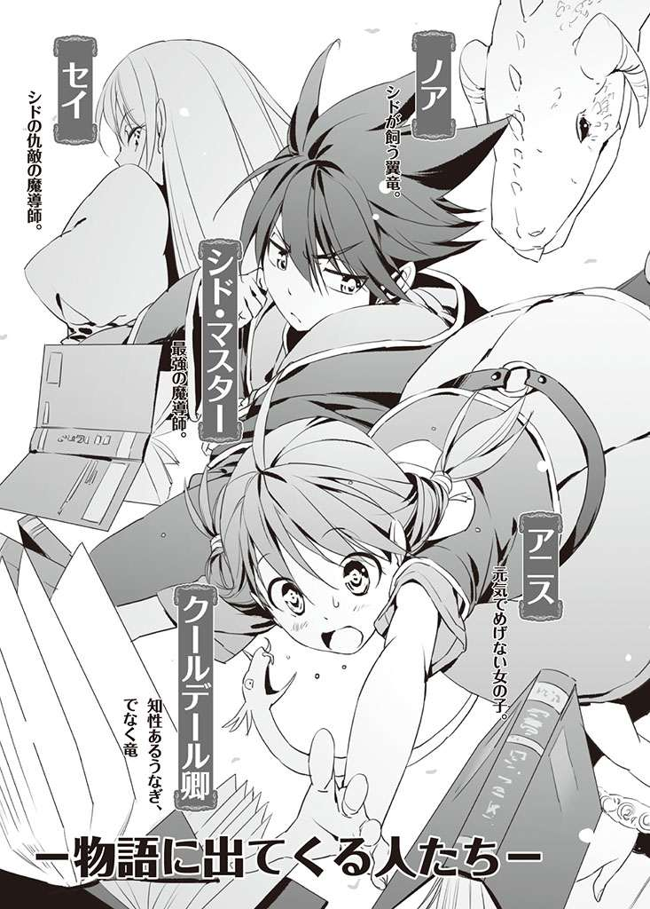

| アニスと不機嫌な魔法使い ３ (HJ文庫) | |
| 花房牧生 | |
| (2009) | |




「三秒だ」
冷然と告げられる言葉。少年の 緋 色 の目には 一 切 の 慈 悲 すらなく、向かい合うものをその 眼 差 しだけで 圧 倒 する。子供にも見える 容 貌 をしているのに、その全身から放たれる 迫 力 は、まるで 竜 のように強大だった。
「三秒やる。......最後の 覚 悟 を決めるんだな」
「で、でも」
後ずさりながら、 喉 から声を 絞 り 出 すようにして言い返す。 命 乞 いをするべきか、許しを 請 うべきか。あるいは、立ち向かうべきか？
決めかねて、アニスは 唇 をかんだ。
冗 談 ではない。シドは、本気でアニスに向かってきている。
「待って、お願い......」
ここはどこか古い城の中だった。低い 天 井 に、たくさんの 彫 刻 が 施 された柱。 肌 寒 いのは季節のせいではないだろう。
向かい合うシドは、両手の平を上向けた。
「待てない。 俺 だって、お前をこの手にかけるような 真 似 はしたくないんだ。だが、仕方がない。お前の力は危険すぎるんだ」
アニスは 涙 を 浮 かべた。シドの感情を感じさせない眼差しの、その 奥 に、自分と同じ悲しみがあると信じたい。だがシドの決意は本物であり、決して 覆 りそうにない。どんなに言葉を費やしても、 彼 の決意を 翻 せるとは思えない。
「戦うしかありませんな」
肩 の上で告げるのは、小さな白い 蛇 に似た竜、クールデール 卿 だ。アニスは視線をやりながら、なお迷うそぶりを見せた。
「さあ、アニス様！ 最強最大の竜ギドガンテを 喚 び出し、あのガキンチョにぶつけるのです！」
「で、でもクーちゃん。そんなことしたらシドがほんとに 怒 っちゃう......それに、ギドガンテってなに？」
クールデールはくわっと口を開いた。
「怒っているのはこちらだと言っておやりなさい。さあ早く、アニス様！」
「三秒たった」
戸 惑 うアニスに投げられた言葉は、あまりにも厳然としたものだった。まるで夜の次に朝が来るとか、そんな当たり前のことを伝えるように、シドは時が来たことを告げた。
「さあ、目を閉じろ。 一 瞬 で終わらせてやる」
「アニス様！ さあ、 召 喚 するのです」
「アニス！」
「アニス様！」
「やめてったら、ふたりとも！ 私は、シドとは戦わないわ！ 絶対に」
両手を 握 り、赤いおさげを 揺 らしながらアニスは 叫 んだ。涙がこぼれそうになるのを 我 慢 しながら、アニスはシドに向かい合った。本当の親子ではないことは、よく分かっている。シドとすごした時間は長いものではなかったかもしれない。だが、アニスには戦うことなどできはしない。
そのときのシドの顔に浮かんでいたのは、どこか悲しい 微 笑 だった。
「いいんだぞ、アニス。 抵 抗 しても」
「......しないわ」
「 黙 って 倒 されるか」
「それもいやよ。ねえ、シド。話し合いましょう。私......あら？ 私、なんであなたに倒されそうになってるの？」
あれ？ と首をかしげる。
目の前のシドは、 間 違 いなくシドだ。黒い 髪 、緋色の 眼 。いつもまとっている、フードの付いた長衣。大人びた表情。いや、彼は見かけどおりの 年 齢 ではないのだから、そんな表情を浮かべるのは当然のことなのだが。
「話し合う気はない」
「でも！ でもでも、おかしいわこんなの」
「ヴント ベイタル アゲート......」
「もう 詠 唱 開始するのっ？」
シドの身体の周りに、ほのかに光が浮かぶ。強大な 魔 力 が、彼の身体から 吹 き 出 ている。それは、自分を倒すためのものだと知っていても、なお 綺 麗 だと思える姿だった。昔、彼の 炎 が 恐 ろしくて泣いた。今もその 恐 怖 は消えていない。火は、 怖 い。だが、今はそれだけではない。
「......分かったわ」
シドが世界のために自分を殺そうというのならば、アニスにはそれは仕方がないことのように思えた。決して理由を口にしようとしないが、彼はいつだってアニスのために動いてくれていたのだ。そもそも、出会ったはじめから。
アニスは目を閉じる。肩の上の白竜が文句を言うが、聞かないことにした。最後の竜も、自分の力も、それは、かつて彼が守ってくれたものだ。ならば、文句を言えたものではない。返す、だけだ。
「あきらめることはない」
後ろから、アニスの肩をつかんだ手があった。アニスは目を開き、後ろに倒れそうになりながら、 己 の背後にいるものの顔を見ようと 振 り 返 った。
「私が助けてさしあげよう、お 嬢 さん」
それはどこかシドに似た、 片 眼鏡 をつけた顔。その目が、口元が、 鼻 梁 が、 雰 囲 気 がシドを思わせる。だが決してシドではありえない。その男は背が高く、おそらく三十以上の 歳 を重ねた、大人の男だった。
男はアニスの背中に手を回し、支えている。
「てめえは......」
シドの目つきが変わった。むきだしになる、 憎 しみの感情。これほどまでに怒った顔を見たことはない。アニスが恐怖するほどの迫力で、シドは相手を 睨 みつけていた。眼差しで相手を殺そうとするかのように。
「相変わらずだな、見かけも、中身も大人になれない」
男はまるで 舞 台 の上にいるかのように肩をすくめる。
「 哀 れだな、 息子 よ」
「息子と呼ぶんじゃねえっ！ 虫 唾 が走る、くそったれが！」
「言葉遣いも最悪だ、育て方を間違ったらしい」
その男は、大人になったシドのような顔で、 優 雅 に笑って見せた。同意を求めるような雰囲気に、アニスは戸惑った。彼は返事のできないアニスを、 優 しく後ろに 押 し出した。
男はまるで貴族みたいな上品さで、差し招くように右手をシドに向ける。
「来なさい」
シドは、まるで 牙 をむいた竜のように、 瞬 きすらせず男に 対 峙 している。
その口が、たがうことなく彼の彼だけの 呪 文 をつむぎだす。そして、男の側も聞いたことのない呪文を口にしようとする。
「だ......だめよ、ふたりとも」
押しのけられたアニスは、全身 震 えがくるような魔力の波動を受けながら、それでも二人の間に入ろうとする。しかし二人は赤毛の 小 娘 など 一 顧 だにせず、 互 いの 魔 法 を放とうとしている。二人の魔力はただごとではなく、 炸 裂 すれば必ずどちらも 怪 我 をする程度ではすまないだろう。
だが、二人とも止まろうとはしない。
「やめて、お願い......だめよ、けんかしちゃ......だめぇーっ！」
アニスは、一瞬で魔力を解放した。その力は、睨みあう二人を 刮 目 させ、詠唱を 止 めさせるほどのものだった。
「おやりなさい、アニス様」
肩の上で白竜が告げる。
「エルパージャ......！」
だれを呼べばいいのかしら、とアニスは考えた。その 躊 躇 、その 瞬 間
「なにをやろうとしてるんだこのスカタンが──っ!! 」
という世界を揺るがすような 大 音 声 がして、アニスは、きゃああ、と声を上げて飛び起きた。
引きちぎるように 覚 醒 させられたアニスは、ぽかんとしてあたりを見回した。
そこはシドの 塔 の中、 玄 関 に続く階段を下りた広間だった。なぜかアニスは 床 に転がっていたらしい。起き上がると、
「アニスちゃん、アニスちゃん、良かった......！」
泣きながらビアンカが 抱 きついてきて、その向こうにいるジークがほっとした顔をしている。そして、 捜 すまでもなく、さっきの大声の張本人、シドが立っていた。
「お前は、 寝 ぼけながらなにをしようと......」
「お願いシド！ アニスちゃんは気絶してたんだから、怒らないであげて。私が悪いんだもの、ごめんなさいアニスちゃーんっ」
ビアンカにぎゅうぎゅう抱きつかれてアニスは瞬きした。
さきほどの戦いは？ と周りを見回すが、そんなものはなかった。夢だったのだ。
代理公の城から帰ってきて数日。ジークとビアンカが加わって、四人そろっての塔での生活が再び始まっていた。
そうだ、ここで自分はノアにごはんをあげようとしていて。そして 突 然 上から悲鳴とともに白い固まりが落ちてきた。アヒルだ、と思ったとたんそれは空中でビアンカの姿になり、下にいたアニスに飛びついてきたのだった。
いきなりのことだった。アニスは 普 通 の女の子であり、特に 腕 力 に 秀 でているわけではない。受け止められるはずもなく、そして 避 けることもできずにまともにぶつかったのだ。
後ろに転んで、そのまま頭を床で打った。
その結果が今、後頭部に感じているじんじんした熱だろう......大きなたんこぶになっているようだった。
アニスはビアンカの肩の向こうに怒り心頭のシドをみた。夢の中とはまた 違 っていたが、やはりいつもの 機 嫌 の悪い顔だった。
シドの不機嫌は、昼食時まで続いていた。ぶっすりした顔のまま、ジークが買ってきた焼き立てパンをちぎって口に運んでいる。アニスがつくった 玉 葱 のスープは、なんとなく味がぼやけていた。 慌 てて作ったせいだろう。
「夢見が悪かったのよ」
アニスが言うと、ビアンカがなんの夢を見たの？ ときいた。
「うーんとね。シドが私を倒しに来るの」
シドは話に興味を持つことすら 屈 辱 だと言わんばかりの表情で、アニスの話を無視している。
「で、その」
シドが父親に対して抱いている根深い反感に関して、その理由をほとんど何も知らないアニスだったが、軽々しく昼食の会話の題材にしてはいけないことくらいはよく分かっていた。さっき炸裂しなかった怒りに再び火がつかないとも限らない。
「ものすごい悪役らしかったわ、シド......魔法で倒されそうになったのよ。で、私も魔法で対決しようと思って」
竜を召喚しそうになったのだ。実際にアニスが喚ぶことができるのは、ノアとヴォロ、その二頭くらいである。夢の中でクールデール卿が 騒 いでいたような「最強最大の竜」などは、どんなに喚びかけても返事すらもらえないだろう。
あのギドガンテとかいうのは 幻 祖 の名前だろうか、とアニスは考えた。ひとりぷるぷる首を振る。そんなのはいやだ、もっと美しくて 荘 厳 な名前でなければいけない。
食べ終わったジークが、フォークを皿の上に置いた。
「で、アニス。その肩に乗ってる白い変なやつ、なんなんだ？ いや、どう見ても 蛇 だよな。どうせペットにするならもっと 可愛 いのにすりゃいいのに」
アニスの肩でまどろんでいた白竜、蛇そっくりのクールデール卿は、ジークの言葉を聞いてむっくり起きあがった。
「...... 爽 やかな朝に暴言でもって起きるこの不快」
クールデール卿は蛇よばわりされると非常に気分を害するのだった。彼がくわっと口を開いて、ジークに思い切り文句を言い立てようとしたとき、アニスは慌ててその首を握りしめた。
「ぐえっ」
「あの、あのね、これは......その、なんというか......ペットじゃないの。いわば、先生のような存在で、蛇でもないのよ」
「蛇じゃなきゃなんなんだ？ ウナギ？」
「失礼なぁ！ どう見ても竜ではないかこのヘッポコのスットコの 間 抜 け面の人間めぇ！ 決めた 我 が 輩 、貴様に対しては一生敵対口調ッ」
ウナギ呼ばわりに怒りを 爆 発 させたクールデール卿は、アニスの手のひらからにょろにょろと 抜 け出る。そして怒りのままジークを 罵 りだした。ジークは、
「う......ウナギが 喋 った」
と瞬きも忘れ、驚き顔のままテーブルの上の白竜に見とれた。
アニスはもはやクールデール卿を止めるのを 諦 め、ビアンカに、
「ウナギってなぁに？」
と質問する。ビアンカは、
「ディシュア湖の特産品よ。ぬるぬるして、蛇みたいな......あ、確かにクーちゃんに似てるわね。色が違うけど」
と答えた。
「我が輩の高貴なたたずまい！ 特にこの、角ッ！ そしてこの、 髭 ッ！ 全身にあふれている、 有 り 難 みッ！ 何もかもが我が輩が蛇やウナギではないことを示しているではないか、この 馬 鹿 で 阿 呆 で間抜けで頭の悪い人間の 雛 めが！ くわっ、くわっ」
「シド、これ、本物か？」
「あぁ」
問いかけられたシドは、全くもって気のない返事をした。
「無視しとけ。 邪 魔 だったら、ドングリでもぶつけてやれ。喜ぶから」
むきー！ とクールデール卿が 怒 り 狂 い、身体を 伸 ばす。 威 嚇 の姿勢だが、しかし彼の全身にあふれている高貴さのせいか、いまいち人を怖がらせるには足りないのだった。
「こやつらに神の 鉄 槌 のごとき、内臓が 煮 えるような 酷 い言葉を投げつけてやりたい。我が輩、断じて貴様たちが気に食わない。泣いて反省させてやるぞこの人間どもめ！ あ、アニス様は人間とはいえこやつらとは別の存在ですから、我が輩がいくら人間を罵ろうと気にしないでくださいね」
くるりと振り返ってアニスに告げるクールデールだった。アニスは
「 大 丈 夫 よ。私、クーちゃんがなに言ってても全く気にならないわ！」
と力強く 請 け 負 った。
「なんだかこう......胸が痛くなることを言われた気がするのですが、気のせいでしょうか」
「アニス、こいつ一体なんなんだ？ 捕 まえて虫かごに入れておけばいいか？ 喋るウナギなんて、王都にもいないぜ。売り飛ばそう」
「アニス様っ、今こそ氷土の 迷 宮 の 最 奥 に 眠 る、絶大なる水竜マギストラを喚び出して、こいつらを 凍 らせて永遠の眠りにつかせてください！ あなたが喚び出すにはちょっと強すぎる竜かもしれませんが、そんなヤンチャも時には必要でありますっ」
そのクールデール卿の言葉を聞いたジークが、あんぐりと口を開いた。そしてアニスを見つめる。竜？ 喚び出す？ と口の中で 繰 り返す。
「ど、どういうことなんだ？ シド。俺、今 素 敵 な言葉を聞いた気がするんだけど。それが本当なら俺、どうすればいいか分からないくらい 嬉 しい言葉だったような」
シドは 渋 面 で、どこからかドングリを取り出すと、白竜に向かって投げつけた。びしっと 鱗 に当たって 跳 ね返り、クールデール卿はあぅっと 妙 な声を上げた。ビアンカが目を丸くする。
「あとで順を追って説明するつもりだったのに、先走りやがってこの 馬 鹿 竜 が。そんなところばっかり飼い主に似ているわけか」
「我が輩とアニス様を 愚 弄 することは許し難いっ」
「え、じゃあシド」
ジークは 驚 きのあまり立ち上がった。
「ああ。アニスは魔導師になった。......竜を召喚する力をもつ。で、説明しておくが」
そう聞いた瞬間、ジークは
「ほほほほほんとかよ！ アニスが！ いや......もはやアニス様と呼ぶべきだよな、そうかアニス様！」
「おい」
シドの話は 途 中 だったが、もはやジークの耳に入っていなかった。
「竜の召喚って、ほんとにほんとなのか！ くーっ、信じられないけど、シドが言うからには本当なんだよな」
ジークはアニスの近くに寄っていった。きらきらしている。全身から喜びの波動が出ている。今にも歌い 踊 り出しそうである。こんなに嬉しそうなジークを見たのは初めてだった。アニスはその勢いに押されて 座 ったまま後ずさり、背もたれに背中をぶつけた。
アニスが魔導師になったのはジークが里帰りする直前のことだが、シドはジークにまともな説明をしていなかった。というのも、ジークはシドの飼っている飛竜ノアに 惚 れ込んでシドの塔に来たのであり、ノアのためならただ働きしても構わないと住み込んで働いているほどの、つまり果てしない竜馬鹿である。アニスの力はジークにとっては夢のはじまり、大喜びしてまともでなくなるに決まっていた。
現状のように。
「ジーク、落ち着いて、あのね、私まだ全然ちゃんと喚べないのよ？」
アニスがたじたじになって引いているのに、
「アニス様は世界中の竜にモッテモテ、いつかきっと世界中の竜を導き招くことになるのだぞー！ 土下座しなさい、かしこまりなさい、 崇 拝 しなさい」
肩の上のクールデールは激しくジークを 煽 るのだった。
「それが本当なら俺、アニスに忠誠を 誓 う！ むしろ 結 婚 してください俺、 奴 隷 になるから！」
アニスの手を取ろうとしたジークだったが、どごっという音とともに後ろにひっくり返ることになった。......シドの 拳 骨 と、ビアンカの 蹴 りが炸裂した結果だった。
「話を聞けといってるだろうがこの竜馬鹿が！」
「そんな求婚ってありなの？ ていうか、ジーク最低！ 変態っ！ 馬鹿ぁっ！」
起き上がろうとしたジークの頭の上に、「うひょーい」という声とともに宙を 跳 んだクールデール卿が着地した。ぐえ、と変な声を上げたジークは床に手をつく。
「我らがアニス様への乱暴 狼 藉 、死に 値 する。さあ、目つきの悪い少年！ 我 が 輩 が押さえている間に、焼いておしまいなさい！」
「ああ、竜馬鹿と馬鹿竜、そろってこんがり焼いてやるよ」
「ちょっ、待ちなさい少年」
「シドじゃなくっても、私がやるわよ。ねぇジーク、身体が上下に分かれるのと左右に分かれるの、どっちがいい？」
大混乱だった。最終的にこの騒ぎは、
「みんなっ、落ち着いてえー！」
とアニスが大声を上げても、全く収まらなかった。
興奮している面々を制止し、 疲 れ 果 てたアニスがその後、シドとの魔法勉強で 居 眠 りしてしまったのも、無理からぬことと言えたかもしれない。
「起きろ！ 魔 法 陣 の特性を言え！」
薄 いとはいえ、 革 表 紙 の本で頭を 叩 かれればかなりの 振 動 がする。痛みにアニスは飛び起きた。そして
「魔法陣は......その、魔法を安定させるの。すぐ消える魔法でも、魔法陣を使えば長持ちさせることができます」
「そうだ。じゃあ、四元素の特性」
「まず、四元素は、火と水と風と土。火は 攻 撃 力 が 優 れているけど、 融 通 がきかないのよね？ 水のように 攻 撃 も 治 癒 もできたりするわけではないの。風と土は、えーと。えーと。風は、ビアンカが得意とする魔法ね。そういえば、四元素の魔導師って、具体的にいうと、どういう感じのものなの？」
「質問に質問で返すな。今の返答を採点すると、三点だぞ」
「 零 点 じゃなくて良かったわ」
「前向きに受け止めるな！」
シドははあ、とため息をついた。
「四元素の魔導師は...... 特 殊 な魔導紋を持っている。初めて古代魔法を使ったとき、魔導師の身体に刻まれる印が魔導紋だ。俺が四元素の魔導師と呼ばれるのは、始原の紋様を持っているからだ」
「魔導紋が違う？ それだけ？」
「魔導師は竜と 契 約 した者だが、始原の紋様は、四元素の頂点にいる竜と契約したということを意味する。当然、 与 えられる力は 他 の竜とは違う。俺の他にも火を使うことができる魔導師は存在する。そいつらと俺の間には、差がある。俺が当たり前にできることでも、そいつらにとっては血を 吐 くほどの努力と才能が必要だろうな」
うーん、とアニスは目を閉じて 腕 を組んだ。
「シドを倒すのは、他の魔導師には不可能なのかしら」
「前々から気になってたんだが、なんでお前は俺を倒す方法を探してるんだ？」
「ううん、違うの。別に、倒そうとか思ってるんじゃないのよ？ あまりにもシドが強いから、 敵 う者はないのかしらって、気になるのよ」
シドはいつも 仏 頂 面 で、機嫌が悪そうにしている。それが彼の基本的な態度である。大笑いしているシドなど、足の下に 怨 敵 を 踏 みしだいているときくらいではないだろうか。日常的に笑いなど、ほぼ無いと言っていい。
だがアニスは、シドがおだてに弱い 傾 向 があると学んでいた。おだてられたからといってほいほい言うことを聞いてくれるわけではないが、やや機嫌が良くなる。あくまでも、平常のシドと比べての話ではあるが。
「別に、敵う者がないとまでは言わない。俺の調子がものすごく悪いときに、相手の調子がものすごく良いとか、戦いの前提条件が悪ければ、それなりに 劣 勢 にもなるだろうさ」
「そうね......物語にもあるわよね。こいつの命が 惜 しければ、その 剣 を捨てろ！ という感じで、悪党が 人 質 を取るの。ヒロインのアストリッドが 誘 拐 されたとき、 騎 士 ナルシムはもちろん剣を捨ててしまったものね......お前のためなら、何度でも剣を捨てる！ って......」
「当たり前のように会話に 妄 想 を混ぜないでくれないか」
げんなりしたシドが言うと、アニスはとんでもない、と首を振った。
「妄想じゃないわ！ マリエルの書いた話よ」
魔法の授業は、すっかり雑談になっていた。シドは話しているうちにそのことに気づいたが、教える内容が一段落していたため、そのまま会話につきあうことにした。
「誘拐されるような馬鹿女のために何度でも捨てられてしまう、剣の方が 可 哀 想 だと思わないのか？ 金属とはいえ、泣いているぞきっと」
「シドには、ナルシムの 悲 壮 な決意が分からないの？ そこにロマンがあるのよ。アストリッドはその場面でのナルシムの 笑 顔 に、たまらなくなって泣いてしまうんだからっ！」
「泣いてしまう程度か、めでたい頭の女だな」
せせら笑われてアニスはいよいよ興奮し、机を叩いて立ち上がった。
「もうっ、どうしてくさすのかしら。シドだって、もしかして私が誘拐されたら、どうするの？ こいつの命が惜しければ、魔法を使うななんて言われたら......」
一瞬びっくりしたようにシドは瞬きする。
そして、 口 の 端 にイヤミな 笑 みを浮かべると、
「惜しくないから、好きにしろ」
「えっ」
「と相手が戸惑ったところに、でっかい炎をたたき込んで、終わりだな」
アニスはしばらく考え込んだが、すぐ勢いを 取 り 戻 した。
「違うわ！ 今の話で大事なのは、 盗 賊 に 囚 われた私が『シド！ 私のことはいいから、敵を倒して』って叫んで......」
「だったらそこで 間 髪 入 れずに倒せばいいだろう」
「違うんだったらぁ！ そこで、シドが迷うところが大事なのっ。私の言葉と、涙と、 卑 怯 な敵に 挟 まれて、絶体絶命の危機なのよ」
「迷う必要はない。そもそも俺なら、誘拐されるようなヘマはおかさない」
アニスは、シドの顔を見つめ返す。そこには、生まれてから一度も折れたことがないらしい鼻があるのだった。 傲 岸 不 遜 な表情は、アニスの言葉程度ではひっぺがすことはできそうにない。
「お前だって、その年でうまうまと誘拐されるほど、馬鹿で間抜けで考え無しじゃないだろう？ ......いや、分からないな。この前はドングリ 詐 欺 に引っかかっていたことだし」
「詐欺じゃないって何回言ったら分かってくれるの！ シ、シドの意地悪っ」
顔を真っ赤にして言いつのるも、シドはわざとらしくいやみなため息をついて、首を振るだけだった。
座れ、と命じられてアニスは無言のまま 椅 子 に座った。勢いが良すぎてお 尻 が痛かったが、悲鳴を上げるのは屈辱だと感じ、必死で 耐 えたのだった。
「ほんとにあなたって、いつも自信満々よね......」
「俺はちゃんと努力してる」
「そうなの？」
ちらりと視線を向けられたシドは、ふいとそっぽを向いた。わざわざ自分で努力を 匂 わせたのが 恥 ずかしくなったのだが、アニスはそうはとらなかった。
はぁ、とため息をつく。
「シドはきっと、ありあまる才能があるのよ。性格は意地悪だし 根 性 も悪いし人を人とも思わないけど、頭はいいものね」
「まさかと思うが、もしかしてそれは 褒 めてるつもりなのか？」
シドが小声で問うたが、アニスは気づかなかった。
「私だって努力してるつもりなんだけど......でもこう、なんとなくうまくいかないのよね。クーちゃんは色々助言してくれるんだけど、やっぱり分かりづらいし。才能がないような気がするわ」
「また 隠 れて召喚をしていないだろうな」
「してないわ。大丈夫よ。もし隠れて召喚しても、後でちゃんと 謝 るから、安心して」
拳 でぽかんと頭を叩かれ、アニスは声を上げた。
「痛い......」
「全然分かってないだろうが！」
両手で頭を押さえつつアニスは、
「でもね、私も 魔 法 使 いとして成長していかないといけないと思ってるのよ」
と 訴 えた。シドは馬鹿にした表情を浮かべたまま、
「それで？」
「私のできることって、召喚だけよね。現代魔法には向いてないって、分かったし」
数日前、塔の 掃 除 をするのに便利な現代魔法「ごみの除去」を行おうとしたアニスは、魔法の構築に失敗した。魔法陣から 煙 と 爆 音 を立てる結果となり、シドたちの 度 肝 を抜いたのだった。
アニスの魔力は 甚 大 なものであるが、本人はその力を調節することには不得手である。また、不完全なできの古代語で形成された魔法陣は、まるで冗談かなにかのように「ごみの除去」ではなく「びっくり大音声」という結果が出るようになってしまった。
どう間違ったらこうなるんだ！ と、怒り狂ったシドに何時間も説教され、アニスは泣きながら現代魔法はもう使わないと誓わされたのだった。
「現代魔法に向いていないというか......逆にお前が何に向いているのかが、俺にはさっぱり分からん」
腕 組 みしたシドに評され、アニスは「むう」と 眉 根 を寄せた。ここで女優だの料理人だのと並べても、シドの同意は得られないだろう。
「だ、だからね。召喚だけでもちょっとは経験を積んでいきたいなと思ってるの......クーちゃんが、毎日毎日寝る前に明日はこんな竜を喚びませんか、 素 晴 らしいですよね竜の召喚、アニス様っ、どうして我が輩の気持ちを分かっていただけないのですか、そんなにあの目つきの悪い少年に義理立てするのですかっ、もはや 一 緒 に家出するというのはいかがですかって......あ」
シドの 眉 間 のしわが深くなり、アニスはクールデールの口調の真似に 没 頭 しすぎて言い過ぎてしまったことに気がついた。
「あのくそウナギ」
「待って！ クーちゃんは悪くないの。たぶんね、行き過ぎた職業 倫 理 なのよ。職業倫理って言葉、マリエルに教えてもらったんだけど、なんだか背筋を伸ばしたくなるわよね」
「お前のくだらん 戯 れ 言 には、そろそろ 飽 きが来たんだが」
ウナギを焼きに行こうとするシドの腕を、アニスは必死でつかんだ。
「待って！ でね、ジークも『アニスの召喚が見たい』って、何度もお願いに来てくれてることだし」
焼 却 リストに竜馬鹿が追加された結果に気づかず、アニスは言いつのった。
「一度、召喚を 試 したいと思うの。しっかりシドが見てる前で、危険だと判断したら、いつでも止めてくれて構わないの。ちゃんと言うこと聞くから、だからお願い！」
シドは涙目で腕をつかむアニスを振り 払 おうとしたが、そうすることができないまま、深く深くため息をついた。
「で、許可が出たなんて、ほんとに驚きだわ......」
青空の下で気持ちいい風を受け、ビアンカの 金 髪 がなびいた。気持ちよさそうに目を閉じる様子は、伸びをしている 猫 に似ている。
アニスの召喚を試すとあって、シドの塔は 人 気 のない場所に移動していた。いつものスーリエの花の 咲 く 丘 とは様子が違う。北方の、人里からも 街 道 からも 離 れた 丘 陵 地 である。季節が良かったため雪は見られなかったが、やや空気が冷たかった。遠くには、針葉樹林の 鬱 蒼 とした山々が並んでいる。
「アニス様、お 風 邪 を 召 しては困りますからこの上着はいかがですか」
ジークが白いレースをあしらった上着を 渡 そうとするが、アニスは 丁 重 に断った。ビアンカが冷たい眼差しでジークをにらむ。
「アニスちゃんが 怯 えてるじゃない。いい加減にそのつまんない敬語、やめちゃったら？」
「いやしかしこれから 奇 跡 の瞬間が起こるんだから、俺としてはできる限りのことをだな......」
「私はね、やめなさいと命令しているのよ？ ジーク」
聞いたことのない声にアニスがびっくりして視線をやると、ビアンカは見たことのない女性に変身していた。すらりとした長身に 革 鎧 をまとい、 長 剣 を 腰 に差している。 黒 髪 の、 戦 女 神 と呼ぶに 相応 しい 美 貌 。
ジークの 長 姉 、エリンの姿だった。ジークは統制された 下 っ 端 軍人のように、 瞬 時 に背筋を伸ばした。
「ただちにやめますっ......って、ビアンカだよな？」
「そう。じゃ、シドを呼んできなさい」
「分かりましたッ」
ジークが飛び上がり、あっという間に塔の中に走り去っていった。
アニスが瞬きして無言でいると、ビアンカはぽんっと元の金髪の少女の姿に戻った。ふんだ、と唇をとがらせている。
「今のは、ジークのお姉さんの姿よ。この姿で『お願い』すると、ジークなんでも言うこときいてくれるの」
ビアンカの変身した姿だと分かっていても、身体が勝手に言うことをきいてしまうらしい。 猛 烈 な教育と 激 烈 な訓練のたまものだった。
「すごい効き目だったわ......ジーク、お姉さんのこと相当怖いのね。私、お姉さんがいるのって 羨 ましいと思うんだけどなあ。特に四姉妹とか良いと思うのよ」
「私、きょうだいってよく分かんないわ」
ビアンカのその 淡 々 とした言葉に、アニスは首をかしげた。
「そういえば、ビアンカって、家族はどこにいるの？」
ビアンカが戸惑ったような不思議な表情を浮かべたとき、ジークがシドを連れてくるのが見えた。シドは右手にクールデール卿をつかんでおり、彼は手の中で「このっ、放せっ、放さないかぁ」とにょろにょろしている。
「 確 認 はすんだ」
と、ぽいとクールデール卿はアニスに 投 げ渡された。アニスが受け取るのを失敗したため、彼は哀れにも地面に 接 吻 することになった。
「ぐぬぬぬぬぬぬ。この許し難いアン・ポン・タンめぇぇ」
「クーちゃん、アン・ポン・タンてなにかしら」
「竜の言葉で 度 し難い馬鹿という意味です」
質問に答えつつクールデール卿は、アニスの腕にひょいとくっつくと、そのままするすると肩にのぼった。
「それではアニス様、 崇 高 で 偉 大 なる召喚の時間の始まりですぞ」
おおっ、とジークが目を 輝 かせている。シドが腕組みをし、ビアンカが「 頑 張 ってアニスちゃん」と 応 援 する。アニスは 頷 くと、塔から少し離れることにした。
クールデール卿は長々と文句を言い続けたが、アニスが代わりに謝ると、ぷんぷん怒りながらも許してくれた。
「さあ、今日はなんの竜を召喚するのかしら」
「まだまだ危ない竜は喚んでいただくわけには参りませんな。強い竜には、まだまだあなたの声は届きません。彼らがあなたに気づけば、もちろんあなたのことを尊重はしてくれるでしょうが、強い竜は本能に従っています。人間から見て、彼らのほとんどは狂っているといっても過言ではありません。 狂 度 の高い竜には、アニス様の命令が届かないでしょう。そしてどんな結果が起こるかは、 推 して 知 るべしです」
「ノアやヴォロは、きいてくれるけど......」
「ええ。彼らは 穏 やかで気だてが良い。ですが、強さで言えばほとんど話にならないレベルです。毒の息や、炎の息を吐いたり、 翼 の一振りで集落を 滅 ぼしたりはできません。あなたの声をきいてくれる竜は、まだまだ弱い竜だけなのです。アニス様」
「強い竜を喚ぶには、どうしたらいいのかしら」
質問してみたものの、ほとんど狂っているような、強大な竜を喚ばなければならないような事態を想像することはできなかった。ちらりと横を見ると、こちらをじっと視線を離さずに見つめているシドの姿がある。彼がいる限り、アニスには強い竜など、必要がないのだ。
「解放する魔力の量、そして質を高めなければなりません。強ければ強いほど、名を知られていればいるほど、古ければ古いほど、喚ぶのに魔力を必要とします。竜の声をきいてください、アニス様」
視界の果てまで続く、緑の 絨 毯 。草を 撫 でていく風に乗って、アニスの詠唱がつむがれる。ジークが 固 唾 をのんで見守っている。ビアンカは落ち着いている。シドは、注意深く見つめている。
「イル・カラドナガル
イル・ヴゥスティーヴァ」
目を閉じて、身体の中の熱を感じる。おなかのなかに、 橙 色 をした熱い固まりが存在している。それは 柔 らかく、だんだん 膨 らんでいき、アニスの中で爆発しようとする。
抑え込みながら、頭はあくまでも冷静に、古代の 言 霊 を口にする。
それは言葉でありながら言葉ではなく、意味であり真実である。花のように美しく、雪のように 儚 く、炎のように熱く、竜のように偉大だ。
「喚びなさい、アニス様。山々を 駆 ける 稲 妻 、 蒼 き兄弟たちを！」
「エルパージャ...... 幾百の兄弟 ！」
高まった 緊 張 が、一気に爆発する。生まれた爆風に、見守っていた者たちが驚いて後ずさる。
風の中心、アニスの目の前の草原に 突 如 現れたのは、深い 紺 色 の 皮 膚 をした、 巨 大 な 尾 をもつ馬竜だった。しかし、そのへんで使われている馬竜とは生まれも性質もまるで異なっている。子供用の小刀と、 英 雄 のために 鍛 えられた長剣ほどに。それは、走るために生まれた竜だった。
声もなく、その竜はアニスの前に 頭 を垂れた。
アニスは手を伸ばし、
「来てくれてありがとう」
と言う。まるで、お 姫 様 に 拝 謁 する騎士のようなたたずまいで、 紺 青 の竜はなおも頭を垂れた。
アニスが手を伸ばすと大人しく撫でられている。その様子はまるで忠犬だが、目つきは 鋭 く、口は大きい。かすかにのぞく牙はまるで綺麗に 研 がれた 刃 物 のようで、アニスの腕や首など、簡単に 噛 みちぎることができるだろう。
馬ほどの大きさだが、もちろん持っている筋肉の質は馬とはまるで違っている。たとえ、剣でもって 突 き 刺 そうとしても、 刃 など跳ね返してしまうだろう。鋼のような筋肉というが、まさにその言葉そのままの存在だ。
「クーちゃん、この子はどこから来たのかしら」
「むうう......」
何 故 かクールデール卿は難しい顔をしていた。
「失敗......ですかな」
「え？」
「いや、今回はこれで良いのかもしれませんが......うーむ。まあ、こんなものか」
クールデール卿は一人で 納 得 している。アニスは追及しようとしたが、
「う、うぉおおおおおおおーっ！」
ジークの 歓 声 の大きさに飛び上がりそうになった。
「稲妻のギザードっ！ 王都で最速伝説を築いてる、騎竜レースの 覇 者 じゃねぇかぁぁ！ 感激だああっ」
「きゃあ！」
ジークはアニスの腕を取り、満面の笑みをたたえたままくるくる回った。あまりの勢いにアニスが目を回しそうになる。回る最中にクールデール卿がぽとりと土の上に落ちた。
何度も回った後にようやく解放されたアニスは、紺青の竜が何故か 不 穏 な空気をたたえていることに気がついた。どうしたの、と語りかける。
「ジーク、この子、ギザードとは違うって言ってるわ。アルファレスと言うんですって。ギザードよりも速いから、間違うな馬鹿、ですって」
「でもそっくりだぜ！ この紺色の皮膚。金色の目」
興奮して近づいていくジークが手を伸ばそうとすると、アルファレスは首を伸ばし、大きな口を開いてがちりと噛もうとした。慌ててアニスがその頭を押さえる。
「ギザードは弟の弟の弟の弟の弟なんですって」
右 腕 と生き別れるところだったジークは、慌てて身を引いたのだが、また竜に近づいていった。
「危ないでしょジーク！」
とビアンカが腕を引っ張るが、完全に気を取られている。
土の上からにょろにょろとアニスの腕に戻っていくクールデール卿が解説する。
「アルファレスは土竜と風竜の血を引いた、 稲 妻 竜 です。走るのがとても速い。この世で一番速いと、彼らは主張しています。そしてカンス・エル・サードというのは種族名で、彼らはとてもたくさんの兄弟がいます」
「どう、シド。成功したわ！」
アニスは得意満面に胸を張ってシドを見た。
シドは、アニスが想像したように、褒めてはくれなかった。深く 悩 むように、どこかよそを見ていた。アニスがもう一度名前を呼ぶと、初めて気づいたようにアニスを見つめた。
「シド？」
「あ、ああ......。稲妻竜は、俺も初めて見た」
「アニス、アニス、俺こいつに乗ってみたい。構わないか？」
アルファレスは牙を 剥 き、 荒 い鼻息を吐き出した。ジークが何を言っているのか、なんとなく察しているらしい。アニスが構わないかと 尋 ねてみると、
「振り 落 とされても構わないなら、と言ってるわ」
「うおお、そんなの構わないに決まってるぜー！」
ビアンカが、「お願いだから構ってよぉ！」と必死に止めようとしたが、ジークは止まらなかった。アルファレスの宝石のような紺青の背中によじ登る。そしてアルファレスは、一瞬の 溜 めすらなく、そのまま突如発進した。
その猛烈すぎる勢いに耐えることができず、ジークは後ろに転がって地面に落ちてしまったのだった。
風のように一気に地平線まで去っていくアルファレスの姿は、すぐに 豆 粒 大 になった。アニスとビアンカは、言葉を失って目の前の光景を見つめていた。
ジークは転がったまま動こうとしない。
「じ、ジーク！ ちょっと、返事してーっ」
「えっ、きゃああ、シド、ジークが動かないわっ」
二人の訴えを受けてシドが駆けつけたが、気絶したジークの顔はあくまでも笑みをたたえていたのだった。
三人の気持ちは「この、竜馬鹿......」という風に、ひとつになったのだった。
「あんなに馬鹿だとは思わなかったわ」
アニスとビアンカは、代理公の城、マリエルの部屋に遊びに来ていた。マリエルはふたりの来訪をとても喜び、部屋を 飾 り 立 て、 力 一 杯 お 菓 子 を用意した。というわけで、マリエルの部屋はとても素敵な匂いで満ちている。
マリエルはアニスの召喚の力について、「 内 緒 よ」と言われながら説明を受けていた。
この前、マリエルの妹ロッテが巻き込まれた 牙 狼 傭 兵 団 の 事件についてはあまり 詳 しい話を聞かせてもらってはなかったが、マリエルはアニスの 境 遇 についての重大性を 肌 で感じており、「絶対に 誰 にも言わないわ」と誓っていた。
マリエルはもしかしたら、アニス自身よりも深刻に話を受け止めていたかも知れない。
そして秘密を守ることができそうにないマリエルの妹、幼いロッテは会話に加わることが許されず、お茶会に参加することをマリエルに断られてしまった。ロッテは今、母エリシアのもとでしくしく泣いているかも知れない。
「ジークさんは、かなり剣の腕が立つ人だって、兄から聞いているわ」
マリエルが言うと、アニスとビアンカは顔を見合わせた。
「お兄さんこそ、強いんでしょ？ 軍学校で、すごい役目を任されたってきいたわ」
「兄は、自分よりジークさんの方が強いだろうって言ってた」
「ええー？」
アニスとビアンカは 揃 って腕組みしつつ首をかしげた。
毎日ノアの産んだ卵を置いている 祭 壇 を掃除し、手を合わせているあのジークが、剣の腕が立つとはとても思えない。それよりもノアの 寝 床 を整える腕や、掃除の腕の方が秀でている気がするふたりだった。
「兄は 真 面 目 な人だから、お世辞は言わないわ。ジークさん相手にそんなことする意味もないでしょうし」
マリエルは優雅に紅茶の 器 に手をつける。
「でもビアンカ、ジークさんがそこまで情けない馬鹿で将来性のない人なら」
「そこまでひどいってわけじゃあ......」
ビアンカが否定すると、マリエルは 無 邪 気 な笑みを浮かべ、
「どうして好きなの？」
直 撃 の質問を投げつけた。
なっ、とビアンカは 硬 直 する。
え？ え？ とアニスはふたりを見比べている。
「なっ、なななっ、なんでそんな」
クッキーを取り落としつつ、拾おうとしたビアンカはクッキーを踏んづけてしまった。 動 揺 しすぎている。
「絨毯が 汚 れちゃった......」
「そんな 些 細 なこと、気にしないで。で、どうなの？ ビアンカ」
「ちっ、ちちち、違うわよう。そんな」
「そうかしら。そうは思えないけど......」
ちらっと視線を投げかけられ、ビアンカは顔を真っ赤にしながら、違うわ、違うったらー！ と叫びつつ、アヒルに変わった。
そのままアニスのおなかに 突 撃 しようとするが、 微笑 むマリエルがその身体をひょいとつかんで持ち上げる。そしてクチバシに口づけるほど顔を近づけた。
「でもビアンカったら、ジークさんが帰ってきたとき、とっても嬉しそうだったけど......あれって、お友達が帰ってきて嬉しかったからなの？」
「そうよそうよそうなんだったら、マリエルったら、 邪 推 しすぎよ」
「そっかあ。じゃあビアンカは、ジークさんのことどうでもいいのね？ たとえ彼に 恋 人 ができても、一切気にならないのね？ だったら私、ジークさんのこと...... 狙 ってみようかしら」
ビアンカは 絞 め 殺 されるアヒルのような声を上げながら、金髪の少女の姿に戻った。やや髪が乱れている。
ビアンカは、 頬 を上気させたまま、
「マリエルは......も、もしかしてジークのことが好きだったの？」
と問う。その 一 生 懸 命 な様子に、マリエルは目をきらりと輝かせた。
「そうねえ、好きとか 嫌 いとか決められるほど相手のことを知らないわね。もっと、深く知り合ってみないと分からないわ」
「ふ......深くって！」
動揺のあまり涙目になるビアンカの前で、マリエルはにっこりと邪気のない微笑みをたたえた。
「意地悪言って、ごめんなさい。私、ジークさんよりあなたの方が好きよ、ビアンカ。だから彼のことは一生 恋 愛 対象にならないわ」
ビアンカは目を見開き、両手で紅潮した頬を押さえた。そして 恨 みがましい目でマリエルを見つめつつ、ううううと 唸 った。
「マリエルって......意地悪ね」
「そうねぇ。ちょっと、そうかもしれないわね」
マリエルはくすくす笑いながらビアンカが椅子に座り直すのを 眺 めていた。そして 隣 に座るアニスに視線を動かした。
「......アニス、ずっとぽかんとしているのね」
マリエルが話しかけると、アニスははっと我に返った。
「ビアンカって、ジークのことが好きだったのね。私、気づかなかったわ」
「やっ、やっ、やめてぇ！ アニスちゃん、お願いだから本人に変なこと言わないでぇ！」
ビアンカは本気でアニスにお願いしていたが、アニスは気づかずに底ぬけに明るい笑みを浮かべていた。......ビアンカが恐怖するほどに。
「ごめんなさい。そういえばポーラ様の教会でも、恋愛の話には 疎 いって言われ続けてたの、私。でもそうと知ったからには、協力するわね。任せて！」
胸を叩くアニスだが、その逆頼もしさにビアンカはさーっと青ざめた。
「あーんお願いだから許してぇー！」
「アニス、こういうことは本人たちの問題だから、周囲が手を出したりしちゃいけないわ」
さすがにまずいと思ったか、マリエルが口を挟んだ。
「そうかしら。でも、なにかできることがあれば......」
「ないのよ、アニス。できることなんてなにもないの。時々ビアンカの話を聞くくらいが、ちょうどいいのよ」
「うーん......それが一番いいのかしら......なんだか残念だけど」
「お願い、納得してアニスちゃんっ！」
小さなノックの音に気づいた三人は、騒ぎを一段落させた。
少女たちのかしましい部屋にぴょこりとのぞかせたのは、髪をウサギの耳のように結んだ小さな少女の顔だった。マリエルの妹、ロッテである。
ロッテは視線をあびると、まるで舞台女優のように鼻をつんとあげて、三人の座るテーブルまで近づいてきた。
「そろそろ 皆 さん 退 屈 されてたんじゃなくって？」
仲間に入れて 欲 しいならお姉様たちにちゃんとお願いしなさい、と母に言われてやって来たロッテだった。
「私、会話に入って差し上げても、構わないですわよ」
こまっしゃくれた様子に、マリエルは眉根を寄せた。いつもこの妹は、生意気なことばかり言うのだった。
「私たち、 自 慢 話 聞いてる時間はないのよ」
マリエルがいつもの無表情で冷たくそう言った。しかしロッテは 挫 けることなく、
「自慢話なんて、私、しませんわ」
「ロッテの話、ほとんど 全 て自慢話よ。 刺 繍 がうまくいったとか、 綴 りの授業で一番だったとか」
ロッテはむう、と力を入れて両手を握った。
「でしたら、お母様に言われたとおりお願いするわ。私を仲間に入れなさいっ！」
髪がぴょこぴょこ跳ねる様子をアニスは 和 んだ様子で見つめている。しかしマリエルはつんと横を向いた。
「お母様に言われたのとは、違う言葉じゃない？ それ」
つれない態度に耐えきれず、ロッテの目が 潤 みだした。全身をぷるぷる震わせ、
「もっ...、もういいですわっ！ マリエルの意地悪っ。私、また家出してやるんだからあっ」
そのときすっとマリエルの目が見開かれた。空気が変わったことに気づいたのは、アニスとビアンカである。ロッテはこの前、家出 騒 動 を起こした。そのことに関しては両親からこっぴどく 叱 られ、反省させられたはずである。まさかまたもや同じことを繰り返すはずはないが、 脅 し 文 句 に使うなら構わないとロッテが考えているなら問題だった。
しかしアニスとビアンカが心配したのは、ロッテがこれからどんな目に 遭 うか、という方面だった。
「お前のあだ名を考えたわ」
走り出そうとしたロッテの足が止まる。自分でも言ってはいけないことを言ったとよく分かっていたロッテは、おそるおそる振り返る。
マリエルは優しい笑顔で、
「ばかたれロッテよ」
と告げた。
ロッテは口を押さえながらきゃーっと悲鳴を上げた。
「そんなのいやぁ、そんなの、絶対いやぁ！」
ロッテは叫び、そしてそのまま顔を 覆 って泣き出した。アニスとビアンカは固唾を飲んで見守っている。
そしてマリエルはすっと椅子から立ち上がると、「ロッテ」と名前を呼びながら絨毯の上に 膝 をつき、両手を広げた。
それを見たロッテは、躊躇せずにその腕の中に飛び込んでいった。
「家出するなんて冗談、二度と口にしないって約束したでしょ？」
「マリエルのばか、いじわる......」
「はいはい」
「ひっ......ふぇ、いっしょに、遊んでよぅ......」
マリエルは腕の中のロッテの頭を撫でながら、アニスとビアンカに、目で謝った。ロッテも一緒でいいかしら？ と問う眼差しに、ふたりはぶんぶん頷いて答える。
しばらくして泣きやんだロッテは、マリエルの膝の上を居場所と決め込み、堂々とそこでクッキーをかじりだした。そして口を開けばいかに自分が優等生か、優雅で素敵な貴婦人かをとくとくと語ったのだった。
「マリエルって素敵なお姉さんよねぇ」
時間が来て、シドの塔に戻ろうと中庭の 扉 を開きながらアニスが言うと、ビアンカはうーん？ と 微 妙 な返事を返した。確かに見事なロッテ操縦術だったが。
「なんだかこう、とっても家族！ って感じがしたわ。ちょっと口が悪かったとしても、やっぱり 信 頼 とか、愛で結ばれてるのよね。家族って」
「そうね......」
「私、家族ってよく分からないから、羨ましいわ」
中庭の飛び石を渡っていく。シドの塔までほとんど 距 離 はない。二人を見下ろしているのは、満月だった。帰ると言った時間よりも、少し 遅 かったかも知れない。月の光を浴びた中庭の花たちは、少し元気がないように見える。
「シドと私は一応、家族かも知れないけど。でも、ロッテみたいにシドに抱きついたら......きっと払いのけられるわ。 賭 けてもいいわ。シドって難しい人よねぇ、ビアンカ」
アニスはビアンカを振り返った。
「そういえば、前も聞いたけど。ビアンカの家族って、どんな人たちなの？」
緑色の目が戸惑ったように見開かれる。
「えーと......、あのね......」
そのビアンカの声を飲み込む勢いで、
「お前ら一体いつまで遊んでるつもりだーっ！」
と 怒 鳴 り 声 がして、アニスとビアンカはほとんど抱き 合 いながら後退した。
シドの塔の扉のところに立っていた、長身の 影 は
「......ジーク、今のは」
「シドの真似。そんなに似てたか？」
へらへらと笑うその顔が、一瞬にして凍り付く。
「ジーク、 面 白 い遊びを発明したみたいですわね？」
ビアンカがジークの二番目の姉、ユーリに変身したのだった。切りそろえられた 前 髪 、すっと伸ばされた背筋。 清 冽 な印象を与えるその 美 貌 で、
「私もひとつ、考えました。お前が塔の外を百周してくる遊びです」
「行ってきます！」
ジークはあっという間に走り出した。ビアンカは元の姿に戻ると、戸惑っているアニスの手をつかみ、行きましょっ！ と引っ張った。
疲れ果てているジークが 食 卓 に突っ 伏 しているのを見、シドは「なんだ？」と首をかしげたが、どうせつまらないことだろうと判断したのか、すぐに関心を失った。
「明日から出かける」
シドはアニスとビアンカがマリエルの部屋にいる間、ずっと代理公となにか相談していたらしい。なんの話をしていたかは、もちろんアニスには教えられなかった。
「お出かけなのね......で、いつまで留守番すればいいの？」
「留守番はいらない」
「でもこの前、私が代理公のお城に 泊 まるのは絶対反対だって言ったわよね？ 私みたいなのを野放しにしてると、俺の教育能力が疑われるって。そう言われたときは腹が立ったけど、でもやっぱりシドの話にも一理あるなあと思えてきたのよ。たとえば代理公のお城で私が 花 瓶 を割ってしまったりしたら、 弁 償 してくれるのはシドなんですものね。そう考えたら、やっぱりお泊まりはまだ早いというのも納得かなあって」
「誰が城に置いていくと言った。話を最後まで聞け」
シドはアニスの話を中断させつつ、
「お前も一緒に来るんだ」
と言った。
え、とアニスが本当に驚いた声を出す。
「一緒に？ 出かけるの？」
「お前は本当に人の話を聞いてないな」
「どこに行くのっ？」
「東だ」
「そんな説明じゃ、全然分からないわ！」
「聞いてないやつに説明しても意味ないだろう！ ......王都のそばに、魔導師が住居を構えている地帯がある。 紫 水 晶 通りというんだが、そこに行く」
「ええええ。紫水晶通り？」
びっくりしているビアンカを見、
「ドレスが必要とか言うんじゃあるまいな」
と問い返すシドに、ビアンカは「い......言わないわよ」と首を縮めた。
「お前も一緒に来い、ビアンカ。場所が場所だ、こいつを野放しにすることに不安がある」
「なんなのよう、その命令口調ーっ！」
文句を叫ぼうとしたビアンカは、アニスがきらきらした笑顔で
「お出かけなんて、楽しみだわ、ビアンカ。出かける準備をしないといけないわね。一緒に荷物を準備しましょう！」
と言うのに、
「う、うん、そうね......」
と力なく同意することになった。
「どうしたのビアンカ。もしかして、一緒に来られないの？」
「ううん！ そんなことないわ。アニスちゃんが行くなら私も行くわ。......自分の用事がないこともないし」
心配そうにアニスに顔をのぞき込まれると、ビアンカはかえって明るく微笑んでそう言った。
『......というわけで魔法使いの住むという通りに行ってくるわ。どんな魔法使いに出会えるか、どきどきしています。おみやげ話をたっぷりきいてもらうから、楽しみにしていてね！ これって、次のマリエルの話の取材になるのかしら？ なるといいな！』
とマリエルとの 交 換 日記に書き込んだアニスは、行くぞとシドに 催 促 されつつ、慌ててノートを閉じた。
塔の外に出ると、ジークがノアの背中に多人数用の席を設置していた。ノアはアニスを見てキュウウと嬉しそうな声を上げる。
今回出かける先には、ノアに乗っていくのだった。アニスは何度かの体験によって、空の旅はあまり得意ではなかったが、シドは基本的に空の旅を選ぶ。いやがっても当たり前のように無視されるのだから、慣れないわけにはいかなかった。
「さっさと乗れ」
「待って！ 足りないひとがいるわ」
と慌てて塔に戻ろうとしたアニスの足首に、白い身体が巻き付いた。
「アニス様っ、我が輩のことを思い出してくれたのですね！ しかし大丈夫、我が輩はいつでもあなたのそばに」
「ごめんなさい、違うのよクーちゃん」
あっさり置いて行かれて、クールデール卿は口をぱっくり開けて 衝 撃 を受けていた。
塔に戻ったアニスは、元気なくふにゃふにゃしているアヒルを抱いて、戻ってきた。アヒルになったビアンカは、アニスの胸に抱かれたままうなだれている。
「どうしたそれは」
さすがにシドですら質問してしまうほどの、元気のない様子だった。
「ビアンカ、元気ないの......病気かしら」
「さすがに俺も、アヒルの病気は知らんぞ」
文句を言おうとクチバシを開こうとしたビアンカは、しかしそのままぐったりとアニスの胸に頭をもたれさせた。
「ジーク、元気づけてあげて！ できれば、情熱的に」
「え。えーと......ビアンカ。どうしたんだ、風邪か？」
反応はない。
「情熱が足りないのよ、ジーク！」
けしかけられたジークが「なんだそりゃあ」と 真 剣 に困っている。シドは「また変なことを......」とアニスの些細な行動から全てを 見 抜 いていたが、特にたしなめたりはしなかった。
「もっと真剣に尋ねて、ジーク！」
「ビアンカ、もしかして、卵でも産まれたのか？」
「違うわっ、すけべーっ！」
いきなり人間の姿になり、 絶 叫 したビアンカは、再び元気なくしょげた。驚いて身体を引いたジークだったが、シドに早くしろと言われ、 御 者 席に行ってしまった。
ビアンカはしおしおと座席に乗り込んだが、猫の姿になってアニスの膝の上に丸まった。髭が下向いている。
最後に乗り込んだシドが、やれ、とジークに 顎 をあげて指示した。
「すけべって......卵って言っただけなのに......」
と 呟 きつつ、ジークは 紐 を引いてノアを御する。アルファレスを召喚した丘陵地に置かれたシドの塔が、あっという間に遠ざかっていく。
「塔、このまま置いていくの？」
「いや、 封 じる」
言葉の通り、シドが結界の力を発動させた。するとシドの塔は、周囲から見えない状態になった。この場所に来ても、魔力を持たない人間には、塔の存在が関知できないだろう。現代魔法のひとつだったが、アニスはまだそんな魔法があるということすら教えてもらっていなかった。
「私には見えると言うことは......魔力があるから？」
「違う。お前には見えるようにしてる」
「うーんと......結界を張るための魔法陣に、例外規定を設けてるってことなのかしら」
「そうだ。少しは教えたことを覚えてるじゃないか。犬だって教えれば因数分解ができるはずだと、信じた 甲 斐 があった」
「ものすごく......馬鹿にした？」
「そこで質問の形にするのが、お前というやつの可愛げだよな」
何と言っていいか分からず、アニスは口をぱくぱくさせた。意地悪な笑みをたたえたシドの口を思い切り引っ張りたくなるが、そんなことをすればどんな仕返しをされるか分かったものではない。
ノアは背中に乗せた人間の重みなどほとんど感じない様子で、いつものようにたっぷりと風を受けて空を飛んだ。猫の背中を撫でながら、アニスは小さくなっていくシドの塔を見つめていた。
なにか 寂 しさを感じたが、そんな寂しさは感じる必要がない、と打ち消した。
「ねえ、シド。どうして今回はノアに乗っていくの？ 塔で移動してもいいのに」
「これから行く先は、魔導師の塔が何百何千と建てられている場所だ。俺の塔を置く場所がないくらいにな」
まあ、とアニスは瞬きした。
そんなに塔だらけの通りなど、見たことがない。何と言っても魔導師たちの住む場所だ。今までアニスが 訪 れたことがあるような、通りいっぺんの場所ではないだろう。不思議と 奇 怪 と幻と 魔 性 が行き交う通りなのだ。アニスはものすごい情景を想像した。
「一瞬たりとも油断ならないってことね...... 肝 に 銘 じておくわ」
「......まあ、そうしてくれれば問題はない。俺の塔をあそこにおかないのは、周りを 挑 発 しないため、ということもある。むやみやたらに挑戦してくる 輩 には事欠かないからな。お前も、変な 誘 いにはのるな。むしろ、俺以外の人間とは口をきくな」
「なんだか 嫉 妬 深 い恋人みたいな発言だな！」
ジークが笑いながらそんなことを口にし、シドは 懐 からなにか取り出して投げつけた。イテッ、とジークが後頭部を押さえる。跳ね返って席に落ちたのは、ドングリだった。文句を言おうと振り返ったジークは、
「ああ......こいつと間違えた」
とシドが半笑いで懐からナイフを取り出すのを見て、前に向き直った。
「目的地まで頑張ろうなあ、ノア！」
などと声をかけている。
「それはいいとして、シド。今回その紫水晶通りに行くのは、何のためなの？」
「とっくに説明しただろうが」
「してないわ！ シド、ぼけちゃったんじゃないの」
「............友人に会うためだ」
シドがアニスの発言は放置したことに、ジークは 贔屓 だと呟いた。
「シドの......友人？」
「ああ」
シドは、何か悪いかという風にアニスを見つめる。
「アニス様はお前のような目つきが悪く性格も悪く根性の曲がったやつに友達がいるはずはないと思っておられるのだ、少年」
「そうか、解説ありがとう」
と無造作にクールデール卿の身体をつかむと、シドは綺麗に青空に 放 り投げる。
「ふんぎゃおおおあああえーッ」
......ふりをして、アニスのもとに戻した。
「クーちゃんっ、クーちゃんっ？ しっかりしてっ。大丈夫よ、生きてるわ。生きてるっ！」
慌ててアニスはクールデール卿を握りしめた。クールデール卿はしばらく目を見開いたまま硬直していたものの、時間がたつとアニスの肩にぐんにゃりとぶら下がった。
猫といい、白竜といい、アニスにすがったまますっかり元気をなくしてしまった。
「シドのいじめっ子っ」
「そうか、じゃあいじめっ子らしく行動してやるよ」
「あっ、痛、いたいったらシド」
髪を引っ張られたアニスは涙目になって抵抗するが、あまり暴れるとノアの背中から転げ落ちかねない。シドはすぐに興味をなくし、腕組みをすると席に深く 腰 掛 け、目を閉じた。
アニスは腹立たしい様子でシドをにらんだが、 追 及 するとまたひどい目に遭わされるので無言のままそっぽを向いた。
なんだか、シドが元気な気がする。いつもより、なんだか機嫌が良いような。だから、いつもよりもみんなをいじめるのか......と気づいてアニスは 憤 然 とした。なぜ機嫌が良いからといっていじめられなければいけないのか？
「私だって、いつかシドをぎゃふんと言わせるんだから！」
「立つな。アニス。......落ちるぞ」
「え、やっ、きゃああっ！」
アニスはシドにしがみつきつつ、ノアの背中からのぞくことができる光景が山々から変わっていることに気がついた。
まっすぐ前方に、非常に大きな城が建っている。太陽のような造形の飾りの付いた中央の塔から、何千段あるのか分からない階段が地上に向かって延びている。
太陽の 恩 恵 に守られた都、王都ベルファランデ。そして六百年前に魔導の力によって建てられたといわれる王城だ。元は王城ではなかったらしいが、今の王族の先祖が宗教団体からこの建物を取り上げ、国の中心と定めたらしい。あまりに巨大なので、遠くからでも形が分かる。その 膝 元 にある都の広がりまではよく分からないが、周囲を取り囲んでいる 城 壁 は、赤茶色の薄いリボンが巻かれているように見えた。
「都って、ものっっっっすごく大きいのね......代理公のお城もすごいと思ったけど、王城は比べものにならないくらい大きいのね。ロッテがいつかお城で社交界デビューするって言ってたけど、それってあのお城でパーティが開かれるってことなのね......」
「ああ。年一回のお祭り騒ぎだな。身分が低いと城にすら入れないが」
「だったら私、絶対にお城には入れないわね」
いや、君一応ラドゥク公の養女......とジークが口の中でツッコミを入れるが、アニスは気づかなかった。
「でも、 憧 れるわ......すごいドレスを身に 纏 う人たちが、微笑みさざめきながらダンスの相手を探しているの。そして、王子様が 結 婚 相手を探しているのよね。決められた婚約者ではなく、一度 恋 をしてみたいといって。ロッテは素敵な王子様と出会いたいんですって。でも私は別に、王子様に選ばれたいとは思わないの。ポーラ様の教会にいたとき、パン屋のラーラさんの話を聞いたんだけど、なんでも 偉 い人の間では、 嫁 姑 問題がすごいんですってね。身分が上であればあるほど、そういう問題も 熾 烈 になってくるんですって」
「お前の口から出ると、嫁姑問題もなんだか気軽なもんだな......」
「だから私、別にお城に嫁入りしたいとは思わないのよ」
「誰も来てくれとは言わない」
「それよりあの建物はなに？ なんだか円形の大きな建物があるけど」
遠くを指さすアニスに答えたのはジークだった。
「あれは円形 闘 技 場 。 剣 士 たちが史上最高の賞金を 巡 って戦いに明け暮れてるんだぜ！ ちなみにその横にあるのがテネス王の建てた大浴場。男のロマンだな」
「なにが？」
「いや、その、後頭部をつかまないでくださいシド様」
シドの指から 逃 れたジークは、アニスの質問に答え続けた。王都にはたくさんの名物建物があり、全て説明していたら日が暮れるだろう。
「俺んちがあそこらへんにあるぜ」
ジークが指さす。しかし距離がありすぎて、結構大きなはずの彼の家ですら、まだ点としてしか見えなかった。
「そうだ。私、ジークのお姉さんたちに一度ご 挨 拶 したいわ。お姉さんというのが、とても憧れなの」
「断る」
「お願い、ジーク。遠くから見てみるだけでも構わないの」
「そのとんでもない考えを早く捨ててくれ、アニス。俺が死んでしまう」
「ちょっと見るだけ。できれば少しだけお話ししてみたいの」
「だからやめてくださいアニス様」
「そうだな、お前のじいさんに久しぶりに会いたいと思っていたところだ」
シドが 珍 しくアニスに加勢し、ジークは真剣に涙混じりの 拒 否 を続けた。
「ビアンカだって見ただろう？ あいつら最悪だ。俺が死ぬまでいじめるんだぜ」
「生きてるじゃない、ジーク」
冷静な 指 摘 をしたのはビアンカではなくアニスである。ビアンカはアニスに抱きしめられるがままになっている。
「これは、幸運が重なった結果であって、今までどれだけ死ぬ思いをしてきたか分からないんだよ！ ビアンカも知ってるだろうっ」
猫の姿のビアンカは、
「そうね。そうだったわよね」
と 精 彩 を欠いた合いの手を打つ。アニスがビアンカ、と呼びかけようとしたとき、
「そういやビアンカ。お前の塔、紫水晶通りにあるって言ってなかったか？」
何気なくジークが言った。アニスは目を大きくする。
「そうなの？ ビアンカ。ビアンカの塔って私、行ってみたいわ」
ビアンカは、
「そういうと思った！ だから私、留守番したかったのにっ......でも、ギルドから知らせが届いてるかもしれないからそういうわけにもいかないし......」
とアニスの膝の上でぷるぷる震えた。
「そうか。掃除をしてないんだな」
「ずっとシドの塔にいるもんな」
シドとジークが 残 酷 な指摘をすると、ビアンカは、
「違うーっ！」
と叫んだ。そのときノアが鳴き声を上げた。そしてその身体がやや前に 傾 き、降下していった。
都を取り囲む城壁には二十を 超 える数の門があり、そこには 槍 を持った役人が目を光らせていた。旅人や行商人たち、都に住む人たちに交じってノアの紐を引き、道を進んでいく。鎧姿の男に睨み付けられたときはアニスは首を縮めたが、シドは堂々と書類を出し、押された印を見た相手を驚かせていた。
「あのラドゥク公の判......？ 初めて見たぞ」
「あの方は 既 に 亡 くなられたんでは？ 代理公が暗殺したと評判だが」
役人たちは軽々しく 噂 話 を口にしている。シドは楽しそうに笑い、
「この前その噂を喋った 奴 を見かけたが、その後何故か川に浮くはめになったな......」
とわざとらしく呟き、彼らの肝を冷やしていた。
「しっ、だめです、そのことを口にしたら我々も......」
とわざとらしくジークが続けたのも効果的だっただろう。アニス一行はわりあいあっさりと門を抜けることを許された。ジークがノアの紐を引いている。
他の旅人たちは正規の許可証を持っていても、役人たちに 絡 まれて 留 められ、何度も同じ説明を繰り返したりしている。つかれている判の名前が、身分の高い者であればあるほどその時間が短くなるのだった。 勘 弁 してくださいよ、商品が 腐 っちまう！ と叫んでいる商人もいる。
「ラドゥク公の判って、シド、自分で押したの？」
「許可証なんざ、いくらでも作れる」
ノアの背中から見た城壁は薄いリボンのようだったが、実際はとんでもない分厚さで、 洞 窟 のような道を抜けていくときには向こう側が小さな光に見えた。そして通り抜けた先は王都ベルファランデ、その 遙 か下部の 隅 っこだった。
中央に行くほど高地になり、そして都のどこからでも太陽 紋 の 掲 げられた王城を見ることができる。
「ここが紫水晶通りなのね......普通の通りに見えるけれど」
「普通の通りだからな。魔法使いの通りが、こんなところにあるわけないだろう」
あっさり言われてアニスの顔は赤くなった。
城壁に近ければ近いほど下町であり、地価が安い。 裕 福 な者ほど、中央に近い場所に居住を構える。門の周辺の住居群は、アニスから見て、ポーラ教会のあったドルファの町と少し似ていた。 懐 かしさを感じつつ見回していると置いて行かれそうになり、慌てて追いつく。
紫水晶通りは、 一 般 に住む者は噂だけ耳にしたことがあっても、足を踏み 入 れることはできない場所だった。魔法使いたちは 丹 念 に 張 り巡らせた結界でもってその通りを隠し、 一 般 人 の目から遠ざけているのだった。
だがその結界も、シドのような魔導師から見れば「無いも同然」だった。当たり前のように建物と建物の間の暗い道を行く。そこは小さすぎてノアも通れないように見えたが、なぜか入ることができた。アニスがびっくりしていると、道は白いもやにつつまれた。シドが 壁 に向かって歩いていく。
ぶつかるわ、と警告を発しようとしたとき、シドの姿が消えた。ぎゅっと手を握る 感 触 がして、見るとビアンカが大丈夫よ、と頷いていた。後ろにはジークとノアが続いている。アニスも、赤い 煉 瓦 でできた壁に向かって歩いていった。
目を閉じて、開くと、そこはすでに紫水晶通りだった。
「なに変な顔してるんだ？」
と言われて気分を害するも、通りの様子に気を取られずにはいられない。
魔法使いの通りはいつも夜のように 薄 暗 く、おどろおどろした気味の悪い雰囲気をしていると想像していたのが、全くイメージとは異なっていた。
塔ばかりの場所など今まで見たことがなかったが、いざ目にしてみればまるで当たり前のように見える光景だった。ただ単に家が、塔であるだけだ。
さまざまな形の塔があった。細い塔、太い塔、高い塔、低い塔、階ごとに大きさの異なる塔。また 色 彩 も様々で、白い塔、黒い塔、煉瓦の塔、緑の塔、たくさんの色彩で 彩 られた塔。何でできているか分からない塔、壁に絵の 描 かれた塔、色も形もなにもかもが持ち主の好きなように造られており、 無 茶 苦 茶 で 無 秩 序 だったが、何故か不思議とまとまっているように見えた。おそらくそれらが「魔法使いのものである」という点では皆同じものだったからだろう。
薄い 紫 色 の道が続いている。細かな石が 敷 き 詰 められたその道は、なんだか 煙 っているように見える。細かい造りがまるで、鱗のように見える。紫水晶通り、というのはおそらくこの紫水晶をちりばめたような通りの色から来た名前なのだろう。
通りを行く者たちも、黒い長衣をまとったいかにも 怪 しげな集団、ということは一切無く、アニスたちのように、普通の人間に見えた。 老 若 男 女 、表の通りと何も変わらないように見える。しかし、やはりどこか異質だった。
連れている動物が変わっている。ノアのような竜を連れている者もいれば、真っ赤な 鷹 、大きな口の 鰐 、中にはたくさんの黒い虫をまとわりつかせている者もいる。アニスがびっくりして見つめると、虫の男はにやにやと口元に笑みをしたたらせた。
普通の家屋などは一 軒 として見あたらない。表のように果物や肉やパンを売っている店はひとつとしてない。「グリムの店」と 妖 精 の絵の描かれた看板の店に何人か入っていくのが見えたが、それが何を売っている場所なのか、分からない。「ローデンバウムの店」「カル・ステューの店」と看板が並んでいる。
「ああ懐かしいなあ。この空気。どんよりー」
「ビアンカ」
名前を呼ばれただけで、ビアンカはシドの言いたいことを察した。
「はいはい。アニスちゃんはちゃんと守ります」
「なんだか通行人がみんな元気がないように感じるけど......ビアンカに守ってもらわないといけないようなところなのかしら？」
アニスが質問すると、ビアンカはうーん、と顎に人差し指を当てて首をかしげた。
「大人しいけど、元気がないわけじゃないのよ。みんな元気いっぱいだけど、暗い感じなの。魔法使いって、わりと内にこもってるのが多いからね」
「俺が心配しているのは 襲 われるかどうかじゃない。阿呆なガキが迷子にならないかどうかということだ」
シドに言われてアニスはむぅと顔を膨らませた。
「大丈夫ですよーだ」
と舌を出したものの、確かに迷子になりやすい場所だろう。数秒もぼんやりしていれば、確実にシドに置いて行かれて涙目になること請け合いだ。アニスはしっかりとビアンカの手を握りしめた。
「魔法使いが暗い感じって言うけど、ビアンカは全然そんなことないわよ。......シドは少しそうかもしれないけど。まあ、暗いっていうか意地悪なんだけど」
「聞こえるように悪口を言うな！」
目印になるものといえば、遠くに見える白い塔くらいだろう。かなりの高さがあるようだ。代理公の城の中央塔くらいはあるだろうか。つまり、城ほどにも大きいということだ。 幅 はそれほどではなく、細長いのだが。
「ビアンカ。元気出た？」
「うー......」
問いかけに、ビアンカは唸って答えた。元気と言えるほど回復はしていない、という意味だろう。
「大丈夫だって、アニス！ ビアンカだったら、メシ食ったら元気でるんだよ」
後ろから無神経な声が聞こえて、アニスはむ、と 眉 をつり上げた。
「ジーク、それは聞き捨てならないわ。ビアンカだって、たくさん悩むことがあるのよ」
「へえ、たとえばどんな？」
ジークは完全に面白がっている。
「たとえば、無神経な人につまんない質問をされたりとか！ それに、たとえばの話だけど、好きな」
「わわ、わわわわわ、わーっ。だめ、アニスちゃんっ」
「す、好きな、お菓子が、目の前にないとかっ」
ビアンカが慌ててアニスの手を引いた。アニスはくるりと回転させられる。
二人の怪しげなダンスに、ジークははぁ？ と首をかしげた。
先頭を行くシドは、迷いのない足取りで進んでいく。アニスはきょろきょろと周囲に気を取られつつ、ビアンカの手に引かれていく。
「魔導師って、みんな塔を持ってるのね」
「そうね。古い塔を 譲 り 受 けたり、自分で塔を作り出したりするわね。ギルドで魔導師登録したら、安い塔を貸してくれたりするんだけど......でもいつまでもそんな 賃 貸 の塔に住んでるのもつまんないしね。いつかはシドみたいに、自分だけの塔を持ちたいものよね」
「魔導師登録？ 私もできるのかしら」
アニスが目を輝かせると、ビアンカは己の失言に気がついた。シドがきつい眼差しで睨み付けてきている。
アニスのような特殊な事情を 抱 えた魔導師が、普通にギルドに登録など、できるはずもない。召喚者というだけでそもそも「魔導師とみるべきか 否 か」と議論されているので、 認 定 が得られたとしてもかなり時間がかかるだろう。
そして登録されるということは、魔導師機関にアニスの能力がつまびらかにされるということである。それは全力で宣伝しているのと大差ない。そうすれば、召喚者を狙うあの牙狼傭兵団のような集団も、さぞかしアニスを見つけやすくなることだろう。
「登録はね、試験があって、とっても難しいのっ。私も何回も落ちたくらいよ。アニスちゃんは、じっくりシドに魔法のことを教えてもらってからにした方が良いわね。それに、現代魔法もいくつか試験の課題になっていたはずよ」
「まぁ......だとしたら、諦めないといけないかも。私、現代魔法って苦手よ。できる気がしないわ。でも、魔導師の塔っていいわね。私、欲しいわ。アニスの塔」
アニスの塔、というあまりの 語 呂 の良さにジークはぶっと吹き出し、シドは渋面になったが、ビアンカは興味を引かれたようだった。
アニスは、少しだけ考え込み、語り出した。
「きちんと図面を 描 いて、計画を練りたいわね。アニスの塔についてはきっちり決めていかないと......一階は中庭になってて、できればそこで野菜と花を育てたいわ。牛と猫と犬も飼うわ。台所は、代理公のお城みたいな大きいのはいらないけど、ある程度設備の整ったものが良いわね。 鍋 を二つ並べて調理できたらだいぶ段取りが良くなるわ。ヴァフラー製の調理用具を揃えたいと思うの。ニウラさんはそういう高級道具は私には早いと言っていたけど、いずれ一流の料理人になったときには、きっと必要になると思うわ。あと、パンをこねるための台を乗せる、大きなテーブルも欲しいな。野菜 棚 と、あと水回りもきちんと計算しないとね。いっそ 井 戸 が台所にあると、楽でいいわよね。水くみの時にいちいちお外に出なくていいもの。シドの塔はその辺が便利なのよね、代理公のお城では苦労したの。いいえ、苦労だってきっとアニスの塔のためなら我慢できると思うわ。食卓にはお気に入りのお皿を並べるの。花の模様のイヴェンタ焼、あれを揃えることができたら嬉しいわ。真っ白な肌の中央に、小さな赤い花模様が描かれているのよ。あの食器さえあれば、きっと、 他愛 ないパンを食べることすら、特別に思えると思うの。毎日花瓶の花も取り 替 えるつもりよ。あとは自分の部屋......の前に、 書 斎 をつくりたいわ。今まで読んだことがある、宝物の本を並べるの。もちろん『イーデンの 薔 薇 』も置きたいわ。マリエルのサイン入りのやつを、特別 閲 覧 テーブルの上にね。そのテーブルは 豪 華 な彫刻入りで、羽ペンと便せんを置いておくの。座り 心地 の良い椅子を 吟 味 して、そこで書き物を」
「気が散るから黙れ」
妄想は始まったばかりだったが、振り返ったシドの眼差しの冷たさに、アニスは不承不承従った。
「私も、塔に関しては夢があったのよね......」
ビアンカの元気がまたなくなってきたことに気づいて、アニスは慌てて元気づける。
「夢があった、ってどうして過去形で言うの？ もしかして、今のビアンカの塔は不本意なものなの？ 大丈夫よ。今からでも十分間に合うわ。じっくり計画を練って、ビアンカの塔をビアンカのためだけの、素敵な場所にすればいいのよ。私、泊まりに行きたいわ」
「ううう......」
キュイイ、とノアが何かいやがる声をあげた。振り返ると、ノアの 尻尾 をひっぱっている小人がいた。とんがった鼻、黄緑色の肌をした、かなり可愛くない小人だった。
アニスが悲鳴を上げると、そいつはいやったらしい笑みを浮かべた。紙でつくったような、変な服を着ている。ジークが剣を振り 回 すが、 敏 捷 で足元をちょろちょろ 逃 げ回り、全く当たらない。
ビアンカが、呪文を詠唱した。ぶつかってきた風に、勢いよく転がされて小人は後ろにころころ転がった。そしてヒイイと高音でわめきながら、走り去っていった。
「あれは、使い 魔 よ。作り手が下手なのね。相当不細工だったわ」
「背筋がぞっとしたわ！ 黄緑色の皮膚って言うのが怖いし。それに、あの 尖 った鼻が気持ち悪かった。あれじゃ、あんまりひどいわ。失敗した 粘 土 細工みたいだったわ」
「実際失敗したのよ。あれじゃあ、一日動かしただけで 壊 れちゃうわよ、きっと」
「ねえビアンカ、あれは生き物なの？」
「魔法使いの魔力を与えられて動いてるの。簡単な用事を果たしてくれるわ。ああいうの作るのが得意なタイプの魔法使いがいるのよ。魔力 付 与 って、シドに習ってない？」
前を行くシドが
「そいつはそこまでいってない」
と答えた。
「だが、そいつが魔力付与に向いてるタイプとはとても思えない。使い魔を爆発させるのが関の山だろ」
しーんとしてビアンカはアニスに視線を送ったが、アニスは何か物思いにひたっており、シドの話にもビアンカの眼差しにも気づいていなかった。
「ねえ、可能性として、可愛い使い魔って無いものかしら？」
「あれ？ アニス様、我が輩のことを呼びました？」
そよ風のように無視されたクールデール卿がショックを受ける。
アニスとビアンカがいかに可愛い使い魔を作り出すか語り合っているうちに、目的の塔にたどり着いたのだった。
「全くお前らはぺらぺらと......」
と文句を言うシドの方が、なぜか疲れた様子だった。
その塔は、紫水晶通りの中でも外れに存在していた。周囲から少し離れている。距離感が取れない、不思議な 霧 に包まれているのは、おそらく結界の力だろう。
それは円柱の粘土をくるくると 巨 人 の手でひねったような、どうやって作り上げたのかが全く分からない不思議な塔だった。扉らしきものは存在せず、アニスの目の高さのあたりの壁に、 精 巧 に作られた、金属の 獅 子 の顔が 貼 り付けられていた。
「ようこそ。ムルタンの塔に」
壁に貼り付けられたような、獅子の顔の彫刻が口を開いて喋っても、一同は驚かなかった。これなら当然話すくらいはするだろうと思えるほど、その顔には魔法らしい力が感じられたのだ。それは魔力感知という言葉すら知らないアニスにも、剣士であり魔法の素養を全く持たないジークにも分かることだった。
「これは、シド 殿 。久しぶりだ、と言わざるをえない」
獅子の声はくぐもった感じがして、動物が人の言葉を勉強してようやく身につけたような感じがした。
「ああ。変わらないようで、なによりだ」
「我は不変なり。君の身体と同じように」
「俺は不変ではない。お前だって壊れることを、身を 以 て学んでみるか？」
「すまない、と言わざるをえない」
獅子は 素 直 に謝った。
「この塔に入りたければ、いつものごとくに、質問に答えるべきだ、シド殿」
「ああ、いつもと同じ質問をすればいい。こっちもいつもと同じく答えるだけだ」
「我は違う問題を持たない。ならば問う。朝は四本足。昼は二本足。夜は三本足。それはなんだ」
シドが答えようとしたとき、
「分かったわ！」
とアニスが手を挙げた。
「......答えてみろ」
「それは、椅子よ！ 朝は四本足がありました。でも、その家の 夫 婦 が 喧 嘩 をして、椅子はまっぷたつに割られました。だから昼は二本足。 旦 那 さんが一生懸命修理をしたけれど、一本しかつなげることはできませんでした。つまり夜は三本足よ！」
アニスは自信満々だったが、獅子は無言のまま答えなかった。
「間違いだった......？」
「そういう妄想が解答になるわけがないだろう」
残念そうなため息を浴びせられ、アニスはうなだれた。
「私、この問題は知ってるのよね。ジークは分かる？」
ビアンカに問われたジークは、何故か顔を赤らめた。
「言って良いのかな」
「え？ それはもちろん......？」
「すごい下ネタだよな、これ」
自信に満ちたジークの顔は、腹に 強 烈 な 膝 蹴 りを受けて情けなく 歪 むことになった。
「馬鹿！ 信じられない！ 答えは『人間』に決まってるじゃないっ、ほんとに......」
ビアンカがその答えを口にした 途 端 、空気が変わった。
「この結界は心弱き者を 惑 わす、と言わざるをえない」
心弱きものなんざ、この中には......とシドが何か言い返す。待て、そういやこれは......と、声が遠くなっていく。
強い光を浴びせられた気がして、顔を覆った。そして、次の瞬間にはそこは、アニスのいた場所ではなくなっていた。
暗い道を走る。それは、城壁の門を抜けて通った道に似ていた。
アニス、と肩をつかまれる。アニス、さあこっちに来るんだ。言われる自分の身体はあのときの幼さで、その力に 抗 うことはできない。
肩をつかんだ男は、真剣な眼差しでアニスを見下ろした。
「アニス、君は幼いから分からない。そのことを可哀想に思う......だが、君を助けることは、私にはできない。謝るだけなら何百回でも謝ろう、だが君はその謝罪すら理解できないんだ」
その男の顔を、間近に見た。 憂 鬱 な感情に歪む男の顔は、整っているはずなのにひどく 醜 かった。
「君は死ななければならない。君のせいではない、君の身体に流れる血が悪い。君の母があの男と出会って君を生んだ。そのことが間違いだった。生まれるべきではなかったんだ......まさか、君が竜の 花 嫁 だったとは！」
暗い道に、赤いものが見えた。それははじめ小さな炎だったが、男とアニスを取り囲み、だんだんと大きくなっていく。歪んだ蛇の身体のように、うねりながら勢いを増していく。
「さあ。炎に飛び込むんだ」
いや、と声を出すことができない。男の手は強すぎて、アニスは逃げることすらできない。そのとき、
「ヴント ベイタル アゲート」
知らないはずなのに、よく知っている声が聞こえた。
「ギガ バース！」
男の身体が炎に包まれる。
絶叫におびえながら、アニスは探した。そこにいるはずの少年の姿を。知っている。助けてくれたことを、そこにいてくれることを、知っている。
そして見つけた。アニスは喜びに囚われながら、一生懸命に足を動かし、手を伸ばす。
まるで炎のような緋色の目をした少年は、アニスの手を取ろうとした。しかし、その手は届かなかった。アニスの足は、床を 這 いずるように伸びてきた、男の手につかまれていた。そしてそのまま彼の方に、引きずられていく。ずる、ずる、と。
やめて。いやだ。声にならない悲鳴を上げながら、アニスは前に進もうとした。
シドはそんなアニスを見つめたまま無言で立っている。アニスは一生懸命、助けてと叫ぼうとする。だが、喉になにかがつまっているように、決して声を出すことができない。
シドの後ろに誰かがいることに気がついても、一言も声が出なかった。
それは 無 精 髭 を生やした男だった。シドの後ろから、ゆっくりとなめらかな動きで刀身が真っ赤な、 紅 蓮 の剣を振りかざす。 邪 悪 な笑みを浮かべながら。
牙狼だ、と何故かその言葉が頭に浮かんだ。
赤は嫌いだ、火は怖い、血に似ていて、身体がすくむ。だが、あの剣ほど恐ろしいものを見たことがない！ 男は笑いながら、シドの身体に剣を突き立てる。シドは驚いた顔のまま、前のめりに倒れていく。
「......ぁ、」
そのときようやく、声を出すことができた。
「きゃああああああーっ！」
絶叫しながら飛び起きる。両手に何かつかんでいる。
アニスは、自分が握っているのがシドの手であり、シドが自分を見下ろしていることに気がついた。そこは夢の中で見たような暗い場所ではなく、明るい場所だった。
「落ち着け。深呼吸しろ」
「はっ？ ......あ、あ......シド......」
「大丈夫だ。ここは、安全な場所だから」
シドの言葉に、涙が出るほど安心した。言われるとおり、目を閉じて深呼吸した。
夢の中で見たものが遠ざかっていく。現実にはなんの関係もないものだと、理解する。身体の震えが落ち着いていく。
ほう、と息をついてアニスは息を吐き出して、目を開いた。
そこはシドの塔の書斎を思わせる、 本 棚 の並ぶ部屋だった。シドの塔よりももっと雑然としており、本が無秩序に並んでいる印象を与える。床の上にも長机の上にも本やら紙の束やらペンやら数術用の道具やらが並んでいるせいだろう。
「ここは......」
「落ち着いたか」
シドは握られていた自分の手を取り返し、立ち上がった。まだ少し 呆 然 としていたアニスだったが、細い長いすの上に横たえられていたことを知った。悲鳴を上げながら、起きあがったらしい。よく落ちなかったな、と感心しながら足を床に付けた。
最近飛び起きることが多いのは、気のせいではないだろう。
「この塔には、答えを正解しなかったやつに 幻 覚 を見せるような結界が張られていた。 影 響 を受けて、お前はあのとき卒倒したんだよ、アニス」
「なんだか、怖い夢を見たみたい」
アニスはどこか遠い口調で呟いた。シドは、その青ざめた顔をのぞき込み、「どんな夢だ？」と尋ねた。
アニスはシドをまじまじと見つめ返した。
「その......覚えて、無いわ」
シドが殺される夢、と答えるのには抵抗があった。最近、変な夢ばかり見ている。シドの父が出てきたり、無精髭の剣士が出てきたり。説明しづらいこと、この上ない。
重いため息を吐いたアニスはふと視線をあげ、そのまま目を見開いた。
シドの背後に、 禿 頭 の老人が立っていた。アニスを 凝 視 している目の力が、常人とかけ離れている。まるで 玩具 を見つけた子供のように無邪気な笑みを浮かべ、 興 味 津 々 にアニスを観察しているようだ。白い髭は冗談のように長く伸ばされていたが、綺麗に整えられている。魔法使いらしい長衣をまとい、胸に大きな金色の三 角 錐 の形をした 紋 章 を下げている。老人としては、かなり背が高い方だろう。
「アニスかね」
「ええ。私、間違いなくアニスです」
その返答に、灰緑色の目が面白そうに輝いた。そして老人はシドの肩をばんばん叩きながら大笑いをし始めた。アニスは立ち上がってスカートを払い、姿勢を正した。
「あのう、あなたは？」
「ワシ？ ワシは、マギス・ムルタン。皆はムルタン老と呼ぶ。シドとは何十年も友人をやっているよ。昔は同じ学校にいたのに、今ではなんだかワシが 師 匠 のように見えるわけだが」
「やめろ」
ムルタン......とアニスは口の中で繰り返した。いたずらっぽい笑みを見ているうちに、アニスは 記 憶 からその名前を引っ張り出した。
「ああ、『魔導事始』の作者で、本文を全部シドに書かせた方ね。そのお手並みを、 是 非 勉強させて欲しいと思っていました！」
その返答に、老人の笑いがなお大きくなった。シドの渋面はより苦みを増したが。
「さて、君をここに連れてきたのはシドだ。なんのために来たのか、分かるかね」
質問を受けたアニスは戸惑い、シドとムルタン老を見比べた。老人は面白がるようにアニスをのぞき込み、シドは助け船を出すつもりはないらしい。そこでアニスの服の 襟 のあたりに丸まっていたクールデール卿が頭をもたげた。
「この老人め。アニス様に 怪 視 線 を送るのではないっ、しゃー」
「おっ、これは珍しい。白竜だね」
威嚇された途端ムルタン老は、空中に 飛 び跳ねた魚をつかむような敏捷さでクールデール卿をつかんだ。老人らしからぬ動きだった。クールデール卿は非常に驚いた顔のまま、ムルタン老の手の中で固まっている。
「角、ヒレ、鱗。うむ、あの 文 献 に出ていた種族かな？ シド、これは水に属する、とぼけた 幻 竜 だろうか」
「とぼけた、のあたりは同意するが。幻竜というような有り難い存在ではないな」
「無礼ッッ！ 我が輩のありがたさが分からないのはお前たちが 愚 かで哀れな存在だからである、だから早く我が輩をアニス様のもとに返すが良い、これ以上老人に握られていると、我が輩......我が輩、ぐったり」
へこたれてしまったクールデール卿を見て驚いたアニスが手を伸ばし、老人から取り戻した。そしてまた肩に乗せて休ませてやることにした。
「蛇に似ているが、間違いなく竜か、竜の 亜 種 だね。さてアニス。君は魔導師らしいが、何の力を持っているのか教えてもらえるかね」
人差し指でクールデール卿の頭を撫でながら、アニスはムルタン老を見上げた。老人からいきなり押しつぶされるような圧力を感じたのだ。
「喚び出すことが......できます」
「なにを？」
「......竜とか」
静かな答えを吟味するように、老人は頷いた。そして目を閉じ、ゆっくりと首を振った。
「君はワシがシドの友人だと思って、その秘密を告げてくれたのだね。しかし、いけない。友人だろうが親兄弟だろうが 伴 侶 だろうが、君はその秘密を決して口にしてはいけないのだ、 召喚者 」
ムルタン老の言葉を聞き、アニスは泣きそうになってシドを見た。
「シドと離ればなれになりたくなければ、ね」
「......あの、親友にはもう、喋ってしまった、の......」
弱々しい言葉を聞き、ムルタン老とシドは視線を 交 わした。
「君も教育が足りない、 配 慮 も足りない。シド」
仏頂面のシドに、老人はつけつけと言った。強い口調は、アニスが「シドを責めないで」、と老人にお願いするほどのものだった。そのとき、「ただいまぁー！」とビアンカの明るい声が聞こえたのは、まるで天の助けのようだった。
アニスが気絶してから、結構長い時間がたっているようだった。ちなみにジークもアニス同様卒倒することになったのだが、アニスよりも早く目覚めたのだった。彼が見たのは、三人の姉による軍事訓練を受ける悪夢だったらしい。
「 普 段 の精神修養のおかげか、早く目が覚めたけどな！」
「単なる日常の夢だから、意外性もなかったんだろ」
と指摘されてジークは真剣にへこんでいた。
そしてムルタン老の塔の中になんの食料もないと知ったシドが、ビアンカとジークを買い物に行かせたのだった。
ノアは塔の中の中庭にいるらしい。ジークがノアの 面 倒 を見に行っている間に、ビアンカが今日の晩ご飯の手はずを全て整えた。アニスも手伝ったのだが、この塔の台所はお 粗 末 といえるほど小さい上にひどく 荒 れており、ほとんど使われていないことが分かった。あの老人は普段なにを食べているんだろう、とアニスは 謎 に思った。
食卓でその質問をぶつけられ、ムルタン老は 呵 々 大 笑 した。
「魔法使いはものぐさが多いからね。君がいた町では考えられないかも知れんが、食料は調理済みのものが売られているんだよ。あとは食べるだけという皿がね」
「まあ、それは便利だけど......なんだかちょっと、さぼっているみたいで抵抗があるわね。一家の主婦としては、そういうのに手を出すのは 堕 落 だと思うわ。......でも時々はいいかもしれないわね」
アニスはすっかり老人と仲良しになっていた。敬語も 要 らないから普段通りの君でいなさい、と言われその通りに従っている。老人は会話が上手で、アニスからシドの塔での生活について色々と引き出すことに大成功していた。アニスの舌が 滑 るたびに、シドの顔から元々ほとんどない笑みがいよいよ 枯 れていく。
ムルタン老の声は堂々としていて張りがあり、まるで舞台役者のようだった。
「独身者が多いからね。それに、魔法使いは往々にして食べることには関心がない。生を 継 続 できる程度に供給していれば良いのだ。ワシも、普段は 乾 燥 したパンと干し肉ばかり食べておるよ。そういやシドはゆで卵派だったな」
「そう、はじめはゆで卵ばかり食べるから、別のものを食べてもらうのに苦労したの」
まるで母親のようにため息をつかれ、シドはアニスを睨みつけた。
「お肉と、野菜と、穀物をちゃんと取らなければ。ムルタン様も、お野菜が足りないわ」
「ヴィオレッタという有名な薬師がこの通りに住んでいてな。便利な丸薬を作ってくれたのだよ、ひとつ飲むと三日分の野菜を取ったのと同じ効果が得られるのだ」
「丸薬一つだけで？ まあ、それは便利だけど、でも本当かしら......」
「よければ試してみると良い。後で、好きなだけ分けてあげよう。ただし、飲み始めの 頃 は激しく腹が下るから、気をつけてくれたまえ？」
「......いりません」
薬というのも奥が深いのだ、とムルタン老の話が始まる。老人の話は 起 伏 に富んでいて非常に面白い。そのへんの 解 熱 剤 ひとつとってもムルタン老に言わせれば、学究の 徒 によるひとつの 到 達 点 だった。
アニスは興味津々にその話を聞いていた。
「薬師というのがとても大事な職業であることは分かったわ。がぜん、興味が出てきたわ。魔導師の勉強と、薬師の勉強って、ちょっと似ているかも知れないわ。なんというか......怪しげなんだけど、ちゃんとした学問なのよね。私、魔導と一緒に薬学も学んでみようかしら。いずれは薬師として認められる存在になるの。そして、薬師アニスとして、町や村を巡りながら、病気の人たちを助けるの......」
「なんでお前はいっつも町や村を巡りたがるんだ」
シドにつっこまれても、アニスは聞いていなかった。うっとりと頬に手を当てて目を閉じる。まぶたの裏にはきっと、素敵な薬師となった将来の自分が映っていただろう。
「それに、毒について研究するというのが、いいわね。私、毒ってとてもロマンチックだと思うの。物語には、一日仮死状態になるような毒とか、一年後に 蘇 る毒とかが出てくるけど、そういうのって実在するのかしら？」
「『ウィッケンボード家の悲劇』、それに『テラ家の姉妹』だね」
ムルタン老の口から出た物語のタイトルに、アニスは目を見開いた。
「まああ！ よくご存じなのね。私はね、ポーラ様の教会にいたときに読んだの。 孤 児 への 贈 り 物 の中に、時に本が混じってて。たいてい続きものなのに途中の巻しか無くて、私、物語を想像で補ったのよ。テラ家の次女はどうなったのかしら、とか。ウィッケンボード家の息子が家出した後の 冒 険 とか」
「ワシの知り合いに作家がいてね。たいてい本を贈ってくれるのだ。書庫に 埋 まってるはずだから、探してごらん」
アニスの顔がぱあっと輝いた。それは思わずシドがたじろぐほどの喜色満面の笑みで、まるで初めてのご 馳 走 を前にした子供のようだった。
ビアンカがジークと買い物に行ったときの話を始めた。
「ジークったらね、小人に気を取られたままついて行こうとしたのよ。あいつらについて行ったら魔法使いの塔に引きずり込まれて、死ぬまで実験材料にされちゃうじゃない。このあたりにはろくでもないやつがたくさんいるんだから。セイ・ノーマンと同じ 趣 味 の持ち主だって、ごろごろしてるのよ」
セイ・ノーマン。それはアニスにとって良い記憶を呼び起こす名前ではない。
「反省してる......でもあいつら、気になる踊りで人を誘うんだぜ？」
「それが 罠 なのっ。それに、見たでしょ？ 雷 が落ちたの。あれは魔法の雷よ、空は晴れていたし。黒い 十 字 架 のついた 杖 が燃えていたから、誰かが魔法を試したのよ。このあたりはそういうの、珍しくないんだから......」
がたん、と立ち上がる音がした。その勢いにびっくりしたビアンカが、面々に視線をやる。アニスではなく、ジークではなく、ムルタン老でもない。
シドが立ち上がっていた。そしてつかつかとビアンカの席に近づいていくと、
「今、なんて言った」
と押し殺した声で尋ねた。それは静かではあったが、 尋 常 ではない衝撃を押し殺した態度で、迫力のあまりビアンカは手にしていたパンを取り落とした。
「え？ この通りで誰かが魔法の実験をしたのよ。よくあることでしょ」
「ねぇよ、黒十字の杖なんざ、そうそうあるわけねぇだろ。説明はいい、どこでそれを見た？ それだけ答えろ。すぐに」
「え。え。え......っと、白い塔から北に二つめの通り、東に進んでいったら広場があるわよね。そこ」
答えを聞いたシドは、あっという間に飛び出していった。ジークが俺も行くよと立ち上がるのを待つこともなく。
慌てて追いかけようとしたジークを、ムルタン老が止めた。
「ここは紫水晶通りだ。魔法の素養のない人間が、夜うろついてもろくなことはない。それこそセイ・ノーマンのような輩に、ろくでもない目に遭わされる。シドなら大丈夫だ。彼が怒り狂っていることは誰の目にも明らか。それにわざわざ手を出すような輩は、この通りにはいるまい。さて、 葡 萄 酒 をついでくれるかね？」
暗 闇 を疾走するシドに語りかけようとするものは、もちろんこの通りにはいはしなかった。木の代わりに塔の並ぶ森のような暗がり、 獣 の 吐 息 のように生暖かい空気、坂道は気持ち悪くうねっている。魔法使いの 住 処 は、常に変化している。そこにあるはずの塔が次の瞬間、見つけられなくなる。
ビアンカの言った白い塔は、場所を知るのに便利なように造られた、不動不変の塔である。魔導師ギルドがそこに置かれている。
眼球のたくさんついた、赤い皮膚をした犬のような生き物が、シドの行く手を 遮 ろうとした。
「どけ！」
と命じたとき、それは悲鳴を上げて走り去った。怒りそのままの魔力の波動を受けたことは、つくられた存在にはむち打たれたに等しかった。
魔導師、そして魔法使いたちの 沈 黙 を破りながらシドは走った。そして、ビアンカの告げた広場に着いた。あたりは無人である。
小さな広場だった。建物に挟まれて、ほとんど真っ暗だ。わずかな月の光だけがたよりだった。広場の中央には、黒十字の杖が地面に突き立てられている。
そして、シドは魔力感知の現代魔法の呪文を唱えた。それは体内の感覚を高めるものだ。精度を高めれば、どの程度の魔導師によるものかも推測することができる。しかし今のシドには集中力が欠けており、その魔法ではただひとつのことしか分からなかった。
「違う......あいつじゃない」
寒気を覚える。 捜 していたものではなかったという安心と、そして今も続く衝撃が体内を荒れ狂っていた。落ち着かなければ、と深呼吸する。
「そうだよ、落ち着かなきゃ、死ぬよ？」
投げつけられた言葉に反応し、シドは振り返りながら飛び 退 いた。
薄 笑 いを浮かべた少女だった。まるで月の光を固めたような白銀の髪。そしてその、水色の目。人形のように整った顔をしているのに、その 嘲 弄 をたたえた唇が人の神経を騒がせずにおかない。
「セイ・ノーマン」
「慌てている君を、 堪 能 させてもらったよ。楽しかったよ？」
と小首をかしげる。
水の魔導師、セイ・ノーマンだった。シドとは何度となく命のやりとりをした、友好的とは言えない仲である。
この前シドの塔に来たときのものと似た、 可 憐 な少女の身体だ。しかしセイ・ノーマンは男性であり、たくさんの身体を我がものとして 操 る、死人使いだ。この身体も彼の姿のひとつに過ぎない。
「黒十字の杖は、彼の持ち物だったから。君が知ったら、きっと目の色を変えて飛びついてくるだろうと思ったよ。少しは想像と違う行動をみせてくれたら、もっと楽しめたのにな」
「これは、お前の 仕 業 か」
「まさかあ」
くすくすと笑い、セイ・ノーマンはスカートをつまんで首をかしげた。
「 僕 がそんな真似をすると思う？」
「思う。お前にとっては、あいつは理解者だった。 反 吐 が出る、お前の変態趣味を導いてくれた恩人なんだろう？ くそったれが」
「あはははぁ、さぁねぇ。彼は君が殺しちゃったじゃないか？ そのことを知ってるくせに、なんでわざわざ確かめに来るのか、分からないよ」
「何度も、何度も。あいつが生きているかのような印を残すのは何故だ、セイ・ノーマン。俺は疑ってるんだ......あいつが生きているかのように見せかけるのは、単に俺を揺さぶるためか？ あるいは、本当に」
シドの全身が白い光を帯びる。
「生きているのか」
「僕は 嘘 は言わないよ、シド」
セイは 沈 痛 な表情を作り、首を振った。
「あの人が死んだと知ったとき、僕がどれだけ悲しかったか。それをしたのが君だと知ったとき、内蔵と目玉を抜いて代わりに 泥 でもつめて十字架にかけてやりたいほど憎んだ」
「............」
「僕があの人のもうひとりの息子としたら、君は僕の兄弟だ。君のように 栄 誉 と高貴の血など流れてはいないけれど、僕こそは彼の思想をもっとも 濃 く受け 継 いだ。君の悲しみを共有できるとしたら、それはあの赤毛の少女じゃない。この僕だ」
「違う」
「違わないさ。だから教えてあげるよ、シド。今、牙狼傭兵団は君を捜している。君こそが、召喚者のことを知っていると思ってるんだよ。彼らは。......なんで馬鹿どもって、余計な 嗅 覚 だけは、きくのかなぁ？ まさか君のそばにいるあの少女が探しているディルミータだとは知らないにせよ、彼らの得た情報は真実にとても近い」
セイは、シドを 嘲 笑 する。そして牙狼傭兵団をもあざけっている。
「......てめぇは、奴らに情報を......」
「あはははは！ 馬鹿にするのも 大 概 にしなよ、シド。あの 駄 犬 どもに 餌 をくれてやるくらいなら、僕は君に手を貸すよ。ねぇシド、君は僕の手を取る気にならない？」
シドは返事をしなかった。するまでもない、答えるのすら手間だという態度に、セイは苦笑めいた表情を浮かべる。
「どうせ君も調べてるんだろう、シド。牙狼傭兵団は、今や 狂 信 者 の群れだ。末世思想に骨の 髄 まで 冒 されながら、政治家に利用されている犬ども。特に首領の男は、魔導師殺しと呼ばれているらしいね？ どんな魔導師も、彼の前には破れている。今回の件で、君が奴らの一味を倒したら、あの男が出てくるよ。君は、自分なら勝てると思ってるんだろうけどさ。......どうだろうねぇ？」
くつくつと喉で笑いながら、セイはなぶるような眼差しでシドを見やる。
「安心しなよ。君が敗れた 暁 には、僕がアニスちゃんを引き取ってあげるよ。あの子には利用価値がある......っと」
突如ナイフの切っ先をつきつけられ、セイは後ろに転びそうになった。しかし、にやにや笑いながら自分からナイフの刃に喉を当てる。殺すなら殺せ、と言葉なしで告げる態度だった。
「交際の申し込みは、父親の許可を得てからってわけだね？」
「冗談はいい加減にしろ、セイ」
「ああ、もちろん冗談だよ？ 冗談に決まってるじゃないか。そんな不安そうな顔をしなくても良いんだよ、シド。心配するなら、自分の身を心配しなよ。君は自分が思うほど 悠 長 な立場にはないよ。牙狼傭兵団は既に君を見つけた。彼らは、君がディルミータにつながっていると思っている......まあ今の段階では一人の団員の暴走に過ぎないんだけどね。彼らの中には魔導師ギルドに足を踏み入れることができるやつもいるんだ。だから、君のことを調べたのさ。シド・カルツォーク。炎の魔導師。少年の姿をしているが、中身は違う。不老の 呪 いをかけられた、哀れな人形......」
「黙れっ！」
セイ・ノーマンは水色の目を細めた。 硝子 細工のような色彩の 瞳 は、ぞっとするほど非人間的だ。
「黒十字架の杖を使えば、君がのこのこと表に出てくると、彼らは知っているのさ。ギルドの中で、君の正体はまことしやかに噂されている。君がいくら否定しようと、真実は 漏 れ出るものだよ」
「............」
「牙狼傭兵団のやつらは、色々なところで 偽 物 の黒十字架の杖を使って、君をおびき出そうとしていたんだ。だから君の存在を感知したところで、彼らは集まってくるよ。君は魔力をまき散らしながら通りを駆けてきたからね......世界中に、自分はここにいると叫んだようなものだね。馬鹿だなあ、シド。殺したと思っているなら、信じていればいいじゃないか？ 自分の記憶を」
「セイ、てめぇが死人使いでなかったら！ 俺は！」
炎 熱 が、生まれている。広場の空気は耐え難いほど温まり、風が生まれていた。セイ・ノーマンでなければ、これほどの 闘 争 心 をむき出しにしているシドと対峙することはできなかっただろう。
「あの偉大な人の身体を、僕がもてあそぶはずはないじゃないか......？」
「お前は本当にやつを 信 奉 していたのか。それすら疑わしい。議論はもういい。お前を消せば、話は終わる」
「短気だなあ、シド。君の悪いところは、言葉が足りないことだ。いつだって君は守ろうとしたものを守ることができなかった。君は母親を失ったね。次は、あのアニスかな......」
「ヴント ベイタル アゲート......」
詠唱が 完 了 する。大火はセイの細い身体を飲み込み、爆発した。その身体はまるで紙か何かのように一瞬にして 燃 え 尽 きた。
緋色の目には 狂 気 のような光があり、シドは燃え尽きた影を長い間無言で見下ろしていた。
朝が来てもシドは戻ってこなかった。そのことを知ったアニスはしょんぼりしたが、ムルタン老に、書庫に行くといいと言われ、笑顔に戻った。 軽 やかな足取りでその扉を開けたが、そのままぱたりと扉を閉めそうになった。
「どうしたの、アニスちゃん」
「中に 地 獄 が広がっているわ......」
表現にけらけら笑いながらビアンカも中を 覗 き、そしてうっと言葉を失った。中は、本、本、本、本の山だった。いや、山脈だった。山地、 盆 地 、大平原だった。ところどころ火山が 噴 火 したように本がひっくり返っている。
蛇が這ったように道ができているのがご 愛 敬 だった。
アニスとビアンカは、ついこの間までシドの塔の書斎を片付けさせられたところだった。ふたりの失敗で無茶苦茶になった本の山を一冊一冊本棚に戻したのである。特にビアンカは頑張った。床の上の本が、全て棚に収まるところまで 到 達 したのである。
しかしシドは、
「順番が違う。著者順、出版順、分野順に並んでいない。 稀 覯 本 はどこに行った？」
と文句をつけた。それはもちろん、そこまで気を 遣 っていればもっと日数のかかる仕事だったため、二人は手を抜いたのだった。アニスはきこうぼんってなぁに、と質問したが、シドは答えてくれなかった。
説教した後に、シドは「現状復帰」の現代魔法を使った。
ぽかんとしている二人の前で、空中を本が 乱 舞 し、次々に元あった場所に戻ったのだった。 大 破 壊 の行われる前の状態まで、数秒だった。
「なっ、なっ、なっ、なっ」
ビアンカが口をぱくぱくさせる。
「そうだな、確かに俺は現状復帰では元に戻せないという説明をしたな」
「うっ、うっ、うっ」
衝撃と怒りのあまり、ビアンカの言葉が言葉にならない。
「あんな説明、嘘に決まってるだろう。引っかかる方が馬鹿なんだ。もちろん、その指摘をされたなら？ 俺は、 丁 寧 に謝って今みたいに片付けただろう。だが、お前たちは 騙 された。残念ながら、俺は涙をのんで、お前たちの 無 駄 な労働を見守っていたわけだ」
「うっ、うっ、うううそつきーっ！ ひとでなしーっ！ 根性悪ーっっ！」
「自分でも最近、根性が悪いような気がしてきたところだ。周りに馬鹿が揃ってると、苦労が多くてな......」
「このっ、あああもう言葉がみつからなぁい、アニスちゃんーっ」
アニスに抱きついて泣き出したビアンカだった。アニスはビアンカほど腹を立てたりはせず、ぽかんとしていた。
「なんだか、さすがシドだわ。本当に性格が悪くて、なんだか逆に感心してしまったの。どうやったらあそこまでひどい人間になれるのかしら？ 私、ポーラ様に手紙を書こうと思うの。教えを乞いたいわ、シドの根性がねじ曲がったのは、過去になにか酷い出来事があって、裏切られ憎まれ嫌われて騙されたからですか？ って」
「私、ハトになってその手紙を届けに行くわ」
そんな言葉を聞いたシドは、腕組みをし、明らかに二人を見下す眼差しを保ったまま、
「さすがにやりすぎた。反省しなくもない。だから、手紙はやめておけ」
と言った。その言葉はいっそうビアンカの怒りを煽ったのだが......。
そんなわけで、二人はムルタン老の書庫の 惨 状 を見ても、だったら片づければいい！ とは全く思わなかった。戻ってそのことを告げると、ムルタン老はやや期待していたらしく、しょんぼりと肩を落とした。
「ねえねえ、シドはどうしておじいさまのところにアニスちゃんを連れてきたのかしら？」
ビアンカが問うと、ムルタン老はむ、と小さく唸った。
「そうだった。その用件のためにシドは来たんだった。アニス、君と話していると本筋の話が進まなくなるな」
「ごめんなさい」
アニスは素直に謝った。
「謝らなくとも良いが。そうだな......用件、用件」
ムルタン老は部屋の中央のテーブルに近づいていく。アニスとビアンカも、続いた。テーブルの上は雑然としており、 文 房 具 に 書 籍 に食べ物に器に模型に、と 多 岐 にわたる品物が並んでいる。老人が物を押しのけると、テーブルの 端 っこで本が音を立てて床に落ちた。三人はしばらく黙ってその様子を見つめていたが、ムルタン老は気にせず話を再開した。
「ワシは、魔導紋の研究をしている。君の魔導紋を見せてくれるかね？ ビアンカ」
言われてビアンカは右の 袖 をまくり上げた。
一度、アニスも見せてもらったことがある。内側の皮膚に、まるで模様のように刻まれている。それが一度魔導を使ったものに刻まれて二度と消えることがない、魔導紋である。竜の噛み 痕 とも呼ばれる。
アニスが地図に気を取られている間に、ムルタン老は羽ペンで、紙に今見たビアンカの魔導紋を描き込んだ。早く正確な筆遣いで、少し見ただけの紋様の細部までが描かれ、二人は感心した。それどころか、大きさまで寸分違わない。
「ワシは魔導に関して色々な研究を行っているのだが、その中の一つが『魔導紋』だ。これは単なる模様ではなく、色々なことを教えてくれる。ワシは今までに魔導紋を百六十八、見た。それらは全て記録しておる。しかし、風の始原紋様が刻まれるものが現れるとは、想像していなかったな。その資格を持つものは、おそらくここ二百年は現れなかったはずだ」
「んにゃー」
「ビアンカ、すごいわ！」
アニスの褒め 方 はまるでクジに当たった幸運を 称 えるような感じだった。
「しかし、君の方が珍しいのだよ、アニス」
灰緑色の目に見つめられ、アニスは瞬きした。
「魔導紋はほとんどが腕、足、腹、胸のどこかに現れる。顔に現れるものはたまにいたようだが、眼球に宿ったという話はきいたことがない」
右目をのぞき込まれる。しかしそこには、紋様など全く見えないはずだ。アニスの魔導紋は、召喚のための魔力が高まったときに現れるが、それ以外の時は消えてしまっている。
「まるで、君が魔導師であることを隠すために、 契 約 竜 が気を遣ったように思えるね。今までにそんなケースは確認されたことがない。契約はほとんどが......そう、事故のようなものなのだ。生まれたときから印を持つものもいるが、魔導紋を得るために努力したからといって必ず 報 われるわけではない。千人に一人、 万 人 に一人の話だ。運命の力なくして、人は契約竜の力を得られない」
二人は黙って老人の話を聞いていた。
「アニス。シドは、君の魔導紋を封じることができるかどうか、ワシに確認しに来たのだ」
えっ、とアニスは後ずさった。
アニスは、少し前に代理公の城でエリシア夫人と話をした。 彼 女 は昔、魔導師だった。その過去を捨てて 嫁 ぐため、彼女は魔導紋を封じたのだ。たくさんの 代 償 を払って。
「エリシアさんみたいに......」
「 漆 黒 のエリシアを知っているのかね？ 彼女の使う風の魔法は、黒い矢となって相手を 貫 いた。強力な魔導師だった。その力を封じたのは、我々だ。ワシが手段を講じ、シドが実行した。魔導紋をより強力な魔法陣で囲い、無効化する。正確に言うと、契約竜と魔導師の連関を 断 つのだ。簡単なことではない。彼女は猛烈な痛みに耐えたし、そして今もあの城から出ることができずにいるだろう。だがそれでも、彼女は捨てたかったのだ。力を」
アニスは見た。エリシアの腕に痛々しい 火傷 のような 傷 痕 があった。それは花のような形の魔導紋の上に刻まれていた。あれは痛ましいものだった。エリシアの身に降りかかった痛みは、生半可なものではなかっただろう。
そしてアニスには、もっと違う声が聞こえた気がした。契約を絶たれ、悲しみにもだえる契約竜の声が。
「エリシアは 成 し 遂 げた。それは、彼女の強い意志あってのことだ。だがワシは、君にその意志があるようには見えない。何があっても、絶対に己の魔導を封じなければならないという、使命感が君にはまだない。それに」
と、やや言いづらそうにムルタン老は言葉をとぎらせた。
「......それに、魔導紋を無効化するために、君の目はあきらめなければならないだろう。若いお嬢さんには 酷 なことだ」
魔導を封じる。
シドはアニスの力をいつだって疎んじていた。疎んじるというのが言いすぎだとしても、 歓 迎 してなかったことは事実だ。
エリシアのように魔導紋をつぶすのであれば、当然アニスの眼球にはあの黒い傷痕が刻まれることになるだろう。もちろん、ただですむはずはない。
シドは、そのために自分をここに連れてきたのだろうか？
アニスはふらりとよろけた。ビアンカがその身体をぎゅっと抱き 留 める。
「おじいさん！ あなたまさか、あの生意気 小 僧 の味方じゃないでしょうね」
きっと鋭い目で睨まれ、ムルタン老は肩をすくめた。
「味方だとするなら、シドがいない間にこんな話をするはずはない。彼は、ワシにそれが可能かどうか質問しに来たのだよ。だからワシは、可能かどうかは調べてみなければ分からないと答えた」
ビアンカはアニスを抱きしめる力を強くした。
「 警 戒 しなくても良い。シドとて、君の同意を得なければ、そんなことを 無 理 矢 理 実行するはずはないだろう。その程度には、彼を信じているだろう？」
アニスは、無言で頷いた。そうだ、それは絶対そうだ。シドは、いやがるアニスに無理矢理術を施したりはしないだろう。
よろしい、とムルタン老は教師のように言った。
「しかし......君の力が強大であればあるほど、そして君がその力に無自覚であればあるほど、シドの決意は強固なものになるだろう。それは想像に 難 くない。ワシは、君の味方をしたいと思っているよ、アニス。だがそれは長期的に、 俯 瞰 的 に見ての話だ。起こりえる事態を想定して考えぬき、もっともいい結論を、出さねばならないことは分かるね」
「あ......」
「卑怯だわ。それに、 傲 慢 だわ。あなたも、シドも。単に、楽をしようとしてるだけだわ。アニスちゃんを 犠 牲 にした方が、話が早いものね！」
ビアンカの姿が、ジュリ・メイガスに変わった。アニスの身体はいよいよ強く抱きしめられた。
「シドが喜んでいるとでも思うのかね、お嬢さん？ 楽な方法を前にして、他の全ての方法の 考 慮 をただちにやめてしまったとでも？」
ジュリの 紅 唇 が怒りに震える。怒りで血が頭に上っても、そしてシドの性格の悪さを知っていても、それでもなお彼がアニスのために全力を尽くしていることは認めざるを得ない。
「それでも私、アニスちゃんを傷つけることに賛成なんて、できないわ」
ジュリ・メイガスの言葉を、ムルタン老は静かに聞いた。
「最後には、君が決めるのだ。アニス」
「............」
アニスは、頷いた。それはとても怖いことだったが、頷かなければならなかった。行きましょうアニスちゃん、とジュリがアニスの腕を引いて、足音も荒く部屋を出て行った。静かになった部屋の中で、老人は沈黙していた。
「あ、アニ......」
と 廊 下 の向こうから歩いてきたジークが、青ざめて硬直した。はっと気がついたジュリが、ビアンカの姿に戻る。
「ジーク、どうしたの」
「あれ？ あの、今黒髪の女性がいなかったか......？」
「やぁね、ここにいたのは私よ！」
ビアンカは口に手を当てて、怪しいごまかし笑いをした。
アニスは二人を見比べて、
「ああ！ お姉さんたちと同じ黒髪だから、ビアンカはジークの前ではジュリになろうとしないのね？」
「わーわーわわわー」
「なんの話だ、ジュリって？」
「こっちの話っ、そう、マリエルの新作に出てくる登場人物の話なのっ」
そのときのビアンカは予知をしたわけではなかったが、マリエルの新作に 妖 艶 な黒髪の美女が登場人物としてお目見えするのは、少し後のことである。
「ねえ、ビアンカの塔ってここから近いの？」
「う。いよいよその質問が......」
「可哀想だろアニス。ビアンカは、掃除していない塔を俺たちに見られたくないんだぜ......？ そっと知らん 振 りをしてやるのが友達の、優しさってもんだろ？」
「さっさと来なさいよっ！ 徒歩で行けるのよっ」
ビアンカはスカートをふわりと翻らせて、階段を下りた。
「大丈夫なのかよ。ビアンカ......俺、黙ってる優しさはちゃんと持ってるつもりだから、どんな有様をみても、別に言いふらしたりなんかしないぜ、特にシドには......」
「なんか言ったぁ？ ジーク」
と、ビアンカは元気あふれる少女の姿に変身していた。きらきらした目でジークを見つめているその姿を見、たちまちジークは直立不動になった。
ジークの三番目の姉、ディーナの姿だった。
「槍の的当てだけは勘弁してくれ！ 俺、当たったら死ぬから！」
本気以外の混じりけのない叫びを聞いて、アニスは笑い出しそうになった。
「冗談だってば......ほんと」
と言いつつビアンカは元の姿に戻った。
「ジークって、ほんとにお姉さんのことが怖いのねえ」
てくてく歩きながら、アニスが言うと、ジークはがっくり肩を落とした。
「ちゃんとビアンカが変身した姿だって分かってるのよね？」
「分かっててもあの顔で言われたら、身体が勝手に動くんだよ！」
ビアンカは「ジーク、可哀想......」とそっと涙を 拭 いたが、「さんざんからかったのはお前だろ！」と頭をはたかれた。
「俺の人生は、言うなれば激動の 嵐 だった。生まれたときからあいつらが君臨してたんだぜ？ いたいけな頃から絶対服従を運命づけられていたんだぜ？ 可哀想だと思わないか！」
うーん、と悩んでいる二人に、ジークはとうとうと語り出した。
ある日ジークが道を歩いていると、真っ赤な顔をした男がいきなり前に飛び出してきて、ジークの前で土下座した。いきなりのことにジークは相手のことを踏んでしまった。
見ると、相手は姉たちの属する軍の一員だった。
頭を踏んでしまった非礼と、軍での姉たちの立場を 慮 ったジークが謝ると、
「気にしないでくれ。あの、その、話があるんだけど」
と男は首を振った。その眼差しに妙な熱さ、ねばっこさを感じつつジークは、
「なんですか」
と質問した。
「単刀直入に言うと......好きなんだ」
手を握られ、ジークは総毛だった。
「あわわわ、俺、間に合ってますんで！」
「いや違う、これは誤解を生む表現だった。......その、これは贈り物なんだ」
男はそっと手の中のものを差し出してきた。小さな箱だった。
「いらねぇ！ 全然まったくいらねぇ！」
「中には......宝石が入っている」
「すぐに持って帰れこの 糞 野 郎 ！」
「俺はどうしてもこれを受け取っていただきたいんだ！」
「いらねぇっつってんだろ！」
相手を振り払っているうちに、ようやくジークは「これをエリン様に渡してくれえええ」という叫びを耳にすることができた。納得し、蹴ったり 殴 ったりしたことを謝ったのだが、男は気味の悪いほど爽やかな笑顔でジークを許してくれた。これは必ずお姉様に渡してくれるよね？ と満面の笑みでもって 迫 られながら 頼 まれると、断ることはできなかったのだった。
そしてその帰り道、次は違う男に白い薔薇を百本渡されることになった。それは次女ユーリに対する贈り物だった。なんでもユーリはあまりにも 神 々 しい 女 神 のようで、彼女に憧れる男性は皆話しかけることすらできずにいるのだという。ユーリの周囲に寄ることすらできず、ユーリの周囲は女神不干渉地帯と呼ばれている。
説明を聞きながら、ジークは相手が可哀想になって、プレゼントを受け取ってしまったのだった。そして家に帰り、三人の姉が 団 欒 をしていたところに 捧 げ物を持っていった。
宝石を受け取ったエリンは「断ったのに」と鼻にしわを寄せ、薔薇を受け取ったユーリは「まぁ」と無感動な声を上げた。
そして間違いなく渡したからな、と部屋を出て行こうとしたジークは、扉の前に三人目の姉ディーナが立っており、手を出しているのに気づいた。
「なんだよ、ディーナ姉」
「私のは？」
その一言に、ジークは失敗に気がついた。
「わ・た・し・の・は？」
「あー......えっ、と......言いにくいが単刀直入に言うと......無い」
「なんでっ？」
ディーナももてないわけではなかったが、まだ色気よりも元気が勝っている 年 頃 だった。二人の姉には 信 奉 者 の数で 及 ばず、捧げ物の数も 見 劣 りがするのだった。そんな事実は本人が一番良く知っていたが、目の前に事実としてつきつけられるとそれはまた別問題が浮上してくるのだった。
「なんでって言われてもぐぎゃあ！」
ジークは腕を取られ、ねじり上げられた。ディーナは 小 柄 であるが、 怪 力 の持ち主である。大理石のテーブルを片手で持ち上げるのだ、ジークなど軽いものである。
「答えなさいよ、この、ジークのくせに生意気なのよーっ」
既に答えられる状態ではなかった。
「ディーナ、いったんジークを離してやって」
弟の絶叫にはまるで力を 緩 めなかったものの、次女ユーリの言葉にはディーナは大人しく従った。ジークはばったりと床に倒れる。ユーリは膝を折ってそのジークの顔をのぞき込んだ。
「ジーク、お前のやったことは間違いです」
「へっ？」
「男性たちが毎日どれだけ私たちに贈り物を渡そうとしているか、知っているでしょう？ 毎日毎日苦労して断っているけれど、別に意地悪しているわけではないのですよ？ 競争が激化して破産した者がいたから、そうすることにしたのです」
「そうよそうよっ」
「でもさっき私のは？ て言ってたじゃねぇか......！」
起きあがろうとするジークは、近くに寄ってきた 革 靴 を見てぞくっとしつつ視線を上げた。長姉エリンの、獅子の迫力の笑みが彼を見下ろしていた。
「そりゃあもちろん。私とユーリだけあって、ディーナだけなにもないのは、ひどいでしょう。可哀想だと思わないのジーク」
俺がこの世で一番可哀想だと思うのは、自分です。ジークの心は言葉にならなかった。
「ディーナ、制裁」
「えいっ、このお馬鹿さんっ」
首に腕を回され、ぐいぐい 締 め 上 げられる。両手を前に伸ばして助けを求めるが、何故かユーリがにっこり微笑んでそっとその手をつかんだ。
抵抗できないジークに、腰に手を当てた姿勢のエリンが宣言した。
「女に 恥 をかかせるのは、最低なこと！ ジーク、今日の訓練でそのことをたたき込んであげるわ！」
三人の姉の笑い声を聞きながら、ジークの意識は遠ざかっていった......という話を聞いて、ビアンカとアニスは顔を見合わせた。ジークはこの世で最悪の姉だというが。
アニスが口を開く。
「お姉様って、素敵ねえ......私、断然憧れてしまったわ。羨ましいわジーク」
「アニス、聞いてた？ 俺の頑張り物語」
「なんだか聞いててとても不思議だったんだけど......お姉様たちの教育、足りてないんじゃない？ 叩き込まれたはずよね、女に恥をかかせるのは最低なことだって。もしかして教育失敗？」
「ビアンカ、実は俺に死んで欲しいとか？」
話しながらビアンカがこっちよ、と上り坂を指し示した。上っているのに下っていたり、なんだか歩いていると 目 眩 がするような道だった。道は細い階段に続いていた。階段は植えられた木々の間に延々と続いており、一番上には猫の額ほどの広さの、広場というより狭場と呼ぶべき場所があった。
「ここが、私の塔よ！」
とビアンカが右手を掲げた。きゃあ、とアニスは歓声を上げた。
それは可愛らしい塔だった。 蔦 がまとわりついた壁は白が基調であり、赤い石で綺麗な模様が描かれている。塔のてっぺんには鳥の飾りが付いている。
「素敵な塔じゃないビアンカ！ どうしてあんなに帰るのをいやがったりしたの？ 私、この塔だったらもう毎日帰ってくるのにっ」
そう？ と嬉しげにビアンカは微笑んだ。
「この物件見つけるのは結構苦労したのよ」
「でも結構小さいな？ 何部屋あるんだ」
「......あのね、魔導師の塔って、結構値段がするのよ。特殊な条件で生成された金属を土台に使っていたり、結界やら魔法領域を設定した地場とか、表面の石も定められたものを使わないと一人前の魔導師の塔として認められないし」
「うん」
「場所も、大通りに近ければ近いほど、高いし」
「うん」
「だからこんなに小さくっても、あんまり気にしちゃだめなのーっ！ ここだって買うの、結構大変だったんだからね」
ビアンカは一生懸命言い訳するが、ジークの視線に宿った生暖かさは消えなかった。やっぱり教育足りない、とビアンカは呟いた。
「ねぇ、入ってもいいの？ ビアンカ。私、中も見てみたいんだけど......」
ビアンカは 一 瞬 微笑 んだが、しかしその後がっくり肩を落とした。
「どうしたの？」
「でもこの塔、重大な欠点があるのよ......買った後に気づいたんだけど」
なぁに？ とアニスが首をかしげる。そして、 鍵 を取り出して金属の機工に入れると、魔力を込めて動かした。
木の扉を開く。そして喜んで中に入ろうとしたアニスだったが。待って！ とビアンカに制止され、驚いて足を止めた。
扉の向こうは小さな玄関があり、階段が見えた。そしていきなり煙が吹き出したかと思うと、その煙が形を取った。
「なんだこりゃあっ」
「えええええーっ？」
アニスとジークが驚いた声を上げる。その煙は魔法の力によるものだった。そして、三人の目の前に、
「なんぴとたりともこの塔には入れぬ！」
と 吠 える、二つの頭をもつ 猛 犬 が現れたのだった。
ジークとアニスはぽかんとしてその犬を見つめた。それは可愛らしいビアンカの塔には、まったく似つかわしくない生き物だった。
それは使い魔としてつくられた存在に見えた。古代文書に「地獄の門番」として 載 っている魔法生物に似ている、とムルタン老がいたら指摘したかもしれない。
大きさは少し大きな犬ほどだった。顔は 闘 犬 のように勇ましい。そして片方の頭はぐうぐうと 寝 息 を立てている。
「あんたたち、この前絶対に出てこないでって言ったでしょう？」
「あ、これはビアンカ殿。おい兄者、ビアンカ殿が帰ってこられた」
「......む」
眠そうなまぶたをどうにか動かし、もうひとつの頭が起きあがった。
「......おか」
一言発したきりそちらの頭はかっくりと力を失った。おかえり、と言おうとしたのかもしれない。
「すまない。兄者は昨日の晩、 徹 夜 で尻尾を追いかけていたため、起きることができないのだ」
丁寧な口調で謝り、それは頭を下げた。顔つきは怖いが、まるで 躾 された名犬のような様子である。
「尻尾追いかけ？」
アニスの言葉に、それは一歩前に出てきた。
「こうするのだっ」
それは 威 風 堂 々 と自分の尻尾を追いかけだした。くるくるくるくる、と円を描いて回転する。頭は尻尾をくわえようとするが、あと少しのところでどうしても届かない。
三人が沈黙する中、二頭犬はしばらく回っていた。最後には疲れて止まった。息をつきながらも、ふるふると尾を振っている。楽しいらしい。
「というわけだ、ビアンカ殿」
「だから！ 私は出てこないでって言ったわよねっ。だいたい塔の売買 契 約 書 にはあんたたちのことなんて載ってなかったんだから、私があんたたちを飼ういわれはないのよ！」
ビアンカが拳を振り回して怒ると、二頭犬はさささと階段の前に戻った。
「俺たち、行くところがない......」
クーンクーンと鼻を鳴らすも、全くと言っていいほど可愛くない。
「ビアンカ、可哀想だわ。置いてあげても......」
「この子たち時々寝ぼけて私にまで襲いかかってくるのよ！」
「なんなんだこいつら」
「塔を買ったときにはいなかったのよ？ でも、この塔を売ってくれた魔法使いが去った後に現れたの。この塔を守護する魔導生物とか言ってるのよ」
ジークは目を細めて二頭犬を見た。彼らはビアンカの話にうん、うん、と相づちを打っていた。さも当たり前のような様子が、ビアンカにはことさら腹が立つらしい。
「騙されたな、ビアンカ」
「うっ。うううう......」
「前の魔法使いはこいつらがいるからこの塔売ったんだろ？ たぶん、出て行かせようとして失敗したんだ」
「み、見抜かないでくれるっ？ ほとんど 完 璧 にそのまんまじゃないっ！ ずーっと悩んでるんだけど、どうしても追い出す方法が分からないの。もうっ、さっさと出て行ってくれないと、私の塔が 獣 臭 くなっちゃうじゃない」
二頭犬は、はっと気づいたように鼻を持ち上げた。
「確かに、......ちょっとにおうと思っていた」
「そうでしょう」
「この塔は、アヒルのにおいが強すぎる」
「そのにおいじゃないわーっ！」
叫びすぎて、ふらりとよろめいたビアンカをアニスが支えた。ごめんなさいアニスちゃん、とビアンカは弱々しく謝った。
「最近なんだか叫ぶことが多くて、ちょっと疲れてしまったみたい」
「ビアンカ。元気出して......」
門番の名前はギルフォイと言った。アニスがギルくんと呼ぶと、尻尾を振っている。なお、会話の間ずっとジークは 爆 笑 していた。「す、す、すげー、新しすぎるペット！」と泣きながら笑い、最後には腹が痛いと言いながら前のめりになっていた。
「やっぱりあんた、教育が足りてないわーっ！」
ぽかぽかビアンカに殴られても、笑っていたのだった。
「あれがいたから招待したくなかったわけよ」
通された部屋は、小さかったが日当たりが良かった。ジークが「あれ？ アヒルの巣箱がないぞ？」と言ってビアンカに睨まれる。いくつかの部屋があるようだが、二人が入っても良いと言われたのはその一番日当たりの良い部屋だけだった。テーブルと、椅子。そして棚が置かれている。家具にはまだ資金をさく 余 裕 がなかったのか、簡素な様子だった。
「やっぱり私も自分の塔が欲しくなってきたわ......」
呟くアニスの首元から、にょろりと頭をもたげたのはクールデール卿だった。
「そうですな。負けてはいられませんぞ、アニス様。入り口には門番を置きましょう、できれば地獄の三ツ目竜など」
「そんなのいやっっ」
いやがるアニスの反応を聞いて、「うう......うちにいるのも、そういう存在なのよう」とビアンカが落ち込んだのだった。
「私、ビアンカの塔は素敵だと思うわ。蔦のからまる白い塔なんて、すごくロマンチックよ！ ビアンカにはぴったりだと思うし。塔って持つ人のイメージを反映するのかしらね。そう考えてみたら、シドの塔も......シドっぽいかしら」
二人はしばらく悩んだ。
「シドの塔は広いし、便利なのよね......お 風 呂 も楽だし。見かけはあんまり可愛くないけど、便利さは 及 第 点 よね。アニスの塔もあれくらいの部屋数が欲しいわ。そういえばビアンカ、立ち入り禁止の部屋のこと知ってる？」
「ああ。あれ中に何があるのかしらね」
「いつかきっと謎を 暴 いてみせるわ。それにしても......塔を買うのって、どのくらいかかるものなの？」
「えーと、私がこの塔を買ったときは......」
その質問に対する答えを聞いたアニスは、がっくりと肩を落とした。それはアニスが想定していた額の、倍の倍の倍くらいだった。
「でもこれでもシドの塔の十分の一くらいかもしれないわよ？ 詳しく値段聞いたわけじゃないけど、シドの塔って結界張りやすいし 魔 力 込められる石で作られてるし、実際ものすごく考え抜かれた造りしてるもの。それに、移動できる塔とできない塔だとまた値段変わってくるしねえ......」
「ビアンカはどうやってお金を 稼 いだの？」
ジークがなにか余計なことを言おうとするのを眼力で防ぎ、ビアンカは答えた。
「ギルドで仕事を請け負ったのよ。風の魔法の研究につきあったりとか、魔物を倒したりとか。あとは魔力付与された道具を作ったりとかね。道具を作るのはあんまり得意じゃなかったけど、そんなこんなで二年くらいかかったかなあ」
「二年？ それまでどうしてたの」
「ギルドに魔導師登録されるまでは、 修 行 してたのよ。お師匠様が拾ってくれたから......魔導に関するあれこれは、その人に教えてもらったの。とても素敵な人なのよ。今は遠いところにいるんだけど......いつかアニスちゃんにも会って欲しいなあ」
「きゃあ嬉しいわ！ 私、ビアンカの先生なら絶対会ってみたいわ」
二人が仲良く喋る様子を窓辺から見つめつつ、ジークはあくびをした。平和だねぇ、などと呟きながら特に邪魔したりすることなく、ジークは黙って二人の話を聞いていたのだった。
三人は、買い物をするため紫水晶通りから外に出た。あちらとこちらでは空気すら違っている気がして、アニスは思い切り深呼吸した。
そのとき、どん、という 破 裂 音 が聞こえて、アニスは悲鳴を上げた。
「なに？ 今の」
「ああ、もしかして」
ビアンカが早足になる。下り坂、それを追いかけていくと、 唐 突 に広い空き地に出た。何本も 柵 が立っており、たくさんの人が囲んでいる。魔法使いもいれば、剣を持った男もいる。見ると、
「お前には絶対負けないからなっ」
「貴様のへっぽこ竜が？ 笑わせる」
と怒鳴り合っている男たちがおり、彼らはめいめい一 匹 ずつの馬竜を持っていた。馬竜たちも飼い主たちのようにいがみ合い、牙をむき出しにして互いを威嚇している。赤い竜と、黒い竜だ。
「なにかもめ事があって、竜の競争で決着をつけるつもりなのね」
男たちがどこからかロープを持ってきて、広場に簡易競争場をつくろうとしている。それはまばたきしている間に完成してしまった。
すぐさま「どっちに賭ける」と適当に作ったらしい券を売りつけようとするものまで現れた。
「あー、俺たち金持ってないから」
とジークが 追 い払うと、男は素直に去っていった。というよりさっさと金になる客を探しに行ったという方が正しいだろう。券を買いたがっている者は周囲にたくさんおり、売り手を呼ぶ声があちこちで聞こえた。
「シドがくれたおこづかいがあるわよ？」
「それを俺が使わせてもらったりしたらどういう目に遭わされるか......」
ぶるぶる震えるジークだった。
「私も、これを使うのめんどくさいの。おこづかい帳を書かされるの。貸し方と借り方って 欄 があってね、科目が決められててね、記入を間違うと文句を言われるのよ」
「それ......おこづかい帳じゃないような気がする」
「そうなの？ 科目の中には『騙され料』っていうのがあるのよ。変なのを買ってきたりするとその科目になるの。ひどいと思わない？」
アニスは話しているうちに腹が立ってきたらしく、大きな声でシドの文句を言った。まあまあとジークがなだめる。
「だったら竜の競争券でも買って、 憂 さ 晴 らしすれば良いんじゃないか？」
「うーん......ポーラ様に、賭け 事 には手を出してはいけないって禁止されているの」
悩みながらアニスは辺りを見回した。喜んで券を買っている者はたくさんいる。賭け事という言葉のもつ 不 謹 慎 な空気はほとんどなく、楽しいお祭りのようだ。買ってもポーラ様は怒らないのではないだろうか、と考えてぷるぷる首を振る。
人 混 みの中に、背の高い少女を見つけて、アニスは気を引かれた。
なんだか高貴さを感じさせる少女だった。すらりと背が高く、お洒落な青いワンピースを着ている。長く伸ばされた髪は綺麗に巻かれている。
「ねぇ......ビアンカ。あの子、なんだか似ていると思わない？」
「え？ どこどこ？ 誰に？」
アニスが指さした相手を見て、ビアンカは首をかしげた。
「会ったことあったっけ......？」
「ないけど、あの子『イーデンの薔薇』の三巻に出てくる、ディケイム家のレイティアそっくりよ」
動揺のあまりビアンカはふらりと倒れそうになり、ジークの腕にすがりついた。
マリエルの書いた創作物語『イーデンの薔薇』のヒロイン、アストリッドに似ていると目されたのが運の尽きだった。ビアンカはそれから何度も演技練習にかり出されている。ビアンカ、アニス、マリエルの三人しかいないため、物語の登場人物を一人何役もこなしながら演技を進めていくことになる。そして三巻には、ヒロインの宿敵レイティアが出てくる。レイティア役を演じているのは、アニスだった。高貴で 誇 り 高 く、意地悪で目的のためなら手段を選ばない貴族 令 嬢 を演じるアニスは......非常に、問題がありすぎた。
「大丈夫か？ ビアンカ」
「え。ええ。ちょっと動揺してしまって。......アニスちゃん、確かにあの子レイティアって感じね。知らない人に悪いけど」
「なんだそのレイティアって。知り合いか？」
「ううん、ジークは気にしないで。絶対に知っちゃ 駄 目 」
きっぱりと首を振るビアンカに、ジークははぁ？ と 怪 訝 な顔をした。
その少女はそんなことを言われているとはつゆ知らず、
「どっちの券を買おうかな」
と迷っているようだった。
「ねえ、カイルス。どっちにしたらいいと思う？」
少女のそばにいるのは、長い剣を背中に装備した、髪の長い男だった。一度見たら忘れないような、印象的な顔をしている。鋭すぎる目に、歪んだ笑みをたたえた口元。どこか、蛇を思わせる顔だ。
「そもそも賭け事に使う金なんかねぇよ、俺は。つーかなんでこんな場所に来ないといけないんだ。さっさと移動するぞ」
「や・あ・よ！ 辛 気 くさい場所にいたせいで、くさくさしてるんだから。ここらで遊んどかないと、コケが生えちゃう」
「生えるか馬鹿。金ねぇんだろ、行くぞ」
「魔法一回で、銀貨五枚もらったのよ。だから結構 財 布 が重いのよねぇ」
「よし、俺の分も買ってこい」
「カイルスなんかに貸すわけないじゃない。ばっかねぇ、いいからどっちが勝つか予想しなさいよ。逆の方買うから」
「なんだそりゃ」
カイルスと呼ばれた男は怒ったらしく舌打ちすると、早足で歩いて行ってしまった。一度振り返り、「さっさと戻れよ！」と声を 掛 けるが、少女はつんとそっぽを向き、返事をしなかった。
「アニス、なにぼうっとしてるんだ？」
と声をかけられ、アニスははっとしてジークとビアンカの会話に意識を戻した。
競争に出る竜は二匹。 賭 けはどっちが勝つか、という単純明快なものだ。
「あいつら、今話題になってるウォード 伯 記 念 杯 騎竜レースに出場するんだろうな」
「ウォード伯記念杯......？」
「知らないのか、アニス。栄光と転落のドラマなんだぜ。そもそも競争竜って言うのは」
そこから長々と説明が始まった。いかに競争竜が 珍 重 されているか、交配が難しいか、ジークはとくとくと語る。勝負に出すことができる竜は奇跡のような存在で、同じ重さの金と取引されることすらあるという。
「伝説と呼ばれたのが第十七回目レースだ。時はおりしも 双 子 王戦争まっただ中、もちろんレースなんか禁止されていたんだけどさ、その時代に生まれた金色の目をした競争竜、そいつのために男たちが立ち上がって」
アニスはあまり賭け事や競争などには興味がなかったので、あくびをかみ殺しながら話を聞いていた。ジークは競争竜乗りになりたいのだろうか、と悩む。この前は飛竜乗りになりたいと聞いた気がするのだが、気が変わったのだろうか。竜のことならばなんでも詳しいだけの話だろうか。
「そのときにルールが改正されたんだ。たくさんの男たちが 喝 采 を上げた。その時代からだ、レースに貴族じゃなくても参加できるようになったのは。もちろん竜は高いから普通には手に入らないけど、成り上がるためだったら 野 良 の竜を捕まえて」
ビアンカもアニス同様あくびをかみ殺している。
「だから競争竜っていうのはいわば奇跡のような存在なんだ。分かったか二人とも！」
「分かったわ」
意外なところから返事が来て、驚いたのはジークだった。
見るとさっきの、券を買おうとしていた少女がうんうん頷いていた。たっぷりとドレープを寄せたスカートがとても似合っている。強い印象を与えるのは、きりっとした形の綺麗な眉だ。年は、ビアンカと同じくらいだろうか。
幻 想 的 な儚さをもつ、人形のような可愛らしさのビアンカとは対照的な、派手ではないのにほのかな色気を感じさせる少女だった。
「あらごめんなさい？ 私、ルミナよ。あなたは？」
「ジークだけど......」
「あなた、竜のこととっても詳しいのねえ。説明もとても分かりやすくて面白かったわ。私、券を買おうと思ってたんだけど、あんまりよく分からなくて。ねぇ、あなたはどちらを買えばいいと思う？」
そっとジークの腕を取る。ルミナは 上 目 遣 いにジークを見つめた。ビアンカがはっと目を見開く。アニスはぼんやりと眺めている。
「赤いのか、黒いのか。どっちの竜が速いのかしら」
「え、えーと俺の予測としては、赤いのは骨格から見て相当血統が良いだろうな。そのわりに気が弱そうに見える。肉体条件はいいけど、性格に難ありだ。比べて黒いのは、赤いのに比べてやや小さい。けど、あの牙のむき方からして、相っ当に気が強い。この競走場はかなり 狭 いし、 短 距 離 の戦いなら、黒い方が勝つんじゃないか」
「へええ、そういう見方ってあるのね。面白いわ、君。ありがとう！ 私、買ってくるわね」
とルミナは目を輝かせ、券を買いに走っていった。
「本当なの、ジーク。あの予測......」
ビアンカが尋ねるが、ジークは「保証はできないけど」と目をそらした。
「あの子、ジークの言うとおり券を買いに行ったわよ。それで、あの予測が外れたらどうなると思う？ せ、責任取れとか言われたらどうするのよ！」
「そんなこと言われても困る！」
ビアンカに追及され、ジークは本当に困っている。アニスは首元のクールデール卿にちょっこりと耳をつつかれた。
「アニス様はどう思われますか、この競争」
「そうね......赤い子は、ベルっていうのね。表向き大人しくしてるけど、心の中ではずっと負けるもんか負けるもんかお前なんかねじふせてやるって考えているわ。黒い子......グラムが牙をむき出すたびに、馬鹿みたいと感じてる。とても怖い子だわ。比べてグラムは 虚 勢 を張ってるけど、本当は気が弱いのね。ベルを怖がってるわ。たぶん、勝負では勝てそうにないわね......」
アニスの言葉を聞いたビアンカとジークがさっと顔色を変える。
「ほら！ アニスちゃんこう言ってるわ」
「アニス......ほんとに？ もしかして、あいつらの気持ちが分かるのか？」
「この方をどなたと心得る！」
クールデール卿の頭を押さえながら、アニスは 曖 昧 に頷いた。ジークはうおおと頭を抱えた。
「ほら、さっきの子に......」
「アニスがいたら、一着当て放題なんじゃないか？ 都に行って、大レースで有り金全部賭けるだけで、俺たちウッハウハになれるんじゃ」
「論点ちがーうっ。私は、さっきの」
「ビアンカだって新品のでっかい塔に住めるんじゃないか？ そこに竜とか二、三匹飼ってみろよ、俺いつだって 面 倒 見 に行くよ」
両手を握り、文句を言おうとしたビアンカの顔がぽっと染まる。
「そ、そんな未来はいいの。そうよそれにそれって、なんだかズルじゃないかしら」
「ズルじゃないだろ。これも実力のうちじゃないか」
二人が 揉 めている間に、レースが開始した。合図音をきいた二頭の竜が走り出す。囲んでいた人たちがワッと歓声を上げる。
「ううん、だめだめ。魔導師はその力を 賭 博 に利用してはならないの。そういう決まりがあるんだから」
「そういやこの前、シドがカジノで 荒 稼 ぎしてたぞ。賭け 金 は青空天井とか言ってたな......」
「うそっ」
二人が騒いでいる間に、レースは終わったらしい。
勝負に勝ったのはアニスの予想通り、赤い方の竜だった。飼い主が拳を突き上げて喜び、負けた方の飼い主は地面に両手をついている。
「アニス様。目つきの悪い少年が来ましたぞ」
クールデール卿に言われ、アニスはシドが歩いてくるのに気がついた。なんだか機嫌が悪いような気がするが、それがいつも通りなのか、いつもよりも悪いのか、分からなかった。
「シド。どこに行ってたの？」
「それはこっちの 台詞 だ」
「なんで私たちのいる場所、分かったの？」
シドは黙ってアニスの 胸 元 を指さした。ああ、と声を上げながらアニスは服の下に下げている 首 飾 りを取り出した。
「これ、居場所も分かるのね」
それは一見そのへんに転がってそうに見える小さな白い石だった。だが見かけとは裏腹に、便利な力を 秘 めている夫婦石と呼ばれるものだった。シドのもつ石と 対 になっており、二つの石は引き合うのだ。引き合うだけでなく、場所も感知できるらしい。アニスの方ではろくにその力を使うことはできないのだが、シドからすれば全く困らない。
シドはアニスを睨むと、
「こういう場所に出入りするな」
と言った。静かな声にアニスはほっとし、うん、と頷いた。そしてシドの腕を取ってみた。
シドは 迷 惑 そうに「なんだ？」と 訊 いたものの、振り払ったりはしなかった。
「ちょっと、君......」
わいわい騒いでいたジークとビアンカは、呼びかけられて騒ぎをいったん中断させた。話しかけてきたのは、先ほどのルミナだった。
「券、全部無駄になっちゃったわ。言われたとおり、黒いのに賭けたんだけど」
指さされてジークはたじたじと後退した。三人の姉による教育のせいか、気の強い女性には、どうしても強く出られないジークだった。
「あ、えーと。ほら、勝負は時の運だからさ」
「......お 小 遣 い全部なくなっちゃったけど」
「そもそも人に言われたとおり買うのが良くないんじゃない？」
ジークのそばにいたビアンカが一言 差 し挟む。するとルミナが、は？ と声を上げてビアンカに視線をやった。
気の強そうな顔立ちをしたルミナだが、内面も外見のままらしい。気の弱い相手であればあっという間に引いてしまうような目つきである。
「なによあんた。私は、お小遣い全部なくなったのは残念だけど、楽しかったわってお礼を言いに来たのよ？」
何故かジークを間にしてビアンカとルミナはにらみ合った。二人は互いが一目で「好きになれない」相手だと 悟 った。
まるで『イーデンの薔薇』における、ヒロインとライバルのようだった。
ビアンカは初めて会う相手に喧嘩を売るようなタイプではないが、この少女相手だといつもの通りではいられないらしい。ルミナがジークを気に入ったことは明らかだ。ジークを見つめる眼差し、そしてわざわざお礼を言いに来たことからもそれは 忍 ばれる。
「私には、文句を言いに来たように見えたけど」
「文句なんて一言も言ってないわ。あなた、なんだか 不 愉 快 。謝りなさい」
「なんで私が謝らないといけないのよっ」
ルミナは強烈な敵対意識をむき出しにしており、ビアンカは見事受けて立っている。
間に立つジークは空気の重さに耐えきれず、シドに向かって「た、す、け、て」と口をぱくぱくさせたが、シドがそんな親切な友情にかられるわけもない。それどころか意地悪くせせら笑ってみせた。
アニスがそんな二人のやりとりを見て、何かを決意して参戦しようとするが、それはシドが襟を引いて止めた。ジークもいらない、と首を振った。
「ジークって、女の趣味が悪いのね。可哀想」
ルミナはジークの手を取った。
「たぶん、私たちまた出会えるわよ。私のカンって当たるの......じゃあね、ありがとうジーク！」
ルミナはにっこり微笑んで手にぎゅっと力を込めると、そのまま手を離して離れていった。立ち去るときシドとアニスに一瞬目をやったが、つんと鼻をあげるとそのまま去っていった。
その後、アニスは長々とビアンカの悲しみを受け止める羽目になった。
「ううう、うう。あの子可愛かった。可愛かった」
「大丈夫よ。ビアンカだって、猛烈に可愛いわ！ 保証するわ。私、ビアンカのこと初めて見たときに、こんな可愛い子いないって思ったもの」
「うう、ううう。だってだって、私なんかアヒルだし。アヒル 臭 いって言われたし」
「別にジークが言ったわけじゃないわ」
落ち込めば落ち込むほどビアンカはうなだれ、またアヒルになってしまった。アニスが元気づけてもアヒルはぐったりしたまま、しくしく泣き続けるのだった。ムルタン老の塔で、アニスとビアンカは一部屋で一緒に泊まることになったのだが、楽しい夜どころか悲しい夜になってしまった。
「ジークは竜のことばっかりだし。別にあのルミナじゃなくても、アニスちゃんにも求婚したくらいだし」
「許しませんぞぉぉ！」
いきなり元気よくぴんと身体を伸ばし、クールデール卿が叫んだので、アニスは眉をつり上げて静かに！ と命じた。クールデール卿はぴたっと押し黙った。ポーラの教育 手 腕 が、アニスにも立派に受け継がれている。
アニスはベッドの中にアヒルを入れ、 布 団 をかけた。ぽんぽん叩くとしくしく泣く声がだんだん小さくなっていき、やがてすうすうと寝息が聞こえてきた。
そしてアニスは静かに部屋を出た。
部屋ではムルタン老とシドが、語り合っていた様子だった。アニスが来たのを見つけたムルタン老は、来なさいと手招きする。
「お酒？」
シドの前にも当然のように赤い液体が置かれている。
「アニスも飲むかね」
「いいえ、いりません......でもちょっとくらいなら」
構わないかしらと言おうとしてシドに睨まれ、アニスは冗談です、と首を振った。ムルタン老は笑いながらテーブルの上の 瓶 からシドの 杯 に酒を注いだ。赤い葡萄酒だった。
「椅子に座ればいい。そうだ、アニス。君は私がなんの魔導師か、分かるかね？」
部屋の中を照らすのは、一つきりだがとても明るいランプだった。その光を浴びたムルタン老の禿頭が、反射して輝いている。
「太陽......」
「ん？」
「いえその、分かりません。火という感じでもないし、水でもなさそうだし、風も違うかしら......土？」
「ハズレだよ」
ムルタン老は片目を閉じた。髭をしごきつつ、
「ワシは魔導師ではない。現代魔法しか使えないのだ。魔導師になるには運命の力が必要でね、あくまでも 傍 観 者 に過ぎないワシにはきっと、その資格がないのだろう。シドのように生まれからして人と異なるものではないのだ」
視線をやると、シドは無言のまま杯をあおっている。
「シドは......どうして年を取らないの？」
質問に答えたのは、シドではなく老人の方だった。
「正確に言うと、取っている」
「え、でも......」
シドは無言だった。その沈黙は、代わりに老人が答えることを認めるものだった。
「君は、シドが魔法が使えなくなることがあることを知っているね。一年に一度、前兆はなく、どれだけの期間使えなくなるかも定かでないが、魔力が無くなることだけは確実だ」
アニスは頷いた。知っている。アニスがシドの塔に来たばかりの時、セイ・ノーマンの 襲 撃 を受けた。そのときシドは魔法が使えなくなり、危機に 陥 った......。
「なぜ、魔法が使えなくなるのか。そして何故、シドは年を取らないのか。ワシはその魔法の使えない期間に原因があると考えている。その不可能期間に、シドの時間が戻っているのだ。それまでの一年で年を取っても、その期間で元に戻る。だからシドは不老なのだ」
アニスの視線を、シドは無視している。
「おそらくこの予測は外れていないと思う。なぜなら、シドの身長はわずかとはいえ伸びているのだが......その不可能期間を過ぎると、縮んでいるのだ」
「わずかと言うな」
ムルタン老は、シドの身長を測ることができたのか、とアニスは感心した。そんなものを測らせてくれとアニスが頼んだら、どんなことを言われるか。
不意に老人は立ち上がり、部屋を出て行った。アニスがシドの沈黙に耐えている間に戻ってきた彼は、果実ジュースの入った瓶と、硝子の器をアニスの前に置いた。
「 苺 のジュースだよ」
アニスはそんなの飲んだことがないわ、と目を輝かせた。
「でも、シドが年を取らないのは......呪いなのよね？ どうしたらその呪いを解くことができるの」
「アニスにもそう説明しているのか？ シド」
「その説明以外になにができる？」
「ワシは、呪いと呼ばれるものを 分 析 した。世の中の色々な呪いと呼ばれるものについて、時にその呪い本体と戦わねばならないような事態に陥ったりもした。そして結論づけた。シドの身体に起こっている現象は、呪いではない」
「............え？」
アニスは首をかしげた。
「だったら、どうして」
「それをその少年は、説明しようとしない。君と君の父親の間に何があったのか？ ワシは気になって気になって仕方がないのだが」
「あんたに話すと物事の背景から構造から登場人物一人一人のいきさつから心理状態まで全て説明しないといけなくなるだろうが」
「そんな。当たり前だろう」
二人が言い合っている間に、アニスは苺ジュースを飲んだ。シドを見ていると、どこか機嫌が良いような気がするのはやはり、気のせいではないだろう。それは、ここに来るときにも感じたことだ。
ムルタン老とのやりとりを、シドは楽しんでいるようだ。アニスであればやりこめられて終わりだが、この老人相手だとそう 易 々 とはいかない。それどころかこの老人はシド相手に本一冊分の 原 稿 をただ働きで代筆させた手腕の持ち主なのだ。油断していたら、ひどい目に遭う。
ふとアニスは、ノアに乗ってここに来るとき、シドが妙に機嫌が良かったことを思い出した。もしかしてシドは、ここに来ることが嬉しかったのではないだろうか？
アニスは、ムルタン老とシドを見比べた。視線に気づかずに二人は会話している。なんだそうか、と納得してアニスは苺ジュースを 一 杯 分、飲みきった。
身体がかっと熱くなった。不思議だわ、と首をかしげつつ二杯目を自分でつぎ、飲む。こんな味の苺があっただろうか？ 都にはきっと、自分の知らない種類の苺があるのだろう。じっくり味わいながら、アニスはだんだん楽しくなってきた。調子に乗って、もう一杯飲む。
「あのね、きいて二人とも！」
そのろれつの回っていない口調にぎょっとした二人が、アニスに注目した。
「この前ね、私、夢を見たの......シドが私を倒そうとして、クーちゃんがギドガン？ テ？ とかいうのを呼べっていってね、でも私シドと戦えないから、断ったの。そしたらね、シドのお父さんが出てきたの。すごいのね、シドそっくりなのね。大きくなったシドなのね。私、驚いたのら」
シドがつかつかとアニスのそばに近づいていく。そして器を手に取り、匂いをかいだ。
「酒だ」
アニスが 何 杯 も飲んでいた赤い液体は、シドたちの飲んでいたよりも強い酒だった。ぎょっとしてムルタン老が立ち上がる。そんなはずはない、とシドから瓶を受け取ったが、しげしげと眺めると、
「ああ、間違った。これは、酒だったよ。すまんアニス」
とぽんと額を叩いた。
「アニス。アニス、しっかりしろ」
ぺちぺち頬を叩かれて、へらへら笑っていたアニスはその手を払いのけた。
「なによー。シドなんて。えばりんぼう！ いじわる！ 私が今から、倒しちゃうんだからー。負けたら泣いて謝るのよ。じゃ、いきまぁす......あれ？ 呪文が思い出せない......」
「阿呆」
ムルタン老が持ってきた水を飲ませるが、アニスは別段気分が悪くなった様子はない。むしろかなり良いようだ。そしてろれつの回らない口調でなにかシドの文句を言っていたが、そのまま前のめりに倒れ、机に頭を乗せて眠ったのだった。
「面白い子だ」
「おい......てめぇの失敗棚に上げて、なに綺麗にまとめようとしてる？」
「すまんかった！ 悪かった！ てっきりワシも苺ジュースだと思ってたのだ。しかしその、この子も酒だとは気づかなかったのかね」
「こいつは疑うことを知らない。珍しい苺ジュースだと思ったんだろ」
「あのシドが父親か」
「無理矢理話題を変えるな」
「あのね」
「うわっ！」
突然気配無く近づいてきたアニスに、シドは驚き声を上げた。寝ていたはずだが、目つきがとろんとしている。
「あのね、シドの魔導紋はどんなのなの？ 見せて？」
「アニス。シドの魔導紋は左胸にある」
「教えるな！ お前も、服を引っ張り出そうとするな！ 寝ろ、 馬 鹿 野 郎 ！」
酔 っぱらいの力で服をまさぐられ、シドは慌てて抵抗した。
額をつかんで押しのけられたアニスが、しくしくと泣くそぶりを見せた。
「ずるいわ。私も、綺麗な魔導紋が欲しかったのに......」
話がつながっていない。シドは 疲 労 したため息をつくと、ムルタン老を睨みつけた。
「そんなに睨んでばかりだと、目つきがそのまま固まってしまうよ？ シド。時には笑うんだ。アニスがいれば、簡単なことだろう？」
テーブルの上に並んでいる雑然とした雑貨の中に、インクとペンがあった。シドは右手にペンを握り、左手でアニスの手を取った。そしてその手の 甲 に、ペンで落書きを始めた。
「そのインクは高級品で......なかなか落ちないよ？」
「俺は平気だ」
言い放ち、彼がアニスの手に描いたのは、児童画のような花の絵だった。かなり情けないものだったが、むにゃむにゃ言いながら眠りにつくアニスの太平楽な 寝 顔 には、似合っていたのだった。
「可愛いお嬢さんじゃないか。本当に、君の 娘 としては意外ではあるが、それでいてこれ以上なくぴったりだな」
「そういうことはとっくにユージェスに言われた」
名前呼びされても、戸惑うことなく老人はそれが代理公のことだと理解した。
「誰もが言う、ということはつまりそういうことなんだよシド」
「別に、何度も言われなくても、自分で理解している。俺に子育てなんざ、無理だと言うこともな」
「子を見たら親が分かる。君はうまくやっている、シド」
「違うな。こいつはどこででもやっていけるんだ......その話題はいい。 雷 魔 法 の使い手について教えてくれないか」
「 世 知 辛 い。すぐに、戦いの話かね」
老人は杯を傾けた。
「 雷 撃 の使い手など、数は知れている。選ばれた血統だけに現れる力だと、君はよく知っているだろう、シド」
「......ああ」
「ワシが知っているだけでも七人しかいない。二人は生きてはいない。一人はこの国にいない。残りのうち、ギルドにて君の情報を得ることができるのは、二人が良いところかな。いや、三人か......一人は学究の徒、一人は軍の犬。一人は 没 落 貴族の娘だ。知っているだろう？ 栄光のエルガフレッサ家、その 醜 聞 を。家人は皆ばらばらになったときいているが......牙狼傭兵団などに身を落とすとしたら、けなげな決意あってのことかな」
「そういう、どうでもいい話はいい。あんたの話には 脇 道 が多すぎるんだ、昔から」
「脇道にこそ、真実が宿っているのに。知りたいのは、相手の名前か？ それとも」
「強さだ。それ以外はいらない」
「......心配しなくても、君に敵う魔導師など、いないだろうに。一人だけいた、その男はとっくにこの世にはいないだろう？」
シドは、アニスの寝顔を見つめながら、ああ、と低い声で答えた。
「だが、あいつの意志が、この世に残っている。今もあいつの声が聞こえる。哀れだな、息子よ、と。育て方を間違ったらしいと笑う声が。あいつは死んだはずなのに、あいつの作った 傭 兵 団は今も狂った思想をまき散らしている。そしてこいつを殺そうとする」
シドは指を伸ばし、寝ているアニスの髪に 触 れた。
「セイ・ノーマンにしろ......何を考えているか、知れない」
「召喚者。牙狼傭兵団。国境では三ツ目王の軍が現れたというし、 巫 女 姫 が 代 替 わりしたというし、ワシは魔導師ギルドをクビになるし、世界がざわついているような気がしておるよ、シド」
「ああ。良くない感じはしている。見かけは 平 穏 なのに、空気が荒れている」
「友人として言わせてもらうなら、君はこの少女の力を封じるべきだ。だが、世界の観測者として意見を言わせてもらうなら、決して封じてはいけない。それはより悪い結果となって、アニスの身に降りかかるだろう」
「......予言めいたことを言うな」
気分を害したようにシドは眉間のしわを濃くすると、杯をあおった。
「だいたいギルドをクビになったのはお前が 挑 戦 的 な論文を書いたからだろうが」
「真実は常に日の光に当てなければ。あれが理解できないギルド長が 偏 屈 すぎるのだ。それにちょっとやつはお馬鹿さんだ。だからはげるのだ」
シドは完全にはげあがっているムルタンの頭部を、無言で見つめた。
「......君がワシのところに送ってきた、ラゼル。あの娘は、必死に動いているよ。見失った相棒を見つけるために」
「ああ。ユージェスからも、 連 絡 が来ている。 本 拠 地 と、あと後ろにいるやつのことが分かるまで、時間はかからないだろう」
シドは、当たり前のことのように言った。
「牙狼傭兵団は、俺がつぶす」
次の日、アニスは
「頭痛はしないかね？」
とムルタンに尋ねられて、なにも？ とすっきりした顔を見せた。
「うーむ、 二日 酔 いもしないのか......結構酒に強いようだね」
「私、お酒なんか飲まないわ。不良じゃないもの」
不思議そうに言われ、ムルタン老はむう、と押し黙った。
ビアンカも、泣いて寝たら元気が出たらしい。笑顔で朝食の席にやってきた。
「とりあえず目の前の問題をひとつひとつ片付けていけばいいわけよね！ まずは番犬気取りのあの犬から追い払うことにするわ。ジーク、手伝ってよ」
「ええっ俺が？ でもあいつ面白いだろ。追い払うのはもったいなくないか？」
「面白くなんかないもの。自分の塔にあんなものが住んでる気持ち、考えてよ」
「............やっぱ、面白いなあとしか」
「手伝って！」
ジークははい、と頷いた。強気で押せばジークは折れる、と学んだビアンカだった。
「二人は、ビアンカの塔に行くのね。シドは？ お出かけするの？」
「ああ」
とパンをかじりながらシドは頷いた。
「少々 無 茶 をしたせいで、ギルドから呼び出しを 食 らった。面倒だが、無視するわけにもいかない。行ってくる」
どんな無茶をしたの？ とアニスが心配そうに訊くが、シドはたいしたことはない、と片手を振った。
「ムルタン様、魔導師ギルドってどんなものなの？」
「うむ。知識を共有し、魔導とは何かを明らかにし、世界においての魔導の意味を追究するための団体だ。過去に魔導が生まれた謎や、契約竜についても調べている。有名な学者なのだが、アリム・サラッドという男が面白い研究をしていてな。契約竜を喚び出して魔導に関する調査を」
アニスは瞬きをしながらムルタン老の説明を聞いていた。
実のところ教師と生徒としてならば、シドとアニスよりも、ムルタンとアニスの方が相性が良さそうだった。すぐに脇道にそれる老人の話が、アニスには楽しくて仕方がない。
アニスはビアンカがシドから何か話を聞いているのを視界の端にとらえた。そしてシドが出て行こうとした。
「シド、私も行きたい！」
アニスが叫び、シドを追いかけた。
「あのな、遊びに行くんじゃないんだ」
「私も勉強したいの。魔導師ギルドってどんな感じなのかとか。いろいろ分からないんですもの！」
「駄目だ。そんな勉強なんざ必要ない。だいたい古代語の綴りすら全然できてない奴が......」
シドが完全に拒否しようとしたときだった。
「だったら私も行くわ。それならいいでしょう？」
「ワシも行こうかなあと思っていたところだ」
二人の 追 撃 を受けて、シドは口を開きかけたまま固まった。厳しい目で見るが、ビアンカもムルタン老も全く平気だった。
相談の末、ムルタン老は一緒には行かないことになった。ぞろぞろ人数を引き連れていくことにシドが難色を示したのである。
老人は残念がったが、アニスがお礼を言うと、まあ仕方あるまい、と頷いた。
「ただし、一つお願いがあるのだが......」
「いいわ？」
魔導師ギルドは、不変不動の塔と言われる、白い塔の中に置かれている。アニスにはこの紫水晶通りがどれほどの大きさなのか分からなかったが、この塔もまた同様だった。見かけはそれほど大きくないように見えたのに、中に一歩入り込むとものすごい広さだったのである。
磨 き上げられた床には、 幾 何 学 模様が描かれている。なにかの魔法陣のように見える。中央には大樹のような柱が立っている。
この塔は国よりも古い存在だと言われている。現在の魔導師ギルドの母体となった集団がここに 拠 点 を置くことにし、彼らの中から魔導師の祖と呼ばれる男が現れたのだった。
「シド・マスターですね。 召 喚 に応じていただけて幸いです。こちらにどうぞ。 恐 縮 ですが、ギルド長の部屋までお 越 しください」
背の高い、紫の長衣を着た男がシドを見つけてやって来た。シドは 愛 想 悪く頷いた。
「じゃあ、うろうろするんじゃないぞ。すぐに戻る」
「大丈夫よシド。良く考えたら、これがあったじゃない？」
アニスは胸元に下げた紐をひっぱり、服の中に収まっていた石を取り出した。それは、シドのもつ石と対になって呼び合う、夫婦石だった。シドが呪文を唱えたら、妻石を持つアニスはシドのもとに呼ばれる。
「この石があれば、大丈夫よ！ 私がどこにいたって、シドが呼べば一発よ」
「だったらしまっておけ。なくすな」
と言われ、アニスは石を胸元にしまいこんだ。
長衣を着た者たちがすれ違う。ほとんどが 高 齢 なのかと思いきや、フードの向こうは意外と若い顔がのぞいていたりする。アニスのいた町にあった、学校にどこか似ている気がした。一階は大広間になっていて、中央に 螺 旋 階段がある。それが、上を見ても果てが見えない。
その階段をのぼっていくシドに向かって、アニスは下から手を振ってみた。それを見下ろしたシドはべぇと舌を出した。アニスが怒った顔をして拳を突き上げてぴょんぴょん跳ぶと、馬鹿にしたように耳の横で手を振った。
「シドってほんといじめっ子だわ......」
呆 れた声でアニスが言うと、ビアンカが力強く同意した。
塔の中は静かだった。ギルドと言うからにはきっと厳しい雰囲気で......とアニスが想像していたような感じではまるでなく、穏やかな空気に満ちている。
一回りしているうちに、
「そういえば、ビアンカもここで仕事をもらってたのよね？」
とアニスは切り出した。
「そうよ。二階に仕事を回してくれる部署があってね。相手の強さを見て仕事を 割 り振ってくれるの。もちろん事前に分かる 範 囲 で。だからいざ仕事に当たってみたら、ありえないほど強力な敵に襲われたりなんかもするのよね。そうしているうちにだんだんギルド内での等級が上がって、お金も 貯 まるってわけよ」
「等級っ？ そんなものがあるの」
「あるのよ。これが憎たらしいことに魔法の強さではなくて、あくまでもこなした仕事とか、いかにギルドに尽くしたかで設定されるの。だから私、まだ三級なのよ......ギルドから二級に上がったって連絡来ないかなあと思ってたんだけど、やっぱりまだ無理だったみたい......このところ全然仕事受けてないしね」
ビアンカの声がやや暗くなった。
「仕事か、それもいいわね。ギルドの仕事 請 負 人 ！ みたいな感じで。一度、ビアンカの仕事を手伝ってみたいわ。ねぇ、ジークもそう思うわよね」
「えっ、俺は別に」
「思うわよね！ ジークと一緒に手伝えるような仕事があれば、受けてね！ ビアンカ」
ビアンカは肩を落とした。
「ありがとう......その言葉はありがたく受け取っておくわ。アニスちゃん。でも仕事は、ビアンカとしてではなくて、ジュリとして受けてるの......だから、あんまり手伝ってもらうわけにはいかないわ。それに、危険なこともあるし。そういえば最近さぼってたし、税金のこととかもすっかり忘れてたのよね。仕事しないといけないのよね。うう......」
「なんなら私のおこづかい全部あげるわ！ だからそんなに落ち込まないで、ビアンカ」
元気づけられて、なお 脱 力 するビアンカだった。
ビアンカは気を取り直すようにぱん、と一回手を叩いた。
「この話は、おしまい。ごめんね、なんだか暗くなっちゃった。私の話より、アニスちゃんは魔導師ギルドについて詳しい説明を聞いた方が良いんじゃない？」
「そうね。二階に仕事を 斡 旋 してくれる部署があるのは分かったわ」
ビアンカはそれからギルドの成り立ちから、塔の構造、この場所が強い結界に守られている話をした。シドの授業では居眠りすることのあるアニスだが、ビアンカの説明は楽しく聞いていたのだった。
「そういえば、シドの授業ってなんか 偏 ってる気がするのよ。古代語の文法とか、魔法の成り立ちとか、退屈そうな内容ばっかりなんじゃない？」
「そうよ。最近授業では毎回眠くなるの」
シドからすれば教えることが 膨 大 すぎて、あちらもこちらも手を伸ばしていられない、まずは基礎からということだったろう。アニスもなんとなくそのことは察していたが、しかし基礎はアニスの想像力を刺激してくれるものではないのだった。
「ギルドのこと一つとっても、ややこしい説明してたわよね。全ての魔導師を 統 括 する場所っていえばいいのに。一番上にいるのが、 巫女姫 よ。巫女姫は、とある家にだけ生まれる特殊な魔導師でね。全ての魔導師の忠誠を受ける存在なの」
「シドも、忠誠を？」
「巫女姫は魔導師たちのために、犠牲になる方なの。この世の最後の 災 厄 が現れたとき、彼女だけが止めることができると言うわ。だから魔導師たちは皆、彼女のことを尊敬しているわ。魔導師たちの 決 闘 においては、『 全なる巫女姫の名の下に 』 宣 誓 するのがならわしよ」
「ウルガ・ミリオーレ！ ね。なるほど......私も戦う日が来たら、ちゃんと使おうと思うわ。それにしても、巫女姫って、どんな人なのかしら？ 姫 と言うからには女の子なのよね」
「えーとぉ、確か百三歳の老女だった......けど、その人はこの前亡くなったんだっけ」
「その人はここにいるの？」
「ううん。北方の氷雪地帯に、巫女姫の 神 殿 があるのよ。神殿といっても、塔なんだけど。世界一高い塔よ。氷薔薇の塔と呼ばれているわ」
「素敵......っ！」
アニスは両手を組んだまま目を輝かせた。
不意に、アニスは視線を感じて振り返った。
そこには、何故か見覚えのある男が立っていた。知っている気がするのだが、思い出せない。戸惑いながら、アニスは相手を見つめた。背が高く、長い剣を背中に装備している。細い目をこちらに向け、アニスの視線に気づくと微笑んで小首をかしげた。あの男は、魔法使いではないだろう。
「あら、ジークじゃない」
その声を聞いたビアンカが「フギャッ」と怒った猫の声をあげた。競争場で出会った少女、ルミナだった。
「やっぱり、また出会えると思った！ 運命感じてたのよ。嬉しいなあ」
ジークは一歩下がった。
「えーと......君、誰だっけ」
「やだ。名前、覚えてくれてないの。ルミナよ。私、魔導師なの。ジークもそうだったの？ そうは見えないけど」
名前を忘れられていてもさして怒った様子もなく、ルミナの手はジークの腕にからみついた。ジークは少々迷惑そうではあったが、ルミナの手を振り払ったりもしなかった。
ビアンカがぷるぷる震える。
「ジーク」
「あら怖い顔。そちらの彼女は、あちらで顔を洗ってきた方が良いんじゃない？ ちょっとはマシになるかも知れないわ。私とジークは、ご飯でも食べに行きましょ」
猛烈な敵意を浴びせられ、ビアンカはなんですってぇ！ と声を上げた。ジークからしたら何故いきなり自分が気に入られているのか、そしてどうしてビアンカが攻撃されなければならないのか、自分の力の 範 囲 外 のことだっただろう。二人がにらみ合う中央にいて、どちらをどう抑えたらいいか、迷っている。
そしてルミナはビアンカを挑発する言葉を吐き、ビアンカが涙目で叫び返す。魔導師ギルドではそのような喧嘩は珍しく、衆目を集め出した。
止めようとしたアニスの腕が 掴 まれた。
見上げると、蛇に似た男の笑顔が、アニスを見下ろしていた。
「四元素の魔導師が一緒にいることは、望ましくないと申し上げたはずですな、シド・マスター。あなたの力と、セイ・ノーマン殿の力がぶつかり合えば、大きな力の波動が生じます。それが世界にどのような影響を与えるか、不明であるからには、 軽 率 な行動は自重していただかねばなりません」
シドは与えられた椅子の上で 行 儀 悪く足を組み、適当に話を聞き流していた。
ギルド長は中年の男だったが、シドの態度に 怖 じけることなく話を続けた。
「それは分かった。だが、お前が注意するべきは俺ではなく、セイ・ノーマンの方だ。あいつがちょっかいをかけてこなければ、俺の方から攻撃したりはしない」
ギルド長は、
「あなた方の事情に関しては、当方では関知しません」
と言い放つ。
「だったらあいつが攻撃してきてもこちらは抵抗せず、黙って受け止めろというのか？」
「色々と手段はあるはずです。まず、相手の要求を聞くとか」
「あいつの要求？ 俺の 脳 髄 を 寄 越 せ、だが。それを聞けば俺はどうなるんだ？」
「要求を飲むべきだとは言いません、ですが相手の要求の程度を下げるくらいの 交 渉 は可能でしょう、 貴方 なら」
「可能でないからこうなってるんだ。俺がいくら言ってもやつの耳にも頭にも届かないんだよ。......てめぇほどの交渉能力があればきっと説得も可能なんだろうな。今度、セイ・ノーマンを見たらここに来るように言うよ。ギルド長が会いたいと言っていたと」
ギルド長は震え上がった。セイ・ノーマンの異常は魔導師の中では知れ渡っている。心臓を 奪 い、死体を操る。その手腕はおぞましいものだ。
「それは......勘弁していただきたい」
「あいつと違って俺なら言葉が通じるとでも思っているのか？ 別に俺はギルドからなんの恩恵もこうむっていない。召喚に応じたのは、一応の 礼 儀 を払うべきだと感じたからだ。無駄な時間を過ごすつもりはない」
「..................」
「で、来てやったんだから、情報を寄越せ」
ギルド長は、この堂々としすぎている少年に苦々しい視線を送る。
「セイ・ノーマンの居場所は、ようとして知れません。王都に塔のひとつがあると言われていましたが、それよりも北方の氷雪地にあるという情報の方が、 信 憑 性 が高いようです。ギルドの一員が、水色の目をした魔導師の姿を見かけたそうです。聖人ヴェドフォルスの生まれた地、水竜の眠る地と言われているところです。あそこは、水の魔導師にとっても聖地といっていい場所ですし、彼が拠点にしていても不思議ではない。地図を、お渡しします」
ギルド長は、引き出しの中にしまっていた箱から、三枚目の紙を取り出した。丹念に指でなぞってその内容を確かめると、立ち上がり、シドのそばまでやって来た。そしてその紙を渡した。シドは無造作にそれを受け取った。
「そういえば、シド・マスター。貴方があの反逆教皇の息子であるという噂が、再び 流 布 していましたよ。根も葉もない噂ですが、どうしてああ強固に信じたがる者がいるのか。いくら上から否定しても、いつの間にかまた 囁 かれている」
「............」
シドが口を開こうとしたとき、突如ドゴォッ、と空気を震わせる猛烈な音がした。シドは目を見開いて立ち上がる。
「ギルド長！ 塔の中で、雷魔法を使った者が」
飛び込んできた男に、ギルド長が「どこの馬鹿だ、早く捕まえるんだ！」と命じる。塔の中は騒ぎになった。シドはギルド長が止めるのも聞かず、部屋から飛び出していった。
「あなた」
と話しかけようとしたアニスの首筋に、手刀がたたき込まれた。声も出せずにアニスは気絶する。その身体をたやすく受け止め、まるで人形かなにかのような手軽さで、男は肩に 担 ぎ上げた。
「ルミナァ！」
名前を呼ばれたルミナがはっと身体をこわばらせる。そしてジークとビアンカが、声のした方向を見る。男の手の中に、気を失ったアニスを見たとき、ビアンカの目の色が変わった。
「あんた、なにしてるの」
問いかけに、男は返事すらせずに走り出す。
追いかけようとするジークを止めたのは、ルミナだった。ビアンカには、 抜 刀 した男が近づいていく。
「どきなさいよ！」
ビアンカが魔法を詠唱する。
先ほどビアンカがアニスに説明したとおり、魔導師には階級が存在する。どれほどギルドに 貢 献 したか、その功績によって一級、二級、三級と認定されるものである。必ずしも「強さ」と連関しているわけではなく、弱くても 貢 献 度 が高ければ評価が高まり、等級も高く設定されることがある。
等級によって、ギルド内での 扱 われ方に差が出てくる。たとえば白い塔の中では魔導の使用に制限がある。ビアンカは始原魔導師の一人ではあったが、魔導師として長い年月を 経 ているわけではない。貢献度は低いとされていた。
ビアンカの魔導を関知し、塔に張り巡らされた結界が発動する。
「うっ......」
全身に、蛇がからみついているようなだるさ、脱力感にさいなまれながらビアンカは呪文を詠唱する。
「カーズ......イリスタ デイ ノーズ」
急がなければならない、その 焦 りと闘いながら。
「アリスタ メイ マーズ......デインナシア！」
生まれた魔導の風は、彼女の力からしたらほとんど封じられたに等しいものだった。それでもなお、剣をもった男を卒倒させたのだった。
「ジーク、ごめんなさい」
謝りながら、ルミナは精神を集中させ始めた。ジークは剣を構えながら、ルミナを相手にする 愚 を悟った。相手にするべきは、今アニスを抱えて走っていくあの男だ。
男は柱のそばをぬけ、出入り口に向かっている。外に出す前に、捕まえなければならない。ジークはルミナを無視して走り出した。
ビアンカが男を倒したのはそのときだった。
走っていくジーク、集中状態にあるルミナ。ビアンカはぞくりとするような寒気に襲われた。あの少女は、並の魔導師ではない。練られている魔力の質は、恐ろしいほど 攻 撃 的 だ。敵を倒すために無駄なく使われるであろう、研ぎ 澄 まされた剣のような魔力。
狙われているのは、ジークだ。
「ジークを、殺すつもりなの?! 」
ビアンカが叫ぶ。ルミナが全身をびくりと震わせた。詠唱が、少しだけ乱れた。
怒りで、全身に魔力をまとったビアンカの身体が光って見えた。ルミナの前に立つ。詠唱を開始する。
その長い数秒。ルミナは笑った。敵が、自ら目の前に下りてきた。
「バシュレム オドネイ ル オード ベルガロッサ ディ オーラム ルフ ディルミナーレ......！」
魔法が発動する。
塔の中央を貫く螺旋階段、それに沿うように下りてきた白い雷が、ビアンカの身体を頭から貫いた。高熱と衝撃に、ビアンカはたまらず悲鳴を上げる。
しかし、ビアンカは倒れそうになりながら、ぐっと持ちこたえた。
信じられない、と目を見開くルミナをにらみ返す。
「ビアンカ！」
慌てて戻ってきたジークが、ビアンカの身体を支えた。
「ばか......なんで戻ってくるの......」
と文句を言う声はほとんど聞こえないほどに小さかった。
ぐったりするビアンカの身体を抱え、ジークはルミナを見た。
ルミナは何かに耐えるように唇を噛んでいたが、
「ごめんなさい......あなたを気に入っていたのは本当なんだけど」
と告げた。
「ごめんなさい。あの子には、絶対手を出させないようにするから。......シド・マスターに、これを渡して」
「待て、そんな話、聞けると思うのか」
「さよなら」
ジークは追いかけることができなかった。再び、ルミナが呪文を唱えたのだ。今度はビアンカを 一 撃 で倒した 一 条 の稲妻ではなく、空気中で何筋にも分かれ、この広間に立っている者を全て 縛 り付けて地面に押し倒す、猛烈な 稲 光 だった。
「最強の魔法は、炎ではないの。......シド・マスターは知っているわ。彼の父親は、雷の使い手だったんですものね」
感情のない目で倒れたジークを見下ろすと、ルミナは床に手紙を落とした。そしてそのまま 悠 々 とギルドの白い塔から外に出て行ったのだった。
駆けつけたシドが見たのは惨状だった。ジーク、そしてビアンカが倒れている。特にビアンカの状態が深刻なようだ。床に倒れているのは数十人、全て 痙 攣 しながら気絶している。
「早く、手当てを！」
怒鳴りつけると、戸惑って立ちつくしていたギルドの者が慌てて散った。そしてシドは床にある手紙、そしてそのそばに落ちているアニスの首飾りに気がついた。先ほど、アニスが「これがあれば大丈夫」と語っていた。敵はおそらく、そのときから会話を聞いていたのだ。自分の間抜けさに、シドは吐き 気 がした。
「......アニスちゃんは？」
目を覚ましたビアンカが尋ねたのは、そのことだった。ベッドのそばの椅子に座っていたジークは、首を振った。
「う......」
ビアンカは起きあがり、全身の痛みに 呻 いた。全身の筋が切れてしまったかのような痛みだ。
「動くなよ。お前の怪我が一番酷かったんだから......」
「で、でも。アニスちゃんがあの男に」
ビアンカは一生懸命立とうとするが、ジークが寝かせようとする力にも抵抗できなかった。
そこはムルタン老の塔だった。ギルドは混乱の最中にあり、シドは二人を連れてここまで戻ってきたのだ。いち早く回復したのはジークだった。ルミナの魔法が多人数に向けたものだったため、ビアンカほどの重傷にならずにすんだのだ。
「寝ていろ、ビアンカ」
「シド！」
その顔を見て、ビアンカは再び起きあがろうとする。抑えても無駄だと悟ったジークの腕につかまりながら、ビアンカはベッドの上に座った。
「ごめんなさい......シド。アニスちゃんが」
「ああ。分かってる。あいつらがあんな 大 胆 な手に出るとは、予想外だった。ギルドを敵に回しても、俺に喧嘩を売りたかったらしい。高く見られたもんだ......お前も見たか？ 蛇のような顔をした男を」
「見たわ。アニスちゃんを抱えてた、あの男はまさにそういう顔だったわ」
「だったら、間違いない。やつらは 牙 狼 傭 兵 団 だ 」
ビアンカの目に恐怖が浮かぶ。
「で、でも......そしたらアニスちゃんは」
牙狼傭兵団は、狂った思想の持ち主である。
召喚者 が世界を滅ぼすと信じ、探しだして殺そうとしている。それが彼らの 信 仰 であり、生きる意味だ。
「う......っ」
「泣くには早い。あいつらは、アニスが竜の召喚者だとはまだ知らないはずだ。あいつらが狙っているのは、俺だ。そしてあいつらは俺をおびき出すため、あいつを利用したに過ぎない。手に入れたのが、まさに狙っているディルミータそのものだとは知らず、取引に利用しようとしているんだ」
「そんな......だったらもし、アニスちゃんがやつらの前で召喚したりしたら」
「あいつは、そんなことはしない。信じろ」
ビアンカがよろけ、その身体をジークが支えた。
「分かったわ。アニスちゃんを信じる。そして、助けるために、努力する」
シドは、落ちていた手紙を読み上げた。
「『偉大なるシド・マスター。 今 頃 は自分の無力について痛感しているところだろうか？ 我々の目的はもちろん少女をさらうことではなく、貴様を倒すことだ。我々は犯罪集団ではない、高潔たる目的のためにやむなく手を汚したことを、 遺 憾 に思う。我々はビルダの古城にてお前を待つ。そこが戦いの場だ、シド・マスター。一人で来いとは言わない、死出の友を連れてくると良い。しかしお前が太陽が中天にかかるときまでに来なければ、残念ながらこの少女の命はない』......と、ある。あいつはやはりあのときに 焼 き払うべきだったな」
シドは、蛇のような顔をした男、カイルスと戦ったときのことを思い出した。あの男は味方を犠牲にし、その命を使ってまでシドを倒そうとした。信仰のためならなんでも捨てることができる男。狂気とともに生き、そして滅びる男だ。
「時間の余裕は、ほとんどない」
そう言ってムルタン老はテーブルの上に地図を広げた。それはこの塔がある紫水晶通りの位置を 含 めた王都の全体図だった。そして古城は、王都から南に位置する森のそばにある。
「ビルダは大変古い城だ。いつ 崩 れてもおかしくないほど。昔、この森で決起したあらくれどもが、その城を拠点に軍と戦ったのだよ。もちろんその戦いはあらくれどもの敗北に終わったのだが......それが今から五十年ほど前の話だ。そのときから、うち捨てられた城だ」
「さっさとぶっこわしていればいいものを、ゴミを放置するからそんなことになる」
シドは 苛 々 と語調を荒げたが、ふとムルタン老を見、そして緋色の目を見開いた。ムルタン老は、どうしたのかねと問うが、シドはとっさに返事をすることができなかった。
その長衣の胸元に、まるで首飾りのようにぶら下がっていたのは、クールデール卿だった。
「お前......」
クールデール卿はうつろな目をしていた。そしてぶら下がりながら、ぶつぶつ独り言を言っている。
「アニス様、どうして我が輩を置いていったの。どうして我が輩を貸してしまったの。我が輩、悲しい。この 爺 さんの話長いし、我が輩の知識のなにもかもを吸い取ろうとするし、なかなか諦めないし、むやみに熱っぽいし。アニス様......我が輩、我が輩は」
シドの手が、クールデール卿を取り上げる。ぼんやりしていたクールデール卿は、自分を見下ろすのが目つきの悪い少年だと知って、ウヒョッと変な声を上げた。
「てめぇ、なんでここにいる......」
「その目は、我が輩を食べようとする目！ ギャー、アニス様ーッ、アニス様ーッ、もう我が輩を置いていかないでー、ギャー！」
ムルタン老が 錯 乱 するクールデール卿の代わりに説明した。
「良い研究材料だと思って、ギルドに行く前にアニスに借りたのだよ。古代の知識など持っているかと思ったのだが......残念ながらほとんどなにも聞き出せなかった」
「ギャー」
「聞け！」
シドは白竜を握る手に力を込めた。彼はグエッと哀れな声を上げ、ピチピチさせていた尻尾がだらりと下がってしまった。
「アニスが誘拐された。今、あいつがどこにいるか分からない。お前、人がどこにいるか分かる能力があると言っていたな？ アニスはどこにいる？」
「......今、我が輩の胸にはたくさんの苦情がわき起こり、口からあふれ出ようとしています」
「............」
「ですが我が輩も、数百の年を重ねる大人。非常事態であるということが分かります故、今はいったん文句は差し 控 えましょう。......なんて言うと思うかこの小僧め！」
クールデール卿の頭が高速で動き、シドの手首に噛みついた。痛かったはずだが、シドは表情一つ動かさず、痛みに耐えた。
「頼む」
クールデール卿はシドの手首をくわえたまましばらく沈黙していた。ビアンカがふらふらしながら近寄っていき、
「お願い！ 今はほんとに 緊 急 事態なの。アニスちゃんが誘拐されたのよ！」
と説明した。白竜は「な、なんたること」と口を開いてぽとりと床に落ちた。
「本当なのですか、ビアンカ殿」
「本当よ」
クールデール卿はぷるぷる震えつつ「我が輩こんなところにいる場合じゃないのにぐだぐだえんえん」と始めそうになったため、シドが再び首をつかみ、
「頼む」
と言った。
「............アニス様は......今、南にいます。ここからだいぶ南です。緑があります。その中に、古い石の建物があります。そこに、アニス様がいらっしゃいます」
「そうか。俺をビルダ城に呼んで、アニスは別のところに置いておくという罠ではないわけだな」
ぽとり、とテーブルの上にクールデール卿の身体が落とされた。白竜はにょろにょろと人間たちから距離を取る。
「君はすぐに行け、シド。後のことはワシに任せよ。すぐに代理公に連絡をとり、彼の配下の軍を回してもらおう。あるいはギルドに責任を取らせて、魔導師軍団を寄越させるか？ できる手段は全てとろう」
「頼む」
そんな会話を小耳に挟んでいたクールデール卿が、不意に頭を持ち上げた。
「アニス様が我が輩を呼んでいる」
なにか匂いを追うように、鼻を立ててふらふらと前に進む。
「クーちゃん！ シド、クーちゃんが！」
「おい......ちょっと待て。クールデール、行くな！」
シドが手を伸ばす。
だがそれは一秒遅かった。
「むむっ......」
クールデール卿の周りに、力場が発生する。アニスが召喚を使うときに生まれる風が、呼ばれる側がいる場所においても吹いていることが分かった。風は、台風のように中心にいるものを目とし、取り巻く。
「今行きますぞ、アニス様ーっ」
シドはなおも手を伸ばす。消えていくクールデール卿に、移動石を持たせれば、アニスのもとに石が届く。そうすれば石の力でアニスをこちらに呼べばいい。そう考えての行動だったが、彼の手は間に合わなかった。
クールデール卿は、風と共に消えてしまった。
「........................」
こんなに重い 静 寂 の中にいるくらいなら、戦いの方がマシだっただろう。ジークもビアンカもムルタン老も、何も言うことができなかった。
シドはしばらくテーブルに突っ伏していたが、沈黙の末にテーブルに拳を、叩きつけた。
「シド......」
「あの、くそったれ白ウナギが。次見かけたら腹かっさばいて 串 刺 してタレ 塗 って 焦 げるまで焼いてやる......」
「あの、腹が立つのは分かるし、脱力してるのも分かるんだけど、その......」
「あいつもあいつだ、どういう 状 況 にいるか分からずに簡単に召喚なんざ使いやがって。自分がどういう目に遭うか、体験しなけりゃ分からないのか。お前の命はそんなに安いのか。俺がなんのために守ってると」
「シド......その、私も頑張るから、元気出して。怒るのもやめよう......？」
ふらつくビアンカに背中を叩かれたが、シドは怒りのままテーブルをひっくり返した。
「あの脳天気馬鹿め！ つかまえたらただじゃおかねぇーっ！」
「シド！ それ、アニスを助けるって意味なんだよな？ 助け出したらとどめを刺すってことじゃないよな？」
十年を超えるつきあいだが、ジークはこれほどまでにシドが怒っているのを初めて見たのだった。
背中が痛くて目が覚めるのは、初めての経験だった。アニスはいたたた、と呟きつつ起きあがる。背中が痛いのかと思ったが、首筋も痛い。あのとき、腕をつかんできた男に刃物のようなもので首筋を叩かれた、と感じた。それ以降の記憶がない。
見回すとそこは、見たこともない場所だった。床に敷いてあるのは 湿 気 た布が一枚。その上で寝かされていたが、それは布の下の 石 畳 の上で寝かされるのと、大差なかった。
「なんだかここ、 牢 屋 みたいな感じがするわね......」
ぶるっと震えたのは、恐怖のためではなく、寒いからだった。石造りの部屋は、体温を奪うほどにしんしんと冷えている。しかし敷いてあった布を身体に巻く気にはなれない。不潔な感じがするし、それになんだか 湿 っている。カビが生えているかも知れない。
アニスは自分を抱きしめるようにして、冷えに耐えることにした。
もしかしてここは、牢屋なのではないだろうか？ と思えた。どう見ても、物語に出てくる牢屋に似ている。非常に狭く、天井が低い。家具はなく、角には 籠 がひとつ置かれているが、中は空っぽだ。扉は、非常に分厚そうな木でできている。試しに叩いてみたが、音は全く 響 かなかった。
「誰か、いませんか。だーれーかー」
一 生 懸 命 叩 いてみるが、特に反応はない。太い木が渡してあるらしい。かすかな 隙 間 からそれが見えた。廊下が見えないか、と 一 生 懸 命 覗 いてみたが、分かったのはこの部屋の前にも似たような扉があることくらいだった。
アニスは座り込んだ。これはどういう事態だろうか？ 腕組みして考え込む。
もしかして自分は、 投 獄 されたのだろうか。だとしたら、どういう罪で？
「まさか。シドが......『こいつはもう勘弁ならない。数日牢屋に閉じこめることにした』なんていって、代理公の城にある牢屋に......じゃないわよね。私を気絶させたのは、あの怖い顔した男の人だわ。......『この少女をさらって、売り飛ばすことにした。なぁに、うまくすればばれない』ということなのかしら......ど、どうしよう」
アニスは自分の想像力のせいで、余計な恐怖を 背 負 うことになった。部屋の中にはごはんはない、水もない。そして、用を足す場所もない。もしやあの籠は、そういう意味合いがあって置かれたものなのだろうか？ アニスは泣きそうになって首を振った。
シドは知っているのだろうか。自分を、助けに来てくれるだろうか。
「来てくれるわ。いつだってシドは、そうしてくれたもの」
そうだ。そう信じることは、アニスにとって難しいことではなかった。
アニスは深く頷いた。
「そうよ。私、大人しく待っていればいいのよね。そういえば昔、誘拐されるお姫様に憧れたことがあったわ。まさか自分がそんな目に遭うとは思ってなかったけど、これもなかなかできない体験よね。......別に、体験してみたかったわけじゃないけど。でもよくよく考えてみたら、誘拐されてる間、閉じこめられたお姫様は何をしていたのかしら。詩を口ずさんだり、歌を歌ったり......はちょっとしづらい雰囲気よね。そうだ、寝ていればいいのかも。時間もつぶせるし」
アニスは再び布の上に横になってみた。
「......どうしよう、眠れないわ」
むっくり起きあがる。
「それに、王子様が助けに来たとき、ぐうぐう寝ていたお姫様なんて聞いたことないわ。ちょっと、どうかと思うわよね。それに私、アストリッドみたいな戦うヒロインがいいのよね、やっぱり。守られるだけのお姫様なんて、ちょっと退屈だし......性格的にも合わないと思うわ。そうだ、アストリッドだって誘拐されたことがあったわよね？ そのときは、確か布と木で牢屋の窓の柵を壊して、脱出したんだわ！ マリエルって、 賢 いわよね。どうしてあんな話思いつくのかしら」
と独り言を言いながらアニスは部屋を見回したが、この部屋には窓はなかった。
「なんだか悲しくなってしまったわ。それに、ちょっとおなかが空いてきたみたい。気にするまいと思っても、余計気になるわね......」
アニスはまた部屋の 隅 々 まで見回したが、食料は一切置かれていなかった。
「ああ、なんだか深刻になってきた......でも牢屋に閉じこめられたヒロインのおなかが空いたなんて話、読んだことないわ。ほんと、私ったら駄目な子」
ふう、とため息をつく。
アニスはやがて名案を思いついた。扉と壁の間に、向こうがのぞけるほどの、隙間がある。クールデール卿を召喚し、あの隙間を通っていってもらったらいいのではないだろうか？
「でも、召喚したらシドに怒られる......けど、今の時点ではシドが私のことを分かってくれてるかどうか不明だわ。魔法で言葉が届けられたらいいのに。あの男のこと、伝えられたら......でもあの男はなんだったのかしら？ 人さらいの集団の、リーダーかしら。いいえ下っ端だと思うわ。ちょっと 威 厳 ってものに欠けていたもの」
いくら考えても分かりそうにない。そしてアニスは、壁に向かって、小さな声でクールデール卿を喚び出すことにした。一度目は大量の魔力を必要としたが、二回目以降はそこまでの魔力は必要としない。
「エルパージャ......クールデール」
ひそひそ声で呪文を唱えるが、はじめの数回は失敗した。やはり魔力を練る気合いが足りないのだろう。もう、さっさと出てきてよクーちゃんたら。と八つ当たりのような怒りを覚えつつ、アニスは呪文にその感情をぶつけてみた。
すると、天井のあたりにもやもやと魔力の波動が生まれた。そしてそこからクールデール卿の白蛇に似た姿が、ぽとりと落ちてきたのだった。
「クーちゃん！ 来てくれたのね、クーちゃん！」
「な......なんだかちょっとお粗末な喚ばれ方をした気がしたのですが、気のせいでしょうか、アニス様」
「嬉しいわクーちゃん！ 私、閉じこめられて困っていたの」
ひしっと抱きしめられ、へこたれていたクールデール卿は元気が出たらしい。
「アニス様を一人にしてなるものですか。我が輩は、いつもあなたのそばにいますぞ！」
「ありがとう！ クーちゃんならあの扉の隙間から、外に出ることができるんじゃないかと思っていたの。どうかしら。できれば、鍵を開けて欲しいんだけど」
「おまっかせっくだっさいっ」
クールデール卿は、アニスのお願いを聞いて 俄 然 やる気を出した。にょろにょろと床を這い、隙間に身体を寄せる。
「ふむぎぎぎぎきぎぎぎ、こ......これは」
「頑張って！」
「無理ですな。ちょっと押してみてくださいますかな......と頼んだはいいけれどいやな予感......むぐおおおお、アニス様ッ、無理やあああっ？」
思い切り向こう側に押し出されようとしたクールデール卿は、もう少しで 脱 皮 してしまうところだった。やはり、無理なようだった。
アニスはがっくりと肩を落とした。確かに、クールデール卿の頭を縦にしても横にしても、隙間よりも大きいのだ。
「仕方ないわ......話し相手になってくれるだけでも、だいぶ心強いもの。クーちゃんが来てくれて、やっぱりとても嬉しいわ！」
アニスの笑顔を見て、クールデール卿はうるうると目を潤ませた。竜である彼だが、ぽろぽろと涙を流すことができるのである。
「アニス様......なんとお優しい。しかし、アニス様が今こんな目に遭わされているのは、あの目つきの悪い少年のせいなのです。全ての 元 凶 はあの小僧。アニス様はもっと怒っても良いはずです」
「シドは、私がここにいることを知っているのかしら......」
「大丈夫ですっ。我が輩が、南の方にアニス様の気配がある、ときっちり教えておきましたから。あの小僧は大変感謝していましたが、しかしアニス様のために我が輩が 尽 力 するのは当然のこと」
「ありがとう、クーちゃん！ これで助かるという希望がもてたわ。後は、」
がこん、と 挿 された木の抜かれる音がした。アニスがそちらを向くと、扉が開いた。
現れたのは、ルミナだった。皿を抱えている。
「話し声が聞こえた」
アニスはびくりと全身を 硬 くした。クールデール卿は慌ててアニスの背中に張り付く。
「......あんた一人のはずだけど」
「私、独り言を言う 癖 があるの！」
慌ててアニスが答える。 誤 魔 化 すための方便のようで、その言葉には 一 切 嘘 がなかった。一人の時にも延々と独り言を続けていたアニスだった。
ルミナは眉根を寄せる。
「それにさっき、なんだか魔力を感じたわ。とても 頼 りない力だったけど、なんだか気になった。あんた、まさか魔導師じゃないでしょうね」
冷たい目で検分するように 見 据 えられ、アニスは目をそらした。さすがレイティアのそっくりさんだけあるわ、と呟く。物語の悪役は、妙に 勘 が良いものだ。
「違うわ、私、魔導師なんかじゃないわ」
「そうかしら。今思えば、確かにこの部屋から力を感じたわ」
「私、魔導師がなんなのかも分からないのよ」
はぁ？ とルミナが馬鹿にしたように首を傾けた。
「あんた、シド・マスターのそばにいたわね？ あの少年は、有名な魔導師よ？ 知らないわけないでしょう。嘘をつかないで」
「そ、そうね。あの、知ってるわ。魔導師」
ルミナはアニスのために持ってきたらしい食事の皿を、床に置いた。
「あんた魔法使いなの？ 言いなさいよ」
「あの......違うわ」
「嘘つき。本当のことを言いなさいよ！ 団長がいたらあんた問答無用で殺されてるわよ」
「嘘じゃないわ！ 私......その、魔法使いになりたいなって思ってはいるけど、魔法は全然使えないの」
追及しようとしたルミナの目が見開かれる。アニスは自分を守るような格好をしていたため、両手の甲がルミナに見えていた。そのアニスの右手の甲に、おかしな紋様が描かれていた。
子供が描いた、できそこないの魔導紋のような。
魔法使いに憧れるけれどなることができない子供が、せめて、と手の甲に描いた、なんちゃって魔導紋のような。
「憧れてはいるのよ、魔法に。できれば、太陽とか月とかそういう力があればいいなと思ってるの。毎日勉強してはいるんだけど。素敵な魔導紋も欲しいんだけど」
アニスは嘘をつこうとして、明らかに喋りすぎていた。口を開けばぺらぺらと言葉が出てきてしまうのだ。しかし、そのときはシドの描いた手の甲の落書きが、余りにも効果的だった。
その絵と言葉を合わせれば、アニスは非常に間抜けな、魔法使い志願者に見えた。
「......そう。そうなの。いつか魔法使いになれたらいいわね」
ルミナの言葉の冷たさに気づかず、アニスはありがとう、とお礼を言った。
「あの......団長というのはなんなの？ 髭の生えた男の人なのかしら」
「適当に言わないでくれる？ 当たってるんだけど」
「あなたたち、人さらい団なの？ 私、もしかして、売られてしまうの......？」
「違うわ」
ルミナは片眉を動かした。ルミナはアニスを完全に「頼りない子」と判断していた。
「人さらい団じゃない。......私たちは 牙 狼 傭 兵 団 。 私は、一年前から 雇 われてる魔導師よ。傭兵団の一員かと言われたら一員だけど、あのカイルスみたいな狂信者かと言われたら、違うと言うしかないわね。ディルミータなんか実際、どうでもいいし。あいつらのことちょっと頭が変に見えるし」
「ジグムナスト......」
アニスは口の中で繰り返した。それは、この間代理公の城に行ったときに 一 騒 動 起こったときの、犯人の名前だった。
「どうして私をここに連れてきたの？」
「あんたには悪いことしたわね。それに、ジークも......本当に彼のこと、気に入ってたんだけどなあ。雷を頭に落とされてなお、恋に落ちてくれるなんてあり得ないわよね。あーあ......ほんと残念」
「ジークに魔法を？ 大丈夫だったのっ？」
「それは大丈夫よ。加減したもの......ちょっと動けなくしただけよ」
アニスはほっと胸をなで下ろしたが、目の前にいる少女が敵であることを痛感した。心を許してはならない。
「カイルスはね、絶対にシド・マスターを倒すつもりなのよ。この城は、彼を倒すために準備された場所。あの 執 念 は、見てていやになってくるわね。ぞっとするわ」
「シドを倒す......？」
「シド・マスターが召喚者のことを知っているから、聞き出すって言ってたけど。実際は違うでしょうね。戦いたいだけよ。男って、自分を負かせた相手に執着するのね。彼を倒すためだったら手段は選ばないって感じ。あんたは彼のそばにいたから、餌にちょうど良いってことで誘拐されたわけ。ま、運が悪かったってことで諦めてちょうだい」
「それは仕方ないわね......なんて言えるものかしら？」
アニスはルミナを見つめた。
「言えないでしょうね、普通は」
「私、人さらいに言ってやりたいことがたくさんあるの。そもそもシドを倒すってことから文句を言いたいわ。ここから出して欲しいんだけど」
「無理よ。残念だけど......あなたの役目はまだ終わってないの。ここから出してあげるわけにはいかないわ。動かないでね、私、 素人 相手に魔法を使うのはいやだけど、いざというときは躊躇しないわよ」
両手を握りしめ、アニスはルミナを睨んだ。
戦う力は、ある。だがそれを使うことは、シドに固く禁じられている。禁じられていなかったとしても、ここはルミナの言うとおりだとすれば、牙狼傭兵団の剣士がごろごろしているのだろう。
自分が彼らの探している「 召喚者 」であることは、アニスも理解している。ここで召喚を使うことは、自殺 行 為 だ。クールデール卿を喚べただけで、運が良かったのだ。
「ここで戦いが起こるわ。巻き込んだことは可哀想に思うけど、シド・マスターはカイルスのプライドをずたずたにしてしまったの。仕方がないけど、倒されてもらうしかないわね。貴方も、運が良ければ助かるかもしれないし、恨まないで」
アニスは視線を下げた。
「最後に聞きたいんだけど、あんたはシド・マスターのなに？ まさか恋人ってわけじゃないわよね」
「............」
アニスは、家族よと答えようとした。しかし、そうすればきっとルミナは兄妹かと問うだろう。そのときは、なんと答えればいいのだろうか。
「............」
親子と答えたとしても、ふたりは決してそんな風には見えない。ルミナは残酷にそのことを指摘するだろう。そうしたら、アニスには返す言葉がない。
「答えたくないなら、良いわ。どうでもいいことだし」
ルミナはアニスを置いて、再び扉の外に出て行ってしまった。
「じゃあね。シド・マスターがここを見つけてくれるように、せいぜい 祈 ってなさいな」
くすくす笑い、ルミナは部屋を出て行こうとした。アニスは扉に飛びついて外に出て行こうとしたが、「無駄よっ！」と体格のいいルミナに勝つことはできず、腹を 蹴 飛 ばされ、たまらずに転がった。アニスの背中と石畳の間に挟まれたクールデール卿が「むぎゃ」と悲鳴を上げる。
「この城の中には、私たちの仲間がたくさんいるんですからね。あんたが外に出ても、また 連 れ戻されるのがオチよ。あるいは......殺されちゃうかもね。大人しくしてなさい」
アニスは絶望的な気持ちで、扉が閉じる音を聞いた。
「クーちゃん、ごめんなさい。生き返って......」
「我が輩......生きてるんですが、その......やや痛かったです」
「ごめんなさい」
しくしく泣きながらアニスはクールデール卿の身体を撫でる。白竜は元気なく撫でられるがままになっている。
「どうしよう。ノアかヴォロを喚び出して、この扉をつぶしてもらえばいいかしら。でも、この部屋あの子たちを喚び出すのにはちょっと小さすぎる気がするの」
「気のせいではありますまい。それに、この城は古すぎるような気がいたします。なんだかとってもいやな予感がします。あまり良くない建物です。妙な感じがする。たぶん、ヴォロを喚び出したあかつきには、床から崩れてしまうのではないですかな」
アニスは最悪の下のもっと最悪な事態を想像した。
「待っていればいいのかしら。でも、あの子シドを倒すとか言ってたわ。私を殺すと言って、シドの魔法を使えなくするんだわ。どうすればいいの......でも、そういえば、シドは私が誘拐されたときでも構わず魔法を使うと言ってたような......」
アニスはしばらく考え込んだが、シドが本当にそうするかどうかは未知数だった。
「でももしかしたら、あの子の仲間がやってきて、私に剣を突きつけて、シドの前で殺そうとするかもしれないわ。そうしたら......やっぱりシドは魔法を使うのかしら。ううん、使ってくれた方がマシよね。こんな風に迷惑をかけるくらいなら、私、私」
「へえ。死んだ方がマシだって言うのかな」
「いいえ死んだりなんてしないわ。生きていくための方法を考えるわ。でも、いまいちいい案が 思 い浮かばないの......今の、クーちゃん？」
白竜はいいえ、と否定した。そしてアニスは扉の方を見た。
よっ、と軽いかけ声と共に、再び渡し木の抜かれる音がした。アニスは、
「あ、ああああっ......！」
と声を上げて後退した。背中が壁にたどり着いても、なお下がろうとした。
扉を開いてそこに立っていたのは、銀色の髪をした少女。水色の目を 愉 悦 に輝かせた、セイ・ノーマンだった。
「君は僕に助けられる？ それとも、ここでのたれ死ぬ？」
セイ・ノーマンがつきつけたのは、そんな二 択 だった。
久しぶり、と手を取り合って再会を喜び合う 間 柄 ではない。アニスが壁まで後退し、「なにをたくらんでいるの！」と叫ぶのも、当たり前のことだった。
セイ・ノーマンはこの前会ったときと似た、少女の姿をしていた。貴族の少女のような、ふくらんだスカートのワンピースを身につけている。白い肌も細い腕も、銀色の長い髪も、全てが 繊 細 きわまりない美少女の容貌だったが、見かけ通りの存在ではないことを、アニスはよく知っていた。
「近寄らないでっ！」
叫ぶアニスに、セイ・ノーマンは、
「だから僕は、助けに来たんだよ。さっさと理解しなよ」
とせせら笑った。
「そんなわけ......ないわ。あなた、嘘つきだもの」
「嘘じゃないさ。僕はつまらない嘘はつかないよ。まず、ここで大人しく待っていたとしても、シドがここを見つけるのはかなり難しい、ということを理解しなよ？」
セイとは会話する必要すらない、面と向かうような事態に陥ったら全力で逃げろ。とシドに言われていた。だが、逃げる場所はなかった。セイは閉じこめられたアニスを見て 活 き活きしているように見えるのだが、おそらく気のせいではないだろう。この魔導師は、天性のサディストだ。
セイ・ノーマンは楽しげに説明してくれた。
「ここにいる傭兵たちの数は百くらい。普段のシドなら敵ではない数だろうけど、今は君を人質に取られてる。ちゃんと戦うことができるかどうかすら、怪しい。 満 身 創 痍 でどうにか敵を 撲 滅 したとしても、それから君を捜すのにどれだけ時間がかかるだろうね。この古城、大して大きくはないけど結構複雑な作りをしてるんだ。この地下四階までたどり着くのに、階段を三百四十段下らないといけないし、 途 中 隠 し扉をくぐらないといけないんだ。ここはねぇ、昔、生まれてはいけなかった王族が閉じこめられていたんだよ。そう、その布のあたりに彼の死体が転がっていたんだ......」
アニスは喉の奥で悲鳴を上げた。
「そっ、そっ、そんな、信じないわっ！ 嘘よっ！」
叫びながらも、アニスは 克 明 に想像してしまっていた。この場所に閉じこめられた失意の王族が、 怨 嗟 の声を上げながら転がっている様子を。そんな場所で寝ていたのか、と総毛立つ。頭では否定しても、それ以外の全てが否定を受け付けない。
セイ・ノーマンは楽しげに話を続ける。
「牙狼傭兵団が君をここに閉じこめたのは、二度と出さないためさ。別に、君をここに閉じこめたまま忘れても、彼らに支障はないんだよ。可哀想な女の子の死体が、百年後に発見されるだけの話......」
「で、でも！ きっとシドは助けてくれるわ！」
「いやあ、発見されないかもしれないねぇ？ 君の眠りはそれでも安らかだと思うよ？ 僕がこの扉を閉じたら、二度と誰も来ないわけだし。君が 餓 死 しようが 狂 死 しようが、外にはなんの関係もない。腹が減ろうが喉が 渇 こうが、二度と誰も来ない。もちろんあのルミナって子も、やはり二度と来ないと思うよ。そうそう、あいつ、本名はルミナ・エルガフレッサって言うんだけどね。没落貴族でさ、母親を人質に取られて、傭兵団に良いように使われてるんだ。自分では利用してると思ってるんだろうけど、最後にはボロ布のように捨てられること請け合いだよ。おっと君には関係ない話だったか。牢屋の中で一人 朽 ち果てることがお望みみたいだし」
「............望んでないわ」
「聞こえないよ？ 頼みたいことがあるなら、もっと大きな声で言わないと。ついでに、お願いするなら態度で示してもらわないと」
まるで清らかな 乙女 のような 無 垢 な笑顔でそう言い放つ相手を見て、アニスは絶望に呻いた。
「どうする？ 君は僕に助けられたい？ それとも、来ない助けを待って、大人しい死体になりたい？」
セイ・ノーマンはやはり人でなしだった。アニスが恐怖し、二度とこの場所にいたくないと思うような表現を使って話を進めた。嘘に決まっている、絶対信じないと思ったが、しかし扉が閉じられたらきっと、セイの言葉が忘れられずに 後 悔 するだろう。何度も何度も思い出すだろう。いや、そのことしか考えられなくなるだろう。
特にあの布の辺りに死体が転がっていたという言葉の臨場感がたまらない。恐怖のあまり、吐き気まで感じるほどだ。
「うっ......」
アニスはぼろぼろ涙をこぼしていた。耐えられそうになかった。
「貴方に助けてもらったりしたら、きっとシドが怒るわ」
「シドは関係ないよ。僕と君の、対等な取引さ」
アニスはこぶしで涙を拭きつつ、
「ほら、怪しい。取引って何なの。私、渡せるようなものなんて、なにもないもの」
「あるよ。君には力がある。あの人が追い求めていた、竜を喚ぶという力がね」
「............私を殺すつもりなのね。死体を使って、もてあそぶつもりなのね。そのくらいだったら、扉を閉じてっ！ 私、シドが来るまで待つんだから！」
セイは肩をすくめた。
「意地を張らないで？ 僕は、君の身体には興味ないんだ。だって、魔力が大きいだけだし。死人として使うときは、生前の魔力は消えてしまう。魔法は使えるんだけど、そのための魔力は僕が供給しないといけない。でも僕は、君の死体が魔法を使うほどの大量の魔力は持ってないんだ。残念だね、使えない玩具なんて欲しいと思わないよ。理解できた？ だから、僕は君の死体なんか要らない」
無茶苦茶な理由だったが、セイ・ノーマンは嘘をついている様子ではなかった。いや、セイは呼吸するように嘘をつくタイプの人間だ。人間と呼んで良いかすら疑問が残る相手だ。
アニスは、考えた。そして、
「......どうして私を助けたいと思ってるの？」
と尋ねた。セイは水色の目を大きくした。
「やっぱり馬鹿ほど勘が良いね。......っと、失礼。そうだよ、僕は君を助けたい。そして恩を売りたいんだ。別に、その恩が回り回ってシドを苦しめるという作戦でもない。僕は、君とは仲良くしておきたいんだ」
「それは嘘。恩を売りたいというのが、本当ね」
「おっと。......まあいいや。そうだよ、で？ 君は僕の手を取る？」
「私が、恩を感じないと言ったらどうするの。貴方は、私とシドを殺そうとしたのよ」
セイは、つかつかと部屋に入ってきた。そして怯えるアニスの手首を握った。そして意外なほどの強い力でぐいと引く。逆らおうとするが、アニスはそのまま一緒に部屋を出て行かされることになった。
「いいよ、それでも。シドは今、かなり分の悪い賭けに出ていると思うし。あいつが牙狼傭兵団なんかに倒されるなんて、イヤなんだよ。冗談じゃない。あいつらはもう過去の傭兵団じゃない。あの人の理想も、受け継いでなんかいない」
「あの人って......？」
「............」
アニスの問いに、返る言葉はなかった。
廊下に出ると、右側が出口につながっていた。そこからは上りの階段になる。見上げると、かなり長い階段のようだった。明かりはなく、足元を見ていなければ、滑って転んでしまいそうになる。
暗がりの中で、手を掴まれてのぼっていく。セイの声だけが聞こえていた。
「君は知っている？ シドがかつて、父親を殺したことを」
「............」
上り階段は、長く続いている。セイ・ノーマンはアニスの手を離した。ここまで来れば、ついていく以外の道はない。
アニスは声が出せなかった。 闇 の中で聞こえる声は、まるで現実に感じられない。悪夢の中を歩いているようだ。
少し前に見た夢を思い出した。
シドが、恐ろしい目つきで睨みつけていた。シドによく似た男。シドの父だった。あれは夢だったはずだが、現実に彼が現れたとしたら、あんな姿をしているのではないか、とアニスには思えた。
「あいつの父親は反逆教皇と呼ばれた人だ。ギュンター・カルツォーク。今は滅びた名門カルツォーク家の 御 曹 司 で、 稀 代 の魔導師だった。ギュンターは、三語で魔導を操った」
アニスはいらない、話さないでと言おうとした。だがそれは言葉にならなかった。
セイの言葉はまるで悪夢の中からしみ出してくるように思える。そして本当は、アニスも聞きたいのだ。シドが語らない、昔の話を。
「反逆教皇は、昔からとある夢に取り 憑 かれていた。最後の竜をこの世に喚び出す者が、世界を滅ぼすという悪夢に。彼は権力の頂点にのし上がり、そして召喚者を殺す法を作った。君たちはディルミータ。汚れた血の持ち主だ。召喚の力を持つのは、古代から続く古い一族。その 系 譜 に連なる者だけだ。だからこの世にいる召喚者はみんな、君の遠い 親 戚 なんだよ、アニス。反逆教皇は彼らをみんな消そうとした」
セイの話は止まらない。だめ、とアニスは呟いた。
「だめっ、私、そんな話聞かないわ！ シドの話は、シドから聞くものっ！」
返事は静かな 笑 声 だった。
「生まれたのが 歪 ん だ 蛇 、 そして 牙 狼 傭 兵 団 。 実際のところ、反逆教皇は彼らを主に政敵を消す役目に使っていたらしいけどね。そしてシドは、彼の息子として十分に働いていたはずだよ。だが、最終的にシドは父親に逆らった。二人の戦いがどんな風だったのかは、残念ながら僕は見そびれたんだけどね。結果は、シドが生き延びた。死なない呪いを受けてしまったけどね......でも、聞いていたよね？ アニス。理解した？ シドは昔、反逆教皇の手先だったんだ。もしかしたら、シドは君の親戚を殺したのかもしれないよ？ その中に母親とか、姉が交じってないと何故言えるのかな......」
道が終わる。
セイの話では、隠し扉をくぐったり階段を数百段上らなければ、外に出られないということだった。しかし、まっすぐに階段を上ってきただけで、そこはもう外につながっていた。
ビルダ古城は、ロの字の形をしている。建物の中空部分に、四方を壁に囲まれた中庭がある。アニスたちは古城の屋上部分に立っており、見下ろすと中庭部分が一望できた。
そこに傭兵たちが集っているのが見えた。
対峙しているのは、シド・マスター。そして、ジークがいる。
来てくれた、とアニスは唇を噛んだ。泣きそうになるのを必死にこらえる。信じていた、疑うことはなかった。シドはいつもアニスを守ってくれる。
自分は、それにこたえなければならない。
「アニス」
「貴方は嘘つきだわ、セイ」
しっかりと足を踏みしめ、アニスは言った。
「............」
セイは言葉を重ねようとする。しかし、できなかった。
「聞いたの。シドが不老なのは、呪いではないって。あんな呪いなんて存在しないって。セイ、あなたもシドのことをよく知らないんじゃない？ 私を騙そうとしているのかも知れないけど......私、あなたの言葉を信じないわ。いいえ......本当の話だったとしても、平気よ。誰の子だとか、そんなこと関係ないわ。私はシドの味方よ。なにがあっても、絶対にっ！」
なお、セイは口を開こうとする。毒を込めた言葉を投げつければ、この娘はたやすく 屈 服 するはずだと思う。しかし、アニスの 真 摯 さを前にして、それ以上の言葉を続けることができなかった。
「助けてくれたことには、お礼を言うわ。ありがとう、セイ」
「......本当に、君みたいなやつは、不快。 大 嫌 いだよ」
セイ・ノーマンはあっさりとアニスに背を向けた。立ち去っていく姿を見て、アニスは 胸 苦 しさを感じたが、眼下の光景に向き直った。
「よく来たなァ......？ シド・マスター」
長剣を背負った男、カイルスが笑う。対峙するのはシドとジークの二人だ。
周囲にはカイルスの部下らしい、いかにも荒くれものといった感じの男たちが並んでいる。ジークとシドはとても小さく見えた。
中庭は荒れ 放 題 に荒れていた。ところどころ岩が転がっている。背の低い木が、ほとんど枯れたまま立っている。この城は元々居住地としてではなく、軍事拠点として作られた場所である。岩が転がってようと、気にする者はいなかったのかもしれない。
その古城で、カイルスはまるで王者気取りだった。
「あんな招待状をつきつけておいて、よく言えたもんだな」
しかしカイルスが 勝 ち誇ろうが、シドには通用しなかった。彼はいつもの傲岸不遜な態度をいささかも崩さずに言い放つ。
「で？ あいつはどこにいる？」
「殺した」
カイルスは狂った笑みを浮かべたまま、
「城のどこかに転がっているだろうさ。俺を倒してから、死体を探しに行くんだな......できねぇだろうけどよ」
ごっ、と大きな異音が聞こえ、シドは視線をさまよわせた。城の中で、なにか機工が動き出した気配がする。重い金属音が耳に届く。
わざわざシドをここまで導いた、理由があるはずだった。
「なにをたくらんでる？」
「さぁなぁ？ で、教えてくれよシド・マスター。お前は召喚者なんじゃないか？ 俺たちの探しているディルミータは、実はお前なんじゃないか？」
ジークがシドを見つめたが、シドはその言葉に反応しなかった。
「団長は、そんなはずはないと言った。お前が召喚者ならば、我々は長い間無駄な回り道をし続けてきたことになる。そんなはずはない、と......だがなぁ、あのとき現れた竜は、まるでお前が操っていたみたいに見えた。お前が、あれを支配していたようにな」
城の中で異音が響いている。
ジークは耳をそばだてた。水の流れる音が聞こえる。そんなはずはない、と否定しても確かに、 徐 々 に大きくなっていく。
「シド・マスター。答えろ。お前は召喚者か？」
「あぁ。すまないが、よく理解できなかった」
「はぁ？」
「悪いが俺は、犬語を理解しない。ワンワン吠えてる 暇 があったら、まず人間の言葉を習得しろ」
「............」
その言葉に、カイルスのそばにいたルミナがくすくす笑った。てめぇ、とすごまれたルミナが「相手を間違えないで。私は味方よ」と言い訳する。
「あの子は安全な場所に置いてるわ。誘拐という手段をとったけれど、一応最後の最後のところまで落ちるつもりはないの。団員たちにも指一本出させてないし、あなたたちが私たちに勝つことができれば、無傷で帰ってくるわよ」
ルミナは 礼 儀 正 しくダンスを申し込むように片手を伸ばし、首をかしげた。
「......勝てればだけど」
「あいつを 盾 にしなかったことは褒めてやるよ、 単 細 胞 の 戦 闘 狂 。その礼儀を尊重して、答えてやるよ」
その眼光の鋭さに、カイルスの身体はぞくりと震えた。この少年は見かけ通りの存在ではない。知っていた、この威圧感を味わうのは二度目だ。
「俺は召喚者ではない。竜のそばにいたから召喚者だと？ 粗末な推理にもほどがある」
カイルスは、ニィと笑った。
「......だったらお前を血祭りに上げることに、なんの抵抗もない！ さっさと始めようぜ、どちらかが倒れるまで！」
その声に合わせるように、どこかでどんとなにかがはじけ飛ぶ音がした。ジークがあたりを 探 っているのに気づいたルミナが解説した。
「聞こえる？ 水の音がするわね。今、このお城にある機工を動かしてるの。地下水を引き込んでいるのよ。ここはじきに水があふれ出すわ」
淡々としたルミナの言葉にはなんの 偽 りもない。脅しでもない。単なる事実だった。
「地下水脈から吸い上げられた水が、城の中を駆けめぐるわ。水は最終的に、この中庭に注ぎ込まれる。負けた方の死体が浮かぶってわけ......まあ、もともとはこのお城は『味方を倒す』ために作られたみたいね」
ざあ、と水が流れる音がはっきりと聞こえた。どこかから水がこぼれ落ちている。中庭に水が満たされるまで、たいした時間はかからないだろう。
「シド・マスター、あなたは火。そして私は雷。どっちの方が水と 相 性 がいいか、教えて差し上げなくても分かるわよね」
「そうか」
シドが右手を上げた。
「どちらかが死ぬまでの勝負を望むか。......受けてやるよ」
「かかれ！」
カイルスが命じると、男たちが襲いかかってきた。傭兵たちは数が多すぎて、カイルスに至る前に彼らの剣に敗北しそうに思えるほどだ。彼らは多勢、そしてシドの味方はジークのみだ。
だが。
「なっ？」
ルミナは目を疑った。
ジークが抜刀したと思ったら、傭兵たちが何人も後ろに飛ばされた。まるで魔法を使ったかのようだった。しかし、違う。魔力が発動した様子はなかった。ジークはただ、その 剣 術 のみで彼らを圧倒したのだ。
「いい加減にしろよ、 誘 拐 犯 」
シドを背後に守りながら、ジークは告げた。
「ねじ 伏 せろっ、相手はガキ二匹だ！」
ジークが傭兵たちに取り囲まれる。男たちは皆一様に 薄 汚 れた感じがした。剣を持つことに全く戸惑いがない。カイルスの作戦は、味方をも犠牲にするものだ。間違いなく狂っている。だが彼らはカイルスの言葉に従うことに、何の疑いも持っていない。
ジークの剣技は、姉たちに鍛え上げられたものだった。 凡 手 の剣士などでは、近くに寄ることすらかなわない。まず、ジークの剣筋すら見ることができないのだ。やがて傭兵たちは一人一人で当たっていても無意味だと悟った。体力が減るどころか、何人倒しても息が上がる様子すら見えないのだ。
「おっと」
じり、と彼を囲む男たちの空気が変わったことを悟ったジークが薄く笑った。
「悪いけど、 活 躍 の場はないぜ、シド」
ジークの軽口にシドは笑みを浮かべた。
「そう頼みたいもんだな」
答え、シドは集中状態に入った。シドは「魔力感知」の現代魔法を使用していた。この城のどこかにアニスがいる。そう信じて空気を探っていた。魔法陣を敷いて範囲を広げ精度を高めれば、城の中にいるアニスを見つけることはたやすいことだろう。だが今はそんなことをしている場合ではない。
不意に、シドは視線を上向かせた。感知した魔力は曖昧で、今は消えたようにも思える。だが、確かに感じた。
「生きてるな」
と、笑った。
「うらあぁーっ」
味方すら殺す勢いで、カイルスが襲いかかってきた。ジークの見たことのないほど長い剣は、総毛立つほど遠い間合いから切っ先を 閃 かせる。まるで 猛 禽 類 が空から襲いかかってきたかのように思える一撃だった。
だが、ジークは剣でもって跳ね返した。
その攻撃は重いものではなかった。戦闘狂である男が、相手の力を見定めるために放った試しの一撃。ジークは背筋に 汗 が流れていくのを感じた。
他の傭兵どもが、何人かかってこようと怖さなど感じない。
だがこの蛇に似た男の一撃は、 性 質 が違っていた。
「ほう？ 若造が、なかなかやるじゃねぇか」
「そりゃどうも」
「だがなあ」
カイルスは、だらりと剣を下げたままジークの間合いに踏み込んだ。突然の 瞬 足 に硬直し、ジークは間近にカイルスの顔を見上げることになった。
「人を殺したことはないだろう？」
無言のまま放たれたジークの一撃を、カイルスは身を引きながらかわした。来ると予想していた攻撃は、かわすのもたやすかった。
「俺が何人殺したと思う？」
「興味ないね......！」
ジークから向かっていく。剣筋を変化させる、上から下から 夢 幻 のように剣を躍らせる。カイルスは、近い間合いではその剣の 威 力 を発揮することができない。離れながらジークの攻撃を待つ。
「ごめんなさいね、ジーク！ あなたは運命の人だったかもしれないけど、私、お母様を捨てられないの！」
「はぁっ？」
対峙の緊張の中、ジークは謝る声を聞いた。
「......ディ オーラム ルフ ディルミナーレ！」
そのとき詠唱が完成した。晴天から 舞 い 降 りた白雷の一撃が、地面を 穿 つ。それは命中精度を高めるために、最大時よりもかなり弱く細く調整された雷だった。
詠唱 完 了 から実際に雷が降りてくるまでに、二秒ほどの時差がある。ジークはその時差に救われた。地面を転がって魔導を避けた。
その 隙 を狙われた。傭兵たちが、ジークとシドの間に割り込んでいく。振りかざされた幾本もの剣が、少年魔導師の身体を 切 り 裂 こうとする。
そのとき、ジークの胸元からなにか白いものが飛び出した。
それは戦場には不似合いな、純白の小鳥だった。
一瞬にして、白い鳥は少女に姿を変えた。そしてその金髪の少女は、とても綺麗な呪文を詠唱した。男たちは、まるで夢でも見ているかのような心地の中、ビアンカの魔法に吹き飛ばされた。
「調子に乗ると、危ないんだからね！ シドもジークもっ」
「無理するなよビアンカ」
たしなめられてべーっと舌を出したビアンカは、振り返った。まるで視線を感じたかのように、ルミナを見た。
二人は初めて顔を合わせたときから互いに性に合わないものを感じていた。それは、もしかしたらこのときが来ることを感じていたからかも知れない。
ビアンカは、魔力を解放する。それは剣士であれば、抜刀する行為にあたる。その魔力の大きさに、ルミナは目を見開いて、後退した。
「さっきはやられたけど、今度は負けないわよ」
可愛い顔には似つかわしくない 凄 味 に、ルミナは一歩退いた。
その背中を押さえたのはカイルスだ。
「てめえは自分が王都で一番の魔導師だと言っただろう？ いまさら、びびるのはやめようぜ？」
と囁くように問う。蛇の笑みをはりつけた顔に 悪 寒 を感じつつ、ルミナは、
「そんなわけないでしょう」
とカイルスの手を振り払った。
「せいぜいテメェは役に立てよ？ ここが水でいっぱいになったら、お前は敵も味方も考える必要はねぇ。魔法を使え」
「あんたって本当に馬鹿......こんな作戦うまくいくわけないでしょう。私の魔法で、あんたが倒れない保証はないのよ」
「本当に馬鹿な計画だね、勝つ気ないのかな。仕方ないから、手伝ってあげるよ」
「はっ？」
突然の耳慣れぬ声を聞いて、ルミナは衝撃を受けた。その少女の存在を感じ取ることができなかった。真後ろに来るまで、声をかけられるまで気づかなかった。そのことに驚いて、絶句した。
異 端 者 。まるで散歩の途中のような身軽さで、少女はそこに立っていた。当たり前のように戦いの空気の中に入り込み、気配を消していた。
「なんだてめぇ......」
水色の目をした少女はくすくす笑いながら、カイルスとルミナを見比べた。その眼差しには明らかな 侮 蔑 があった。
「通りすがりの、シド・マスターに恨みを持つ者だよ。ああ、別に君たちの邪魔はしないよ。少々ムカつくことがあって、君たちに助力してあげようってだけだから。お礼を言う必要はないし、恩を感じてもらうこともない。せいぜい君たちは指をくわえて、あの人の復活を待ってなよ......」
「セイ・ノーマン」
そのせせら笑いを見ながら、シドは名前を呼んだ。
「あまりにも戦力差があって、可哀想だろう？ シド。僕は弱い者の味方だから、少し手伝ってあげることにしたんだよ」
シドは黙って戦場を眺めていたわけではない。いざというとき、一発で全員を倒せるだけの、魔力を練っていたのだ。
「犬どもの味方はしない、か。よく言ったものだな。別に信じていたわけじゃないが、てめぇのその尻の軽い生き様には、感服するよ」
「......さあ、遊ぼう？ シド」
静かな宣戦布告だった。魔導師であるルミナは、その瞬間二人から放出された魔力に、目を見開いた。始原魔導師と呼ばれている者たちだって、たいしたことはないと思っていた。自分には彼らに追いつくだけの、力があると信じていた。実際に、ルミナの 雷 撃 魔 法 は彼女の魔導師ギルドにおける等級を押し上げてくれた。速度においても効果においても、並ぶ者などないと思っていた。
その己の不明を恥じずにはいられない。
これは、モノが違う。
「 希うは奇跡、永遠の水よ、その力もて世界を安寧に導け ......！」
セイの動かしているのは、彼自身の体ではない。死人のものだ。そして彼は、この身体に彼の呪文を詠唱するだけの魔力を 付 与 していた。
シドは、 対 抗 するだけではなく、圧倒するための力を放とうとした。
「 我は、古代の呪式の生け贄 」
ビアンカが、ジークを守るための魔法を使う。間にいる者は、つまらない羽虫のように巻き込まれてしまう。そしてこの 暴 虐 の魔導師どもは、そんなことを一切意に 介 さない。
「 生まれよ、原初の火 ！」
シドの魔法と、セイの魔法。
ふたつが爆発した。それらは一つだけ放たれていれば、あたりを滅ぼすほどのものだっただろう。だが二つの力の流れは 衝 突 し、 相 殺 した。火が、水が、互いを打ち消し合ったのである。勢いを受けた者たちは、気を失った。
シドは膝をついた。 身 体 中 の力を根こそぎ持って行かれるような 消 耗 だった。肩で息をしながら、前を睨みすえる。その眼差しで、相手を焼き尽くそうとするかのようだった。
そして、セイ・ノーマンは、かすかに魔力の点でシドに 劣 っていた、そのつけを 支 払 うことになった。
「あーあ......残念」
全身を炎に取り巻かれ、セイは笑った。
「この身体も、負けか。別に期待してないからいいけどさ......じゃあね、シド。今度会うときまで」
まるで紙人形か何かのように、燃え尽きる。常人であれば、言葉なくその様子を見守っていただろう。そういう意味では、カイルスは常人ではなかった。
無言のまま、剣を振りかざし、シドに襲いかかった。
「させるかっ！」
ジークの剣が、カイルスの長剣を受け止める。
「どけ、小僧！」
「誰がどくか、 蛇 野 郎 ！」
二人の 剣 戟 が続く中、凍り付いていた周囲がようやく我に返った。ビアンカがシドを守るように立つ。
「ねぇ......こいつらさっさと 全 滅 させないといけないのよね？」
「ああ。そうしないと、水責めになって 溺 れ 死 にだな」
へぇ、とビアンカは周囲を見回した。敵の数はまだまだ、減ったようには見えなかった。
乱戦になっていく。カイルスがジークを殺そうとし、ビアンカがルミナに向き直る。シドは魔力を大きく消耗しすぎ、膝をついてもおかしくない状態だったが、弱みを見せれば牙狼たちは 喉 元 に食らいついてくるだろう。
セイの乱入が予想外だった。状態は悪い方に、悪い方に転がっていく。
「ああ......どうしよう」
城の上で、アニスは悩んでいた。
自分はここにいると叫びたいが、しかしそれはどういう結果を起こすだろう。ここまで駆けつけてくるのは、傭兵たちではないだろうか。今、アニスは自由の身である。それをシドたちだけにうまく伝える方法が、あればいいのだが。
「クーちゃん。どうすればいいと思う？ みんなに私がここにいるって伝えるには、どうしたらいいと思う？」
「アニス様のできることを、されるとよろしい」
「できることなんて......」
アニスは首を振る。クールデール卿は、石畳の上に下りた。
「あります。あなたには、力があるのです。アニス様」
力、と言われてもアニスには実感できなかった。失敗続きの召喚。そして、牙狼傭兵団が狙う己の身。いいことなど、何一つない。竜を喚ぶ力といっても、アニスができることはほとんどないといっても過言ではない。かつて喚び出した幻祖は、今では声すら届かない。
「......クーちゃん。あの人たちが狙っているのは、幻祖、なのかしら？」
ふと思いついて、アニスは問うた。クールデール卿はその目に不思議な色をたたえ、
「我が輩にしてみれば、魔導の力を使う者たちは皆、竜使いに他ならない。あなたが狙われるのは 理 不 尽 極 まりないことです、アニス様。人の世の誤解はいつだって悲しい。我が輩を昔呼び出した女性は、 惨 い運命から逃れることはできなかった。ですが、あなたは違う。アニス様。あなたは、守るために力を使うことを、知っている」
「クーちゃん......」
白竜は、喚べと言っている。
竜を喚び出せば、確かにシドたちに無事を伝えることができるだろう。彼らは竜を見ただけでアニスのことを知るはずだ。
ノアを喚び出せばいいだろうか。彼女を呼び出し、そして自分を乗せてもらえば、ここから逃げることもできるかもしれない。
ヴォロを喚び出せば、城が壊れるだろう。 崩 壊 までの時間を、 逃 亡 に使うことができるだろうか。
アニスは迷った。
「それとも、アルファレスがいいかしら。一度しか喚んでないけど、ちゃんと......」
「今だから言います。アニス様、あの召喚は失敗でした」
「え？」
アニスは瞬きし、クールデール卿を見つめた。
「でも私、ちゃんとアルファレスを喚び出したわ」
「思い出してください。我が輩が告げた召喚の名は、 幾百の兄弟 。アルファレスではありません。彼らには、幾百の兄弟がいるのです。アルファレスは走るのが速いだけの竜ではありません。彼らの真価は、別のところに」
アニスは悟った。そして目を輝かせると、ひとつ大きく頷いた。
大きく息を吸い込む。顔を上げると、青空に、雲が何百何千と浮かんでいる。気持ちいい風を受け、目を閉じた。
こんなときだというのに、心は静かだった。争乱の中で、シドが、ビアンカが、ジークが、傷ついているかも知れない。待ってて、と念じる。
練り上げる魔力の量は、今までで最大。喚び出すものによって、必要とする魔力の量は違う。もっと、もっと。もっとたくさん。自分にはその力がある。
アニスは身体の中に、いつものように太陽をイメージする。いつもより、巨大な太陽を思った。
炎よりも熱く。
風よりも速く。
「てめぇら、さっさとしねぇかあ！」
カイルスが叫ぶ。それもいやな予感を感じてのことだった。声を上げ、志気を高めなければ 瓦 解 する。壊れてしまう、そんな予感に突き 動 かされた。
カイルスの 凶 悪 な顔と向き合い、ジークは続けざまの攻撃を難なく受けた。
「貴様の顔は 見 飽 きた！」
時間がたってくるごとに乱れるのはカイルスの剣の流れであり、ジークの剣はだんだんと動きが最小限になっていった。ジークの剣技は、カイルスの及ぶものではなかった。 邪 道 は正道に敵わないように、ジークの鍛えられたまっすぐな剣に、カイルスの剣は通じなかった。
傭兵たちが襲いかかってくるが、彼らは風の力に守られた三人のもとまでやってくることができない。ビアンカは、右手を上げて、叫んだ。
「 我は希う ！」
一声。詠唱を察知したルミナが、対抗して詠唱を開始する。
「舞え、悠久の風 歌え、古代の風 我が望みかなえられたり......！」
「暴虐の雲のうちにありし 太古の力 狂える大帝よ 今こそ舞い降りよ 我が敵を滅ぼせ！」
二人の導いた力がぶつかり合う。それはさきほどのシドとセイの魔力のぶつかり合いの再現だった。風になる前に、雷と化す前にふたりの力は相殺された。本来ならばビアンカの方が勝っているはずだが、ビアンカは満身創痍に近い、傷ついた身体だった。ジュリになって魔法を放つことすら危険と判断し、シドが止めたほどである。しかも傭兵たちをなぎ払うのに、何度も魔法を使っている。
そして続けざまに魔法を放とうとしたビアンカだったが、吐き気のするほどの 威 圧 を感じて詠唱を飲み込んだ。
ビアンカが、そしてシドが目を見開いた。敵方のルミナが絶句した。
「こ、これ......、シド！」
恐ろしい力を感じる。全身から汗が 噴 き出すほど。動物がいれば、すぐさま逃げ出しただろう。傭兵たちも、なにかおかしい、と感じているようだ。
十分すぎるほどに、魔力は高まった。アニスは、詠唱を開始した。
「イル カラドナガル」
約束の言葉を、 紡 ぐ。
「イル ヴェスティーヴァ......
門を超えて来たれ 幾百の兄弟 ！」
つむじ風があちこちに生まれた。アルファレスが、着地して 凶 鳥のような声を上げた。そして続けざまに竜が、地面に舞い降りる。三、五、十、十二、十五、二十、二十三......あっという間に兄弟たちは現世した。
来て！ アニスが願うごとに、彼らは現れる。来て！ 来て！ と、繰り返すたびに 増 殖 する。
アルファレスと区別がつかない。そっくりな顔をした兄弟たちは、ひとつの召喚で一気に喚ぶことができる。彼らは群体だった。
どん、どん、と地面を打つ音がするたびに竜が舞い降りてくる。そしてこの屋上の床では足りないとばかりに、出口を求めて走り回りだした。召喚は止まらない。アニスはありったけの魔力を練り上げた。いまだに竜は招かれ続けている。
アルファレスが誇らしげに 遠 吠 えをした。すると弟たちが続けて声を上げ、アルファレスに続いて走り出した。
それはさながら 津 波 だった。上から、どんどん青い宝石のような肌をした竜が落ちてくるのだ。いや、落ちてきたわけではない。彼らは皆、壁を走っている。
「うわぁぁぁあああっ」
傭兵たちは 皆 度 肝 を抜かれた。古城がさながら競争場のように、馬竜たちが走り回っている。そしてそいつらは信じられないほどの数だった。見たことがない。これほどまでの、惨状は。
「て、てめぇが喚んだのか、シド・マスターッ！」
カイルスがなお、シドに襲いかかろうとする。部下たちが竜に取り囲まれ、志気を失っている。だが彼だけは、挫けるわけにはいかなかった。
その剣を受け止めたのは、ジークだった。カイルスがいかに倒そうとしても、殺そうとしても、この青年の背後に一歩すら入ることがかなわない。
「貴様ぁ......！ どけ、どけ、どけぇぇえっ」
カイルスは背筋に寒気が走るほどの 苛 立 ちにさいなまれつつ、剣を振るう。その一撃一撃が、頭をたたき割ろうとするほどのものだが、ジークには通用しなかった。
カイルスは 剣 豪 といっていい域に達した使い手である。しかし、ジークはその剣を、完全に防いだ。カイルスは、ここに来てようやく気がついた。ジークが自分から攻撃に転じたことがないことに。そしてカイルスが気づいたことに、ジークも気がついた。
瞬時にジークは攻撃に転化した。打ち合わされること、三回で足りた。
カイルスの 我 流 の剣は、ジークの攻撃に耐えることができなかった。カイルスは目を見開いたまま膝をついた。
そのとき、竜たちが消えていきはじめた。召喚のための魔力が底をついたのだ、とシドたちには分かった。
ルミナが竜の消失に気がつく。
「あんたたち、しっかりしなさいよ！ あいつを、倒すの！」
その叫びを聞いた傭兵たちが、攻撃を再開した。志気が 萎 えていても、数はまだかなり残っていた。だが彼らは、
シドの導いた、空から落ちてくるかのごとき 圧 倒 的 な炎に海に取り囲まれた。シドの詠唱は一度でよかった。それだけで、相手はほぼ全滅に近い状態に陥ったのだった。城の中を駆けめぐっていた水が、あふれ出てこようとしている。
牙狼傭兵団の、完全な敗北だった。
「今度は、俺の番だな」
「カイルス......？」
「お前は逃げろ、ルミナ。そして団長に伝えろ。シド・マスターは必ず竜の召喚者と関係している！ やつの行くところに、竜が現れると！」
カイルスがこの前逃亡するとき、味方の少年を犠牲にしたことをルミナは知っている。そして俺の番と言うからには、カイルスは今度は自分が犠牲になろうとしているのだ。そう悟ったルミナは、それ以上言葉を重ねようとしなかった。
身体を翻らせ、ルミナが走り去っていく。
追おうとしたジークにカイルスが立ちはだかり、ビアンカの前には傭兵たちがいた。彼女を追うことができたのは、シドだった。ルミナは城の中に駆け込んでいく。そこにはすでに足元まで水が流れていた。
細く短い廊下は、すぐに水が満ちるだろう。
「追ってこないで。シド・マスター。私、雷を使うわよ」
振り返ったルミナが、冷静に告げる。距離を置いて、シドは立ち止まった。
「てめぇだってただじゃすまない」
「ええ。でも、あんたに黙ってつかまるくらいなら、私、魔法を使うわ。一緒に気絶して溺れ死ぬのも、いいかもしれないわね。......一応言っておくけど、あの子を閉じこめてある牢屋は、直接城の天井部分につながってるの。水は流れ込まない造りになっているのよ。かつて、双子王戦争の時代に、兄王子が閉じこめられた場所なんですって。 亡 霊 に襲われて、泣いているかも。早く助けに行ってあげたら？」
奥に行こうとするルミナを、追うなということだった。
「お前は、貴族の端くれらしいな。家の再興のために傭兵団に参加するとは、 本 末 転 倒 も良いところだ。父が聞いたら、泣くんじゃないか」
「......うるさいっ！」
ルミナの目の色が変わった。
「バシュレム オドネイ ル オード ベルガロッサ......」
魔導に反応してシドが構えるのに、ルミナはニッと笑った。
「 光よ ！」
それは簡単な現代魔法だった。暗がりにて明かりをもたらすための、初歩と言っていい魔法。それを顔面にぶつけてこられて、シドは一瞬目を閉じてかわした。その一瞬だけで、ルミナは姿を消した。
水責めの機工の備わった、からくり城である。抜け 道 の一つや二つ、あるに決まっていた。傭兵団はここを根城にしていたのだ、城について熟知していただろう。
水音を聞きながら、シドは沈黙した。完全にしてやられた。
しかも、現代魔法の初歩の手妻で、出し抜かれた。
「シド、早く逃げないと、私たち溺れ死んじゃうー！」
ビアンカの叫び声を聞いた。牙狼につながる細い糸が、切れずに今も残っている。それが未来の自分にどんな困難を呼び起こすか。シドは沈黙していた。舌打ちすると、日の光の差す外に、戻っていった。
みんなで仲良く水責めに遭わずにすんだのは、シドとビアンカが協力して古城の壁に大穴を開けたからだった。流れ出した水は地面に吸い込まれ、やがては勢いも止まった。
助かった、と喜んだ傭兵たちはたちまち逃げだそうとしたものの、その足が勢いに乗る前に恐ろしい事実に気がついた。
「ああ、ようこそ？」
と 雌 獅 子 の迫力で微笑む女の背後に、緋色の飾り紐の付いた鎧をまとった兵たちが並んでいた。ジークの姉、エリンの率いる緋色の女神軍だった。
「全員 引 っ 捕 らえろ！」
命じられた兵たちが、その命令を 疾 く果たす。さながら獅子につかまった 鼠 のようだった。傭兵たちは一人たりとも逃げることができず、縛り上げられたのだった。
他に魔導師ギルドの魔導師たち、そして代理公の兵が近くまで来ていたが、彼女たちが最速だった。彼女たちを連れてきたムルタン老が、城の中から出てきたシドたちを見て手を振っていた。
屋上で倒れていたアニスを見つけてくれたのは、ノアだった。アニスが手を伸ばすとノアは嬉しそうにキュウキュウ鳴き、アニスが落ちないように気を遣いながら城下まで下りてきた。
地面に舞い降りたとき、アニスは自分を取り囲んでいる顔の中から一瞬でシドを見つけ出した。
「シ、シド......！ わっ、わたし、わたし......」
そして飛びついていったアニスは、シドの満面の笑み、という大変珍しいものを 目 撃 してしまった恐怖にぴったりと身体の動きを止めた。そして、
「あの......怒ってる？」
「ああ」
「......怒鳴っちゃう？」
「ああ」
「分かったわ。......どうぞ」
とぎゅっと身構えた。
「この、史上最大の、大馬鹿が──っ！」
と 全 身 全 霊 の力を込めた怒鳴り声を浴びせられた。あまりの大音声に、木に止まっていた鳥たちがびっくりして空に飛び立ったほどだった。アニスは頭のてっぺんから洗礼を受け、びっくり顔で座り込み、最後には泣き出したのだった。
「ひどいわシドったら！」
とビアンカが文句を言いつつアニスを 庇 う。そして
「なんという......なんという救いがたい大声！ お前は海の中でクジラでも呼び寄せるつもりなのか！」
と現れたクールデール卿は、今までで一番恐ろしいシドの笑顔を見ることになった。
その後のシドは後始末という名の作業に没頭することになった。
シドが戻ってくるまでムルタン老の塔で待つことになったアニスは、ゆっくりとビアンカと話し合った。ビアンカは
「アニスちゃんが誘拐されたのは私のせいよ、ごめんなさい......」
と謝り、アニスは涙ながらに首を振った。
「そんなの違うに決まってるわ！ ビアンカは、いつも私を守ってくれてる。私が悪いの、本当にごめんなさい。......ビアンカのこと、親友だと思うわ。でも私、全然そう名乗るだけの資格がないけど。でもこれから、努力するわ。頑張る」
「アニスちゃんっ！」
と二人はひしと抱き合ったのだった。そしてビアンカは疲れ果てて眠ってしまった。寝顔は安らかで、平和だった。
アニスは「たくさんの人にお世話になったわ、お礼を言いに行かなきゃあ......」と自分を助けてくれた人たちの名前をきちんとノートに書き取った。
マリエルにどう話して良いか迷ったが、アニスは交換日記にありのままに書いた。すぐに返ってきた言葉はとても短く、
「早く元気な顔を見せて！」
というものだった。
戻ってきたシドとジークは 疲 労 困 憊 しており、アニスが、
「傭兵団はどうなったの？」
と訊いても、
「知るか」
「忘れたよ......」
と、ろくに返事をしようとしなかった。ちなみにジークが疲れていたのはシドの理由とは違っており、「 傭 兵 討 伐 が面白くなかった」という無体な理由によって、姉エリンの訓練を受けさせられる羽目に陥ったためだった。
逃げたルミナを捕まえようと 奔 走 したのは魔導師ギルドの面々だった。しかし城の周囲からはあの少女の逃げた 痕 跡 を見つけることはできなかった。ルミナはきっと牙狼傭兵団の頭領のもとにたどり着くだろう。
これから起こることを心配することは、疲れ果てたシドには 酷 なことだった。
たっぷり一日眠った後、シドはベッドのそばにアニスの顔を見つけた。目が覚めたの？ と駆け 寄 ってくる。そしてシドの渋面を見て、アニスは、
「ごめんなさい......」
と小声で謝った。
怒鳴りはしたが、そもそも誘拐されたのはアニスにとっては 不 可 抗 力 だった。シドは 慰 めの言葉を言おうとした。しかし、 止 めた。アニスはうなだれているが、シドにはこれがアニスによる最後の迷惑だとはとても思えなかった。これからもなにかしら事件を起こすに決まっている。いちいち怒っていては、こちらが消耗するだけだ。
「怒ってるわよね......？」
しょんぼりしているが、次の瞬間には何か思いついて目を輝かせ、おかしな話を始めるのだろう。しかし妙なことに、最近この少女の夢見がちな語りが 愉 快 に思えるときがあるのだ。あくまでも時々、だが。
「反省してるのか？」
「私ね、今回の点をふまえて......」
「余計な話を差し挟まなくていい。反省してるのか？」
「......とても、反省してます」
ふたつのおさげまで元気なく垂れている。
力を封じてやりたいと思った。そうすれば、召喚者を狙う者たちがアニスを見つけても、関係がなくなる。シドはアニスの喚びだしたものを見た。あれは、人の力の手に負えないものだ。運命をかき乱し、最後には 破 滅 をもたらす。普通の人生を歩むことを許さない。幸せになってくれと望んでも、アニスの力がそれを許さない。
それを防ぐためには、この生き生きとした光を浮かべる目を、つぶしてしまわなければならない。それが結局はアニスのためになるのだと思っても、シドにはまだ決断ができなかった。
守ればいい、と思う。しかしそれは可能だろうか？ と自問する。
いや、結局は守らなければならないのだ。ムルタン老は言った、世界がざわめいていると。
牙狼傭兵団は、またシドを狙ってくるだろう。そして彼らは周囲を巻き込むだろう。この少女を、道ばたの花でも 摘 むように簡単に巻き込んで、そして傷つけたとしても彼らは決して意に介さない。
それが世界のためだと告げた、あの男のように。
お前には私の見る夢が見えないんだね、シド。私は、生まれたときからずっと同じ夢を見続けている。......女が、竜を喚び出すんだ。それは恐ろしい力を持った竜で、国の兵全てを向かわせてもかなわない。世界を滅ぼすために現れる、暴虐の運命だ。
お前なら、シド、いつか私の夢が見えるだろう。そして理解するだろう。召喚者は、世界の滅びを生む。竜の花嫁を、殺さなければならない。たとえそれが 年 端 もいかない幼児だろうと、私は躊躇しない。
それが世界のためだ。お前ならば分かるだろう。
シド。
......それが世界のためだと言われ、かつての自分はその言葉になんと答えたのだったか。シドは 違 うことなく覚えていた。
はい、父さん。間違いなく、そうします。
と、人形だった自分は、迷うことなくそう返事をしたのだ。父が喜びに目を細め、シドの頭を撫でながら良い子だと微笑むのに、この上ない喜びを感じながら。
くそったれ、と小さく呟いた声が聞こえなかったため、アニスは首をかしげた。
「なんて言ったの？」
「いや。なんでもない。それで？」
「あのね、シド。たくさん話さないといけないことがあるんだけど......たとえば、あの城で私を牢屋から出してくれたのがセイ・ノーマンだったとか」
「あ......？ お前、あいつに助けられたのか？」
「あのね、その、私のいた牢屋には昔死体があったとか、怖い話をされてしまって。一応、我慢しようと思ったんだけど、やっぱりその......無理で」
シドは頭痛がしたが、しかしアニスを責められないと判断した。もっと文句を言いたいのだが、しかし彼がしたのは、アニスの頭に手を置いて、
「よく頑張ったな」
と言うことだった。
アニスはびっくりして目を大きく見開いた。そしてぱっと両手でシドの手を押さえた。
「これ、叩いたんじゃないのよね」
「今からそうしてもいいが」
「......ごめんなさい......」
シドは苦笑し、アニスの手が離れた後も少しだけ頭を撫でていた。アニスは頬を赤らめ、嬉しそうに笑った。
「もっと早くに助けに行けたら良かったが......」
「ううん、いいの。シドが助けてくれるって、信じてた。シドはいつも、助けてくれるから......私、本当にいつもシドをひどい目に遭わせてる気がする」
「別に、たいしたことはない」
アニスはもじもじしていたが、
「ちょっとだけ、いいかしら？」
と問いかけた。その質問の意味が分からないまま、シドは、
「なにがだ？」
と答えた。すると、アニスの手が伸びてきて、シドの首に回された。そのままぎゅっと抱きついてくる。「良いとは言ってない」と言いながら、シドはアニスの身体を押しのけそうになったが、しかしアニスの身体が震えているのに気づき、そのままにした。
一番こわかったのは、とシドは耳元でアニスの声を聞いた。
「シドとは、どういう関係なのかって、きかれたのよ」
「ああ」
「でも私、ちゃんと答えられなかったの。だって、親子には見えないから。でも、否定されたくなかったの。シドとは、家族だって」
シドは目を細めた。そして手を、アニスの肩に置いた。
「......ああ、そうだ。間違いない」
静かないらえを聞いて、アニスはすんと鼻をならした。
「家族ってなんなのか、私は分かってないかもしれないけれど......でも、あなたのことがとても大事よ。いつも、助けてくれてありがとう。私はシドの味方よ。絶対に。誓うわ、私、いつかあなたのために戦うから」
「............」
シドは言葉を失った。馬鹿な、お前がそんなことを言う必要はない、と言おうとしたのだが、言葉が喉から出てこなかった。
泣いているアニスの身体は、熱かった。
今 更 のようにシドは、アニスが生きている、と感じたのだった。
「あら？」
不意にアニスが声を上げる。どうした、とシドが問う。シドから離れつつ、アニスは必死に自分の手の甲を見つめていた。
「あら？ ......あら？ なにかしらこれ。ねえ、手にいきなり模様が現れたの......これ、なにかしら。そもそも私、どうしてこんな模様に気づかなかったのかしら。ちゃんと手は洗ってるのに」
そこにあるのは、シドが描いた落書きだった。アニスはそれが己の 窮 地 を救ってくれたものだとは気づかずに見入っている。
「まさかこれ。......まさかと思うんだけど、もしかしたら、私の魔導紋かしら......？」
その真剣さにシドは再び絶句した。
アニスは 純 粋 に、真剣だった。
「紋様が目から移動したのかしら。そうとしか思えないわ......でも、そんなことってありえるのかしら。不思議 極 まりないわ！ たぶんこれは、かつてないことだと思うの。大変な事態かもしれないわ。竜って、ほんとに不思議な存在ね。クーちゃんにも見てもらわなきゃ。あとビアンカにも。ああでもビアンカには心配かけちゃうかしら。私、ビアンカには二度と迷惑をかけないと誓ったの。ねえ、ムルタン様に言ったら、研究してくれるかしら？」
「............ああ......きっと、興味を引くかもしれない。お前の推論をあいつに言って、研究してもらえ。実は大変な紋様かもしれないぞ？ 超 古 代 から伝わる大魔導が目覚めたのかもしれない」
「そんな、そんなことになったら私、どうしたらいいの？ また敵が現れたら」
「ああ......そのときは俺が、守ってやるよ」
ジークやビアンカであれば気づかない程度の、わずかな声の震えだった。しかしアニスは、手の甲を眺めるのをやめ、じっとシドを見つめた。シドはすいっと視線を外す。しかしアニスの眼差しはシドを追いかけた。
「まさか、これ」
耐え切れずに、シドは吹き出した。息を止めて耐えようとするが、また吹き出した。ひどいわーっ！ と怒るアニスの声を聞きながら、シドは声を上げて笑い出した。
「こ、こんな紋様ありえないわっ、どうせなら、綺麗で高貴な感じの鳥の形とかが良かったのに。これ、落書きみたいだわ！」
「似合いだろうが」
「なにが伝説の大魔導よ。私、そんな力手に入れたら旅に出なきゃあって思っちゃったじゃないっ。シドの、いじめっこーっ！」
断言されたアニスが怒りながらシドを叩こうとする。その手をかわしながら、シドは声を上げて笑っていた。
こんにちは、花房牧生です。とはじめるのもこれで三回目。最初は顔をあわせればケンカばかりだったアニスとシドも、いま......もほとんど相変わらずです。
作者の方はややレベルアップしまして、ようやくあとがきを書くのに緊張しなくなりました！ ええ、もちろん今までは緊張してましたですよ。 動 悸 息切れしながらのあとがき 執 筆 でしたよ。レベル１からではなく、マイナスから出発しておりました......
それはさておき、二巻を読んでくれた友人からこんなメールをもらいました。
「アニス読んだよ！ 次の巻は『一幕 アニス、同人即売会に出る』『二幕 シド、売り子する』で決まりだね」
マリエルの趣味があのとおりだったせいで、章タイトルが大変なことに。シドも大変かわいそうなことに。ビアンカはコスプレ要員でしょうか。やばい、それはちょっと見たいです。とりあえずアニスの世界の印刷業はどうなってるんだろうかと思いをはせてみましたが、たぶん貴族でもなければ好きな本をつくったりはできないでしょう。
......ばっちり、 貴 族 令 嬢 でしたね。マリエル。
偏 った趣味の話はおいといて、一巻を書いたときに結構言われたのが、
「ジーク活躍してないね～」
でした。私としてはジークはあんなものだと思ってたので「活躍......したよ？ 竜車を運転したりとか」なんて返答していたんですが。活躍しないのが彼の活躍というか。二巻ではほとんど外出していて、帰ってきたあたりのシーンは鮮やかに没になりました。三巻にてようやく彼のターンが来たというところでしょうか。えっと......ちょっと断言できない感じもしますが。次に彼が活躍することがあるとしたら、「ジーク再び里帰りする」で姉たちにしばかれるあたりでしょう。
「アニス」を書くにあたってはいろいろと隠し目標があります。地味なところでは、ページ数をだいたい一定になるようにするとか、はじまりはいつもシドの台詞にするとか（あれはいつまで続くんだろう......と我ながら謎です）、女の子キャラを出すとか（趣味です）。
あとは「ヒロインをひどいめに 遭 わせる」というものもあります。
昔の少女漫画を読むのにはまってた時期があるんですが、ヒロインがすごい目にあうことが多い気がしていました。犯罪に巻き込まれがちというか。睡眠薬を盛られたり、 誘 拐 されて国を超えたり、 記 憶 喪 失 になったり、殺し屋に 狙 われたり、実は 双 子 の姉妹だったり。そんな感じで、アニスにもいろんな目にあってもらおうと思ってました。
一巻では 監 禁 。二巻では 詐 欺 。三巻では......あのとおりでした。どんな目にあってもあんまりへこたれず、変な反応を示すヒロインです。お楽しみいただければ（？）幸いです。次はどんな目に遭いますやらー。
それでは最後に 謝 辞 を。担当さんにはいつもお世話になっております。電話中いつもうちの犬が 吠 えているのは、しつけの失敗......いえ、ご飯どきだからです。非常にうるさいのですが共に耐えてくだされば幸いで......いえしつけしなおしですよね！ 頑 張 ります！
植田さんにはいつも可愛いイラストをありがとうございます。執筆の 糧 です。ビアンカが可愛すぎると思います。友人がスカートをひらりとさせてくれと言ってま......いえ友人の教育しなおしですよね！ 頑張ります！
読んでくださる皆様には、最大級の感謝を。手紙をくださる皆様には、パワーをいただきました。ありがとうございます。お返事は遅いですが必ず書きますので......。
ではでは。願わくば、またお会いしましょう！
平成二十一年 三月 雨の日
◆ ご意見、ご感想をお寄せください......ファンレタのあて先◆
〒151-0053 東京都渋谷区代々木2-15-8
 ホビージャパン ＨＪ文庫編集部
ホビージャパン ＨＪ文庫編集部
花房牧生 先生／植田 亮 先生